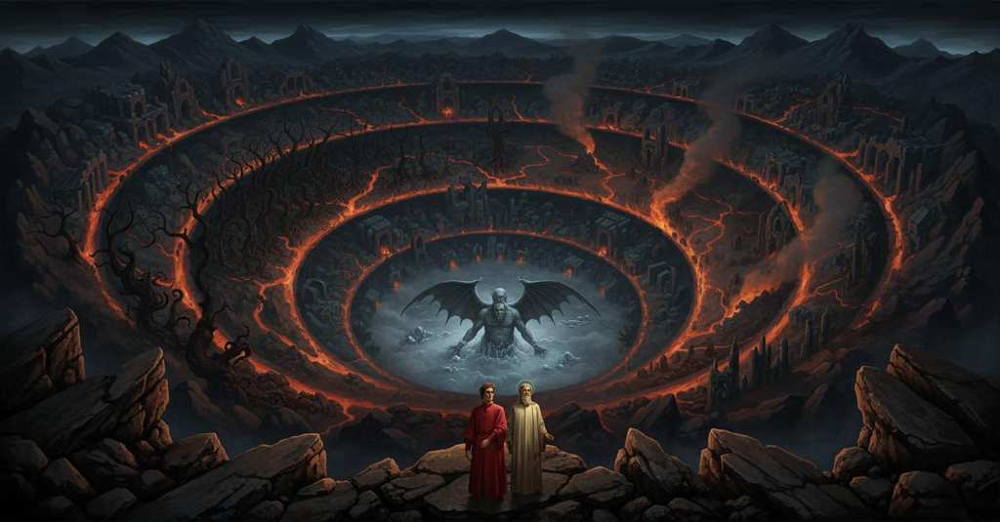

Inferno (Summary)

Canto 1
A metà della vita, il narratore si ritrova in una selva oscura dopo aver smarrito la via diritta, e ne descrive l'asprezza e il terrore. Giunto ai piedi di un colle illuminato dai raggi del sole, la sua paura si placa; dopo aver guardato indietro il passo pericoloso da cui è fuggito, riprende il cammino salendo la piaggia deserta.
In the middle of life, the narrator finds himself in a dark wood after losing the straight path, and describes its harshness and terror. Having reached the foot of a hill illuminated by the sun's rays, his fear subsides; after looking back at the dangerous passage from which he has fled, he resumes his journey by climbing the deserted slope.
人生の半ばで、語り手は正しい道を見失った後に暗い森にいることに気づき、その厳しさと恐怖を描写する。太陽の光に照らされた丘のふもとに着くと、彼の恐怖は和らぐ。そして、自分が逃れてきた危険な道を振り返った後、彼は人けのない斜面を登って旅を再開する。
All'inizio della salita, il narratore trova sul cammino una lonza agile dal pelo maculato, che gli impedisce di avanzare, ma la luce del mattino gli dà motivo di sperare. Poi gli appaiono un leone dalla fame rabbiosa e una lupa magra, carica di ogni brama; il terrore suscitato dalla lupa gli fa perdere la speranza di raggiungere l'altezza e lo respinge a poco a poco verso il luogo dove il sole tace.
At the beginning of the climb, the narrator finds in his path a nimble leopard with spotted fur, which prevents him from going forward, but the morning light gives him reason to hope. Then a lion with ravenous hunger and a lean she-wolf, laden with every craving, appear to him; the terror aroused by the she-wolf makes him lose hope of reaching the height and gradually drives him back toward the place where the sun is silent.
登りの初めに、語り手は道の上で斑の毛皮を持つ素早い豹に出会い、それは彼が先へ進むのを妨げるが、朝の光は彼に希望を抱く理由を与える。次に、猛々しい飢えを持つ獅子と、あらゆる欲望を抱えた痩せた雌狼が彼の前に現れる。雌狼が引き起こす恐怖は、彼から高みへ達する希望を失わせ、太陽が沈黙する場所へと少しずつ押し戻す。
Mentre il narratore arretra verso il luogo oscuro, gli appare una figura resa fioca da un lungo silenzio, alla quale chiede misericordia. La figura si rivela essere Virgilio, poeta mantovano che cantò Enea e visse a Roma sotto Augusto, e gli domanda perché rinunci al monte fonte di ogni gioia. Il narratore riconosce in lui il proprio maestro e modello poetico e gli implora aiuto contro la lupa che lo respinge e lo fa tremare di paura.
While the narrator retreats toward the dark place, a figure made faint by a long silence appears to him, and he asks it for mercy. The figure reveals himself to be Virgil, a Mantuan poet who sang of Aeneas and lived in Rome under Augustus, and asks him why he is giving up the mountain that is the source of all joy. The narrator recognizes in him his own master and poetic model and implores his help against the she-wolf that drives him back and makes him tremble with fear.
語り手が暗い場所へ後退していると、長い沈黙によってかすかになった一人の姿が彼の前に現れ、彼はその者に憐れみを求める。その姿は、自らがアエネアスを歌いアウグストゥスのもとでローマに生きたマントヴァの詩人ウェルギリウスであると明かし、なぜ彼があらゆる喜びの源である山を諦めるのかと尋ねる。語り手は彼を自らの師であり詩的な模範であると認め、自分を押し戻し恐怖で震えさせる雌狼から救ってほしいと懇願する。
Virgilio spiega al narratore che, per salvarsi dalla selva, deve seguire un'altra via, poiché la lupa insaziabile impedisce il passaggio e uccide chiunque tenti di percorrerlo. Profetizza l'arrivo di un veltro che la scaccerà e recherà salvezza all'umile Italia. Si offre quindi di guidarlo attraverso l'Inferno, fra le grida dei dannati, e il Purgatorio, dove le anime sperano di giungere ai beati; per salire in Paradiso, invece, sarà necessaria una guida più degna di lui, poiché egli fu ribelle alla legge di Dio. Il narratore lo prega di condurlo là, affinché possa vedere la porta di san Pietro e le anime afflitte, e si mette a seguirlo.
Virgil explains to the narrator that, to save himself from the wood, he must follow another path, since the insatiable she-wolf prevents passage and kills anyone who tries to travel it. He prophesies the arrival of a Greyhound who will drive her away and bring salvation to humble Italy. He then offers to guide him through Hell, among the cries of the damned, and Purgatory, where the souls hope to reach the blessed; to ascend to Heaven, however, a guide worthier than him will be necessary, since he was rebellious to God's law. The narrator begs him to lead him there, so that he may see Saint Peter's gate and the afflicted souls, and begins to follow him.
ウェルギリウスは語り手に、森から救われるためには別の道を進まねばならないと説明する。貪欲な雌狼が通行を妨げ、そこを通ろうとする者を殺すからである。彼は、雌狼を追い払い、卑しきイタリアに救いをもたらす猟犬の到来を予言する。次いで彼は、地獄を、すなわち呪われた者たちの叫びの中を、そして魂たちが至福の者たちに至ることを希望する煉獄を通って、語り手を案内すると申し出る。しかし天国へ昇るには、神の法に背いた自分よりもふさわしい案内者が必要になる。語り手は、聖ペテロの門と苦しむ魂たちを見ることができるよう、そこへ導いてほしいと彼に願い、彼に従い始める。
Canto 2
Al calare della sera, mentre gli altri esseri viventi riposano, il narratore si prepara da solo ad affrontare le fatiche del viaggio e le sofferenze che esso suscita, invocando l'aiuto delle Muse e del proprio ingegno. Esprime però a Virgilio il dubbio di essere abbastanza forte e degno di compiere un simile cammino. Ricorda che Enea e san Paolo visitarono l'oltretomba per fini provvidenziali, legati rispettivamente alla fondazione di Roma e dell'Impero e al rafforzamento della fede che conduce alla salvezza, mentre egli non si crede pari a loro. Temendo che la propria venuta sia folle, muta proposito e, consumando nell'esitazione l'impresa dapprima accolta con ardore, vorrebbe rinunciarvi.
As evening falls, while the other living beings rest, the narrator alone prepares to face the hardships of the journey and the sufferings it arouses, invoking the help of the Muses and of his own talent. Yet he expresses to Virgil the doubt that he is strong and worthy enough to undertake such a journey. He recalls that Aeneas and Saint Paul visited the afterlife for providential purposes, connected respectively with the founding of Rome and the Empire and with the strengthening of the faith that leads to salvation, whereas he does not believe himself their equal. Fearing that his own coming may be foolish, he changes his mind and, consuming in hesitation the enterprise at first accepted with ardor, would like to abandon it.
夕暮れになると、ほかの生き物たちが休むなか、語り手はただ一人、旅の苦難とそれが引き起こす苦しみに立ち向かう準備をし、ムーサたちと自らの才知の助けを呼び求める。しかし彼はウェルギリウスに対し、そのような旅を遂行するだけの強さと資格が自分にあるのかという疑いを表明する。彼は、アイネイアスと聖パウロが、ローマと帝国の建設、そして救いへ導く信仰の強化にそれぞれ結びつく摂理的な目的のためにあの世を訪れたことを思い起こし、自分は彼らに等しいとは信じない。自分が来ることは愚かなことかもしれないと恐れ、彼は考えを変え、最初は熱意をもって受け入れた企てをためらいのうちに消耗させながら、それを放棄したいと思う。
Virgilio spiega che l'animo di Dante è oppresso dalla viltà, che spesso distoglie gli uomini dalle imprese onorevoli, e gli rivela perché è venuto in suo aiuto. Racconta che Beatrice, discesa dal cielo nel Limbo per amore e sollecitata da Lucia, a sua volta mossa da una donna gentile in cielo, gli ha chiesto di soccorrere Dante, smarrito e impaurito sulla piaggia deserta. Beatrice afferma di non temere l'Inferno, perché solo ciò che può nuocere deve essere temuto e lei, per grazia divina, è immune dalla miseria umana e dalle sue fiamme. Dopo aver riferito la richiesta di Beatrice, Virgilio dice di aver liberato Dante dalla fiera che gli sbarrava il cammino e lo rimprovera per il suo indugio, poiché tre donne benedette vegliano su di lui e le sue parole gli promettono salvezza.
Virgil explains that Dante's spirit is oppressed by cowardice, which often turns men away from honorable enterprises, and reveals why he has come to his aid. He recounts that Beatrice, descended from Heaven into Limbo out of love and urged by Lucia, herself moved by a noble lady in Heaven, asked him to rescue Dante, lost and afraid on the desolate slope. Beatrice states that she does not fear Hell, because only what can cause harm ought to be feared, and she, by divine grace, is immune to human misery and its flames. After reporting Beatrice's request, Virgil says that he freed Dante from the beast blocking his path and rebukes him for his hesitation, since three blessed ladies watch over him and his words promise him salvation.
ウェルギリウスは、ダンテの魂が、しばしば人を名誉ある企てから遠ざける卑怯さに圧迫されていると説明し、自分が助けに来た理由を明かす。彼は、愛ゆえに天から辺獄へ下り、ルチアに促され、そのルチアも天にいる高貴な婦人に動かされていたベアトリーチェが、荒れ果てた斜面で道を失い恐れているダンテを救うよう自分に頼んだと語る。ベアトリーチェは、害を与えうるものだけが恐れられるべきであり、自分は神の恩寵によって人間の惨めさとその炎を免れているので、地獄を恐れないと述べる。ベアトリーチェの願いを伝えた後、ウェルギリウスは、道を塞ぐ獣からダンテを解放したと言い、三人の祝福された婦人が彼を見守り、自らの言葉が彼に救いを約束しているのだから、ためらう彼を叱責する。
Rincuorato dal racconto di Virgilio, Dante ritrova vigore, come i fiori piegati dal gelo notturno che si aprono al sole. Ringrazia Beatrice per la sua pietà e Virgilio per aver prontamente obbedito alle sue parole veraci, dichiarando di essere tornato al suo primo proposito. Riconosce Virgilio come guida, signore e maestro, e i due si avviano insieme per il cammino alto e silvestro.
Encouraged by Virgil's account, Dante regains strength, like flowers bent by the night's frost that open in the sun. He thanks Beatrice for her compassion and Virgil for having promptly obeyed her truthful words, declaring that he has returned to his first purpose. He acknowledges Virgil as guide, lord, and master, and the two set out together along the high and wild path.
ウェルギリウスの話に励まされ、ダンテは、夜の霜に折れ曲がった花が太陽のもとで開くように、力を取り戻す。彼はベアトリーチェの慈悲と、彼女の真実の言葉にすぐ従ったウェルギリウスに感謝し、最初の決意に戻ったと宣言する。彼はウェルギリウスを導き手、主、師として認め、二人はともに高く荒々しい道を進み始める。
Canto 3
Dante e Virgilio giungono a una porta sulla cui sommità è scritta una cupa iscrizione che annuncia la città dolente, il dolore eterno e la dannazione, ordinando a chi entra di abbandonare ogni speranza. L'iscrizione dichiara che la porta fu creata dalla giustizia divina, dalla somma sapienza e dal primo amore, e che durerà eternamente. Dante trova terribile il suo significato, ma Virgilio gli ordina di lasciare ogni sospetto e ogni viltà. Spiegandogli che vedranno le genti dolorose che hanno perduto il bene dell'intelletto, Virgilio gli prende la mano e lo conduce nelle cose segrete.
Dante and Virgil arrive at a gate upon whose summit is written a dark inscription that announces the city of sorrow, eternal pain, and damnation, commanding those who enter to abandon all hope. The inscription declares that the gate was created by divine justice, highest wisdom, and first love, and that it will endure eternally. Dante finds its meaning terrifying, but Virgil orders him to leave behind every doubt and every cowardice. Explaining that they will see the sorrowful people who have lost the good of the intellect, Virgil takes his hand and leads him into the secret things.
ダンテとウェルギリウスは、その頂に、悲しみの都、永遠の苦痛、そして断罪を告げ、入る者にあらゆる希望を捨てるよう命じる暗い銘が記された門に到着する。その銘は、この門が神の正義、最高の知恵、そして最初の愛によって造られ、永遠に存続すると宣言している。ダンテはその意味を恐ろしいと感じるが、ウェルギリウスはあらゆる疑いとあらゆる卑怯さを捨てるよう彼に命じる。善なる知性を失った悲しむ人々を見るのだと説明しながら、ウェルギリウスは彼の手を取り、秘密の事柄の中へと導く。
Dante ode nell'aria senza stelle sospiri, pianti, grida e parole discordi che formano un tumulto incessante, e ne è atterrito. Virgilio spiega che sono le anime di coloro che vissero senza infamia né lode, insieme agli angeli che non furono né ribelli né fedeli a Dio, ma pensarono solo a sé. Respinti dal cielo e dal profondo Inferno, poiché perfino i dannati potrebbero gloriarsi al loro confronto, essi non hanno speranza di morire e il mondo non conserva memoria di loro. Dante vede queste schiere inseguire senza posa un'insegna che corre vorticosamente e riconosce l'ombra di colui che per viltà fece il gran rifiuto. Gli sciagurati, nudi e tormentati da mosconi e vespe, versano sangue e lacrime che vermi molesti raccolgono ai loro piedi.
Dante hears in the starless air sighs, weeping, cries, and discordant words that form an unceasing tumult, and he is terrified by them. Virgil explains that they are the souls of those who lived without infamy or praise, together with the angels who were neither rebellious nor faithful to God, but thought only of themselves. Rejected by Heaven and by deep Hell, since even the damned might glory in comparison with them, they have no hope of dying and the world preserves no memory of them. Dante sees these crowds ceaselessly pursuing a banner that runs whirlingly and recognizes the shade of him who through cowardice made the great refusal. The wretches, naked and tormented by gadflies and wasps, shed blood and tears that troublesome worms gather at their feet.
ダンテは星のない空気の中で、ため息、泣き声、叫び、そして不調和な言葉が絶え間ない騒音をなしているのを聞き、それに恐怖する。ウェルギリウスは、彼らは汚名も賞賛もなく生きた者たちの魂であり、神に反逆も忠誠もせず、ただ自分自身だけを考えた天使たちとともにいるのだと説明する。天国からも深い地獄からも拒まれ、地獄の罪人たちでさえ彼らと比べれば誇りを抱きうるため、彼らには死ぬ希望がなく、世は彼らの記憶を残さない。ダンテは、渦を巻くように走る旗を休みなく追うこれらの群れを見て、卑怯さゆえに大いなる拒否をした者の影を認める。裸でアブとハチに苦しめられるこの哀れな者たちは、血と涙を流し、それを不快な蛆虫が彼らの足元で集める。
Dante vede sulla riva di un grande fiume anime che sembrano pronte a passare e chiede a Virgilio chi siano e quale usanza le renda tanto sollecite. Virgilio gli dice che lo saprà quando si fermeranno sulla triste riva dell'Acheronte. Giunge allora su una barca Caronte, un vecchio dai capelli bianchi, che condanna le anime malvagie alle tenebre eterne e ordina a Dante, perché vivo, di allontanarsi dai morti. Poiché Dante non si muove, Caronte gli predice che attraverserà per un'altra via, trasportato da una barca più leggera. Virgilio placa il nocchiero invocando la volontà divina, e Caronte tace con gli occhi circondati da fiamme.
Dante sees on the shore of a great river souls that seem ready to cross and asks Virgil who they are and what custom makes them so eager. Virgil tells him that he will know when they stop on the sorrowful shore of Acheron. Then Charon arrives in a boat, an old man with white hair, who condemns the wicked souls to eternal darkness and orders Dante, because he is alive, to move away from the dead. Since Dante does not move, Charon predicts that he will cross by another route, carried by a lighter boat. Virgil calms the ferryman by invoking the divine will, and Charon falls silent with eyes surrounded by flames.
ダンテは大きな川の岸に、渡ろうとしているように見える魂たちを見て、彼らが誰であり、どのような慣わしが彼らをそれほど急がせるのかをウェルギリウスに尋ねる。ウェルギリウスは、アケロンの悲しい岸辺で立ち止まれば、それを知るだろうと彼に言う。すると白髪の老人であるカロンが舟で到着し、邪悪な魂たちを永遠の闇へと断罪し、生者であるダンテに死者たちから離れるよう命じる。ダンテが動かないため、カロンは、彼が別の道を通り、より軽い舟に運ばれて渡るだろうと予言する。ウェルギリウスは神の意志を引き合いに出して渡し守をなだめ、カロンは炎に囲まれた目をしたまま黙る。
Le anime stanche e nude, udite le parole crudeli di Caronte, impallidiscono, digrignano i denti, bestemmiano Dio, i propri genitori, la stirpe umana e la loro nascita, quindi si raccolgono piangendo sulla riva malvagia. Caronte, con occhi ardenti, le raduna nella barca e colpisce con il remo chi indugia; esse si gettano una a una dalla riva, come foglie d'autunno o uccelli richiamati. Virgilio spiega a Dante che tutte le anime morte nell'ira di Dio giungono qui da ogni paese e desiderano attraversare l'Acheronte perché la giustizia divina muta il loro timore in desiderio; nessuna anima buona passa di qui, e perciò l'ira di Caronte verso Dante rivela il significato delle sue parole. Subito dopo la terra oscura trema violentemente, un vento e una luce vermiglia gli tolgono ogni senso, e Dante cade come vinto dal sonno.
The weary and naked souls, having heard Charon's cruel words, turn pale, gnash their teeth, blaspheme God, their own parents, the human race, and their birth, then gather weeping on the wicked shore. Charon, with burning eyes, gathers them into the boat and strikes with his oar whoever lingers; they cast themselves one by one from the shore, like autumn leaves or birds answering a call. Virgil explains to Dante that all the souls who die in God's wrath come here from every land and desire to cross Acheron because divine justice turns their fear into desire; no good soul passes here, and therefore Charon's anger toward Dante reveals the meaning of his words. Immediately afterward the dark ground trembles violently, a wind and a crimson light deprive him of every sense, and Dante falls as if overcome by sleep.
カロンの残酷な言葉を聞いた疲れ果て裸の魂たちは、青ざめ、歯を食いしばり、神、自分たちの両親、人類、そして自らの誕生を呪い、それから邪悪な岸辺に泣きながら集まる。燃える目をしたカロンは彼らを舟に集め、ためらう者を櫂で打つ。彼らは秋の木の葉や呼び声に応じる鳥のように、岸から一人ずつ身を投げる。ウェルギリウスはダンテに、神の怒りのうちに死ぬすべての魂があらゆる土地からここへ来て、神の正義が彼らの恐れを欲望へ変えるためにアケロンを渡ることを望むのだと説明する。善き魂はここを通らず、それゆえダンテに対するカロンの怒りは彼の言葉の意味を明らかにする。その直後、暗い地面が激しく震え、風と深紅の光が彼からすべての感覚を奪い、ダンテは眠りに打ち負かされたかのように倒れる。
Canto 4
Un forte tuono risveglia Dante, che si trova sull'orlo della valle oscura, profonda e nebulosa dell'abisso infernale. Virgilio, pallido per la pietà che prova per le anime sottostanti e non per paura, lo guida nella discesa verso il primo cerchio. Qui l'aria eterna trema per i sospiri, senza pianti di tormento, delle numerose schiere di bambini, donne e uomini. Virgilio spiega che queste anime, fra le quali egli stesso, non peccarono ma non ricevettero il battesimo o non adorarono debitamente Dio prima del cristianesimo; perciò vivono senza speranza, nel solo desiderio di Dio. Dante prova grande dolore nell'apprendere che in quel Limbo sono sospese persone di grande valore.
A loud thunderclap awakens Dante, who finds himself on the edge of the dark, deep, and misty valley of the infernal abyss. Virgil, pale because of the pity he feels for the souls below and not because of fear, leads him down toward the first circle. Here the eternal air trembles with the sighs, without cries of torment, of the numerous throngs of children, women, and men. Virgil explains that these souls, among whom he himself is included, did not sin but did not receive baptism or duly worship God before Christianity; therefore they live without hope, in the mere desire for God. Dante feels great sorrow on learning that people of great worth are suspended in that Limbo.
大きな雷鳴がダンテを目覚めさせ、彼は地獄の深淵の暗く、深く、霧深い谷の縁にいることに気づく。地下の魂たちに抱く憐れみのために、恐怖のためではなく青ざめたウェルギリウスは、彼を第一圏へと下って導く。そこでは、子供、女、男からなる数多くの群れの、責め苦の叫びのない溜息によって、永遠の空気が震えている。ウェルギリウスは、彼自身を含むこれらの魂は罪を犯さなかったが、洗礼を受けなかったか、キリスト教以前に神を正しく崇拝しなかったため、希望なく、ただ神を望むうちに生きているのだと説明する。ダンテは、その辺獄に大いなる価値を持つ人々が留め置かれていると知り、深い悲しみを覚える。
Dante chiede a Virgilio se qualcuno sia mai uscito dal Limbo per i propri meriti o per quelli altrui e sia divenuto beato. Virgilio racconta che, poco dopo il suo arrivo in quel luogo, vi giunse un potente coronato dal segno della vittoria, che trasse fuori Adamo, Abele, Noè, Mosè, Abramo, Davide, Israele con la sua famiglia, Rachele e molti altri, rendendoli beati; prima di loro nessuno spirito umano era stato salvato. Proseguendo attraverso la fitta selva delle anime, i due vedono in lontananza un fuoco che vince un emisfero di tenebre e illumina un luogo abitato da gente onorevole. Virgilio spiega che la fama onorata di queste anime nel mondo dei vivi ha ottenuto loro una grazia celeste che le distingue dalle altre. Allora una voce invita a onorare l'altissimo poeta e annuncia il ritorno della sua ombra.
Dante asks Virgil whether anyone has ever left Limbo through his own merits or those of another and become blessed. Virgil recounts that, shortly after his arrival in that place, a powerful one crowned with the sign of victory came there and drew out Adam, Abel, Noah, Moses, Abraham, David, Israel with his family, Rachel, and many others, making them blessed; before them no human spirit had been saved. As they continue through the dense forest of souls, the two see in the distance a fire that overcomes a hemisphere of darkness and illuminates a place inhabited by honorable people. Virgil explains that the honored fame of these souls in the world of the living has obtained for them a heavenly grace that distinguishes them from the others. Then a voice calls for honor to be given to the highest poet and announces the return of his shade.
ダンテはウェルギリウスに、誰かが自らの功徳によって、あるいは他者の功徳によって辺獄を出て、至福者となったことがあるのかを尋ねる。ウェルギリウスは、自分がその場所に着いて間もなく、勝利のしるしを冠した強大な者がそこへ来て、アダム、アベル、ノア、モーセ、アブラハム、ダヴィデ、家族とともにいるイスラエル、ラケル、そしてほかの多くの者を連れ出し、彼らを至福者にしたと語る。彼ら以前には、いかなる人間の霊も救われていなかった。魂の密な森を進みながら、二人は遠くに、闇の半球を打ち負かし、名誉ある人々が住む場所を照らす火を見る。ウェルギリウスは、生者の世界におけるこれらの魂の誉れ高い名声が、彼らを他の者たちから区別する天上の恩寵を得させたのだと説明する。すると声が、至高の詩人を称えるよう呼びかけ、その影の帰還を告げる。
Quattro grandi ombre si avvicinano a Dante e Virgilio: Omero, Orazio, Ovidio e Lucano. I poeti rendono onore a Virgilio e accolgono Dante nella loro schiera, cosicché egli diventa il sesto fra tanto sapere. I sei si dirigono verso la luce, conversando di cose che Dante ritiene bello tacere. Giungono ai piedi di un nobile castello, cinto da sette alte mura e difeso da un piccolo fiume, che attraversano come fosse terra solida; quindi oltrepassano sette porte e arrivano a un prato di fresca verdura. Qui vedono anime dall'aspetto autorevole, dagli occhi gravi e dalle voci soavi, e si spostano in un luogo aperto, luminoso e alto, dal quale possono osservarle tutte.
Four great shades approach Dante and Virgil: Homer, Horace, Ovid, and Lucan. The poets honor Virgil and welcome Dante into their company, so that he becomes the sixth among such wisdom. The six head toward the light, speaking of things that Dante considers fitting to leave unspoken. They arrive at the foot of a noble castle, encircled by seven high walls and defended by a small river, which they cross as if it were solid ground; they then pass through seven gates and reach a meadow of fresh greenery. Here they see souls of authoritative appearance, with grave eyes and gentle voices, and move to an open, luminous, elevated place from which they can observe them all.
四つの偉大な影がダンテとウェルギリウスに近づく。すなわち、ホメロス、ホラティウス、オウィディウス、ルカヌスである。詩人たちはウェルギリウスに敬意を表し、ダンテを自分たちの一団に迎え入れるので、彼はこれほどの知恵の中で六人目となる。六人は光に向かって進み、ダンテが語らずにおくのがふさわしいと考える事柄について話す。彼らは七重の高い城壁に囲まれ、小さな川によって守られた高貴な城のふもとに着き、その川を固い地面であるかのように渡る。それから七つの門を通り抜け、新緑の牧草地に着く。そこでは、威厳ある姿、重々しい目、穏やかな声をもつ魂たちを見て、彼ら全員を見渡せる開けた、明るく高い場所へ移る。
Sul prato verde del castello, Dante contempla numerosi spiriti magnanimi e riconosce figure eroiche e storiche quali Elettra, Ettore, Enea, Cesare, Camilla, Pentesilea, il re Latino, Bruto, Lucrezia e il Saladino. Alzando lo sguardo, vede Aristotele, il «maestro di color che sanno», seduto fra i filosofi e onorato da tutti, con Socrate e Platone più vicini a lui. Scorge inoltre Democrito, Diogene, Anassagora, Talete e altri filosofi, nonché Dioscoride, Orfeo, Cicerone, Lino, Seneca, Euclide, Tolomeo, Ippocrate, Avicenna, Galeno e Averroè. Poiché il tema lo sospinge innanzi, Dante dichiara di non poterli nominare tutti. La compagnia dei sei poeti si divide: Virgilio conduce Dante fuori dalla luce tranquilla, nell'aria tremante di un luogo dove non splende alcuna luce.
On the castle's green meadow, Dante beholds numerous great spirits and recognizes heroic and historical figures such as Electra, Hector, Aeneas, Caesar, Camilla, Penthesilea, King Latinus, Brutus, Lucretia, and Saladin. Raising his gaze, he sees Aristotle, the “master of those who know,” seated among the philosophers and honored by all, with Socrates and Plato closest to him. He also catches sight of Democritus, Diogenes, Anaxagoras, Thales, and other philosophers, as well as Dioscorides, Orpheus, Cicero, Linus, Seneca, Euclid, Ptolemy, Hippocrates, Avicenna, Galen, and Averroes. Since the subject urges him onward, Dante declares that he cannot name them all. The company of six poets divides: Virgil leads Dante out of the tranquil light, into the trembling air of a place where no light shines.
城の緑の牧草地で、ダンテは数多くの偉大な霊を眺め、エレクトラ、ヘクトル、アエネアス、カエサル、カミッラ、ペンテシレイア、ラティヌス王、ブルトゥス、ルクレティア、サラディンといった英雄的・歴史的人物を見分ける。視線を上げると、彼は「知る者たちの師」であるアリストテレスが哲学者たちの間に座り、すべての者から敬意を受け、ソクラテスとプラトンが最も近くにいるのを見る。さらに彼は、デモクリトス、ディオゲネス、アナクサゴラス、タレス、その他の哲学者たち、ならびにディオスコリデス、オルフェウス、キケロ、リノス、セネカ、エウクレイデス、プトレマイオス、ヒポクラテス、アヴィセンナ、ガレノス、アヴェロエスを見る。主題が彼を先へと急がせるため、ダンテは彼らすべてを名指しすることはできないと述べる。六人の詩人の一行は分かれ、ウェルギリウスはダンテを静かな光の外へ、いかなる光も輝かない場所の震える空気の中へ導く。
Canto 5
Dante e Virgilio scendono dal primo al secondo cerchio dell’Inferno, più stretto e tanto più doloroso. Qui Minosse, giudice orribile, esamina le colpe delle anime che si confessano davanti a lui e, avvolgendo la coda tante volte quanti sono i cerchi da discendere, stabilisce la loro destinazione. Minosse ammonisce Dante di guardarsi dall’ingresso e da chi si fida, ma Virgilio gli impone di non ostacolare il viaggio voluto dalla volontà divina.
Dante and Virgil descend from the first to the second circle of Hell, narrower and so much more painful. Here Minos, a horrible judge, examines the sins of the souls that confess before him and, winding his tail as many times as there are circles to descend, determines their destination. Minos warns Dante to beware of the entrance and of whom he trusts, but Virgil commands him not to hinder the journey willed by divine will.
ダンテとウェルギリウスは、より狭く、それだけいっそう苦痛に満ちた地獄の第一の圏から第二の圏へ下る。ここで恐ろしい裁判官ミノスは、自らの前で告白する魂たちの罪を吟味し、下るべき圏の数だけ尾を巻きつけて、その行き先を定める。ミノスはダンテに、入口と信頼する相手に注意するよう警告するが、ウェルギリウスは神の意志によって望まれた旅を妨げないよう彼に命じる。
Dante giunge in un luogo privo di luce, dove un incessante turbine infernale mugghia come il mare in tempesta e trascina, percuote e tormenta le anime. Apprende che vi sono puniti i peccatori carnali, che hanno sottomesso la ragione al desiderio: il vento li porta senza tregua in ogni direzione e non lascia loro speranza né di riposo né di pena minore. Paragonando le anime a stormi di storni e a gru che avanzano in lunga fila lamentandosi, Dante chiede a Virgilio chi siano le ombre trascinate dall'aura nera.
Dante reaches a place devoid of light, where an unceasing infernal whirlwind roars like the sea in a storm and drags, strikes, and torments the souls. He learns that the carnal sinners are punished there, having subjected reason to desire: the wind carries them without respite in every direction and leaves them no hope either of rest or of lesser pain. Comparing the souls to flocks of starlings and to cranes moving forward in a long line while lamenting, Dante asks Virgil who the shades dragged by the black air are.
ダンテは光のない場所に着く。そこでは、絶え間ない地獄の旋風が嵐の海のようにうなり、魂たちを引きずり、打ち、苦しめている。彼は、理性を欲望に従わせた肉欲の罪人たちがそこで罰せられていると知る。風は彼らを休みなくあらゆる方向へ運び、休息も苦痛の軽減も希望させない。魂たちをムクドリの群れと、嘆きながら長い列で進む鶴にたとえ、ダンテはウェルギリウスに、黒い風に引きずられる影たちが誰なのかを尋ねる。
Virgilio indica a Dante celebri figure condannate per lussuria, tra cui Semiramide, Didone, Cleopatra, Elena, Achille, Paride e Tristano, insieme a più di mille anime che amore separò dalla vita. Udendo nominare le antiche donne e i cavalieri, Dante è sopraffatto dalla pietà e desidera parlare con due anime che procedono insieme, leggere nel vento. Virgilio gli dice di invitarle in nome dell'amore che le guida. Quando Dante le chiama, le due anime escono dalla schiera di Didone e si avvicinano attraverso l'aria maligna come colombe richiamate al dolce nido.
Virgil points out to Dante famous figures condemned for lust, among them Semiramis, Dido, Cleopatra, Helen, Achilles, Paris, and Tristan, together with more than a thousand souls whom love separated from life. Hearing the ancient women and knights named, Dante is overcome by pity and wishes to speak with two souls who move together, light in the wind. Virgil tells him to invite them in the name of the love that guides them. When Dante calls them, the two souls leave Dido's group and draw near through the malignant air like doves called back to their sweet nest.
ウェルギリウスはダンテに、セミラミス、ディードー、クレオパトラ、ヘレナ、アキレウス、パリス、トリスタンをはじめ、愛によって命から引き離された千以上の魂とともに、肉欲のために罰せられた名高い人物たちを示す。古代の女たちと騎士たちの名を聞き、ダンテは憐れみに圧倒され、風の中を軽やかに、共に進む二つの魂と話したいと望む。ウェルギリウスは、彼らを導く愛の名において招くよう彼に言う。ダンテが呼びかけると、二つの魂はディードーの一団を離れ、甘い巣へ呼び戻された鳩のように悪しき空気を通って近づいてくる。
Francesca si rivolge a Dante con benevolenza e dice che, se Dio fosse loro amico, pregherebbero per la sua pace, poiché egli ha pietà della loro pena. Racconta di essere nata presso la foce del Po e spiega che l'amore attrasse Paolo alla sua bellezza, poi la prese così intensamente per il suo fascino da non abbandonarla mai; l'amore li condusse alla medesima morte, e Caina attende chi li uccise. Dante, commosso, le chiede come il loro amore si rivelò durante il tempo dei dolci sospiri. Francesca risponde che ricordare la felicità nella miseria è il dolore più grande, ma narra che lei e Paolo, soli e senza sospetto, leggevano per diletto la storia di Lancillotto: alla scena del bacio desiderato, Paolo le baciò tremando la bocca, e il libro con il suo autore fu il loro Galeotto. Mentre Francesca parla, Paolo piange, e Dante, vinto dalla pietà, sviene e cade come un corpo morto.
Francesca addresses Dante kindly and says that, if God were their friend, they would pray for his peace, since he has pity for their suffering. She tells him that she was born near the mouth of the Po and explains that love drew Paolo to her beauty, then seized her so intensely through his charm that it never abandons her; love led them to the same death, and Caina awaits the one who killed them. Moved, Dante asks her how their love revealed itself during the time of sweet sighs. Francesca replies that remembering happiness in misery is the greatest pain, but relates that she and Paolo, alone and unsuspecting, were reading for pleasure the story of Lancelot: at the scene of the desired kiss, Paolo tremblingly kissed her on the mouth, and the book and its author were their Galeotto. While Francesca speaks, Paolo weeps, and Dante, overcome by pity, faints and falls like a dead body.
フランチェスカはダンテに親しみをこめて語りかけ、神が自分たちの友であったなら、彼が自分たちの苦しみを憐れんでいるので、彼の平安を祈るだろうと言う。彼女はポー川の河口近くで生まれたと語り、愛がパオロを自分の美しさへと引き寄せ、次いで彼の魅力によって自分をあまりに強く捉えたため、今も自分を離れないのだと説明する。愛は二人を同じ死へ導き、二人を殺した者をカイナが待っている。心を動かされたダンテは、甘い溜息の時に二人の愛がどのように明らかになったのかを尋ねる。フランチェスカは、不幸の中で幸福を思い出すことは最大の苦痛だと答えるが、自分とパオロが二人きりで何の疑いもなく、楽しみのためにランスロットの物語を読んでいたと語る。待ち望まれた口づけの場面で、パオロは震えながら彼女の口に口づけし、その本と作者が二人のガレオットとなった。フランチェスカが話す間、パオロは泣き、憐れみに打ち負かされたダンテは気を失い、死んだ体のように倒れる。
Canto 6
Dante riprende i sensi dopo lo svenimento causato dalla pietà per i due cognati e si trova nel terzo cerchio, dove una pioggia eterna, fredda e sudicia di grandine, acqua scura e neve tormenta le anime. La terra fetida accoglie i dannati, sui quali Cerbero, mostro crudele dalle tre gole canine, abbaia, graffia, scuoia e squarta. Alla vista dei viandanti il demone spalanca le fauci e mostra le zanne, ma Virgilio raccoglie la terra e gliela getta a piene manciate nelle bocche fameliche. Come un cane si quieta quando addenta il cibo, Cerbero si placa, e il suo latrato assordante cessa.
Dante regains his senses after the swoon caused by pity for the two in-laws and finds himself in the third circle, where an eternal, cold, filthy rain of hail, dark water, and snow torments the souls. The fetid earth receives the damned, over whom Cerberus, a cruel monster with three canine throats, barks, claws, flays, and quarters. At the sight of the travelers the demon throws open its jaws and shows its fangs, but Virgil gathers earth and throws it by full handfuls into its ravenous mouths. As a dog grows quiet when it bites its food, Cerberus is calmed, and its deafening barking ceases.
ダンテは二人の姻族への憐れみによって生じた失神から意識を取り戻し、雹、黒い水、雪からなる永遠に冷たく汚れた雨が魂たちを責め苦に遭わせる第三の圏にいることを知る。悪臭を放つ地は亡者たちを受け入れ、その上で三つの犬の喉をもつ残酷な怪物ケルベロスが吠え、引っかき、皮を剥ぎ、八つ裂きにする。旅人たちを見ると悪魔は顎を大きく開いて牙を見せるが、ウェルギリウスは土を拾い、それを貪欲な口々へ両手いっぱいに投げ入れる。犬が食べ物に噛みつくと静かになるように、ケルベロスは鎮まり、その耳をつんざく吠え声はやむ。
Dante e Virgilio camminano sulle anime dei golosi, schiacciate dalla pioggia greve; una di esse si leva a sedere e si rivela Ciacco, fiorentino dannato per il peccato della gola. Interrogato da Dante sulla città divisa, Ciacco profetizza che, dopo una lunga contesa e spargimento di sangue, una parte scaccerà l'altra, ma entro tre anni cadrà a sua volta e l'altra prevarrà, mantenendo a lungo gli avversari oppressi. Aggiunge che a Firenze vi sono soltanto due giusti, non ascoltati, e che superbia, invidia e avarizia hanno acceso i cuori. Dante chiede poi di Farinata, Tegghiaio, Iacopo Rusticucci, Arrigo, Mosca e altri uomini illustri; Ciacco risponde che sono nel profondo Inferno per colpe più gravi e lo prega di conservarne il ricordo nel mondo. Poi distoglie lo sguardo, china il capo e ricade fra le altre anime cieche.
Dante and Virgil walk upon the souls of the gluttons, crushed by the heavy rain; one of them rises to a sitting position and reveals himself as Ciacco, a Florentine damned for the sin of gluttony. Questioned by Dante about the divided city, Ciacco prophesies that, after a long conflict and bloodshed, one faction will drive out the other, but within three years it will in turn fall and the other will prevail, keeping its enemies oppressed for a long time. He adds that in Florence there are only two just men, who are not heeded, and that pride, envy, and avarice have set hearts aflame. Dante then asks about Farinata, Tegghiaio, Iacopo Rusticucci, Arrigo, Mosca, and other illustrious men; Ciacco replies that they are in the depths of Hell for graver sins and begs him to preserve his memory in the world. Then he turns away his gaze, lowers his head, and falls back among the other blind souls.
ダンテとウェルギリウスは、重い雨に押しつぶされた大食の罪人たちの魂の上を歩く。そのうちの一人が身を起こして、大食の罪によって罰せられたフィレンツェ人チャッコであることを明かす。分裂した都市についてダンテに問われると、チャッコは、長い争いと流血ののち、一方の党派が他方を追放するが、三年以内に今度はその党派が倒れ、他方が勝利して敵対者を長く圧迫し続けると予言する。彼はさらに、フィレンツェには正しい者が二人しかおらず、彼らは聞き入れられず、傲慢、嫉妬、貪欲が人々の心を燃え立たせたのだと付け加える。次にダンテはファリナータ、テッジャイオ、ヤコポ・ルスティクッチ、アッリーゴ、モスカ、その他の著名な人々について尋ねるが、チャッコは、彼らはより重い罪のため地獄の深みへいると答え、自分を地上で記憶にとどめてほしいと願う。それから彼は視線をそらし、頭を垂れ、ほかの盲いた魂たちの中へ再び倒れ込む。
Virgilio spiega a Dante che Ciacco non si desterà prima del suono della tromba angelica, quando la potenza nemica verrà e ogni anima rivedrà la propria tomba, riprenderà il corpo e udrà la sentenza eterna. Mentre attraversano lentamente la sordida mescolanza delle ombre e della pioggia, Dante chiede se i tormenti dei dannati cresceranno, diminuiranno o resteranno ugualmente cocenti dopo il grande giudizio. Virgilio risponde che, poiché quanto più una cosa è perfetta tanto più sente il bene e il dolore, queste anime maledette, pur non raggiungendo mai la vera perfezione, dopo la resurrezione sentiranno più sofferenza che ora. Proseguendo lungo il cerchio e conversando, giungono al punto in cui si scende e trovano Pluto, il grande nemico.
Virgil explains to Dante that Ciacco will not awaken before the sound of the angelic trumpet, when the hostile power comes and every soul sees its own tomb again, takes back its body, and hears the eternal sentence. As they slowly cross the foul mixture of shades and rain, Dante asks whether the torments of the damned will increase, lessen, or remain equally burning after the great judgment. Virgil replies that, since the more perfect a thing is, the more it feels good and pain, these cursed souls, although they will never attain true perfection, will feel more suffering after the resurrection than they do now. Continuing along the circle and conversing, they reach the point where one descends and find Plutus, the great enemy.
ウェルギリウスはダンテに、敵対する力が到来し、すべての魂が再び自らの墓を見て、肉体を取り戻し、永遠の判決を聞く天使のラッパの響きより前には、チャッコは目覚めないと説明する。二人が魂たちと雨の不浄な混じり合いをゆっくり横切るあいだ、ダンテは、大いなる審判の後、地獄の者たちの苦しみが増すのか、減るのか、それとも同じように激しいままなのかを尋ねる。ウェルギリウスは、物はより完全であるほど善と苦痛をより強く感じるので、これらの呪われた魂は、真の完全さには決して達しないとはいえ、復活の後には今より多くの苦しみを感じるだろうと答える。円環に沿って進み会話を続けるうちに、二人は下りる場所に至り、大いなる敵プルートを見出す。
Canto 7
Pluto accoglie Dante e Virgilio con un grido oscuro, ma Virgilio rassicura Dante e, invocando la volontà divina che già punì la ribellione superba, ordina al demonio di tacere. Pluto cade a terra come vele gonfie abbattute dal vento, e i due scendono nella quarta cerchia, che racchiude il male dell’universo. Dante, atterrito dalla giustizia divina e dalla pena inflitta alla colpa umana, vede le anime muoversi e scontrarsi come onde che si infrangono presso Cariddi.
Plutus receives Dante and Virgil with a dark cry, but Virgil reassures Dante and, invoking the divine will that already punished the proud rebellion, orders the demon to be silent. Plutus falls to the ground like swollen sails struck down by the wind, and the two descend into the fourth circle, which encloses the evil of the universe. Terrified by divine justice and by the punishment inflicted for human sin, Dante sees the souls moving and colliding like waves that break near Charybdis.
プルートは暗い叫びでダンテとウェルギリウスを迎えるが、ウェルギリウスはダンテを安心させ、すでに高慢な反逆を罰した神の意志を呼び起こして、悪魔に黙るよう命じる。プルートは風に打ち倒された膨らんだ帆のように地面に倒れ、二人は宇宙の悪を包み込む第四圏へ下る。神の正義と人間の罪に科された罰に恐れおののきながら、ダンテは、カリュディスの近くで砕ける波のように魂たちが動き、衝突するのを見る。
Dante vede una folla immensa di anime divisa in due schiere, che spingono pesi con il petto, si scontrano e tornano indietro insultandosi con le grida: «Perché tieni?» e «Perché burli?». Virgilio spiega che in vita furono privi di misura nello spendere e nel trattenere i beni, e che tra coloro che accumularono vi sono chierici tonsurati, papi e cardinali dominati dall’avarizia. Le loro vite indegne e irriconoscibili li hanno resi ormai impossibili da distinguere, e al giudizio finale gli avari risorgeranno con i pugni chiusi, i prodighi con i capelli recisi. Virgilio conclude che i beni affidati alla fortuna, per i quali gli uomini si affannano, sono così vani che tutto l’oro sotto la luna non darebbe riposo neppure a una di quelle anime.
Dante sees an immense crowd of souls divided into two ranks, who push weights with their chests, collide, and turn back while insulting one another with the cries: “Why do you hold?” and “Why do you squander?”. Virgil explains that in life they lacked moderation in spending and in holding onto goods, and that among those who accumulated there are tonsured clerics, popes, and cardinals dominated by avarice. Their unworthy and unrecognizable lives have now made them impossible to distinguish, and at the final judgment the avaricious will rise again with closed fists, the prodigal with shorn hair. Virgil concludes that the goods entrusted to fortune, for which men toil, are so vain that all the gold beneath the moon would not give rest even to one of those souls.
ダンテは、二つの隊列に分かれ、胸で重荷を押し、衝突し、「なぜため込むのか」「なぜ浪費するのか」と叫んで互いをののしりながら引き返す、おびただしい魂の群れを見る。ウェルギリウスは、彼らは生前、財産を使うことにも抱え込むことにも節度を欠いており、蓄えた者たちの中には貪欲に支配された剃髪の聖職者、教皇、枢機卿がいるのだと説明する。彼らの卑しく見分けのつかない生涯は、今や彼らを識別不可能にしており、最後の審判で吝嗇家は握りしめた拳で、浪費家は切られた髪でよみがえるだろう。ウェルギリウスは、人々が苦心する、運命に委ねられた財産はあまりにも空しいため、月の下にあるすべての黄金でさえ、それらの魂の一つにも休息を与えられないと結ぶ。
Dante chiede a Virgilio che cosa sia la Fortuna, che tiene fra le mani i beni del mondo. Virgilio spiega che Dio le ha assegnato il compito di distribuire e trasferire nel tempo i beni terreni da un popolo all’altro e da una stirpe all’altra, secondo un giudizio nascosto che supera la comprensione e l’opposizione umana. Le sue mutazioni sono incessanti e necessarie; gli uomini la biasimano ingiustamente, mentre ella, beata fra le altre creature prime, compie lietamente il proprio ufficio. Infine Virgilio esorta Dante a scendere, poiché il tempo passa e non è più lecito indugiare.
Dante asks Virgil what Fortune is, she who holds the goods of the world in her hands. Virgil explains that God has assigned her the task of distributing and transferring earthly goods over time from one people to another and from one lineage to another, according to a hidden judgment that surpasses human understanding and opposition. Her changes are unceasing and necessary; men unjustly blame her, while she, blessed among the other primal creatures, gladly performs her own office. Finally, Virgil urges Dante to descend, since time is passing and it is no longer permitted to linger.
ダンテはウェルギリウスに、世の財産をその手に握るフォルトゥーナとは何者かを尋ねる。ウェルギリウスは、神が彼女に、人間の理解と抵抗を超える秘められた裁きに従って、地上の財産を時とともにある民族から別の民族へ、ある血統から別の血統へと分配し移し替える役目を与えたのだと説明する。彼女の変転は絶え間なく必然的であり、人々は彼女を不当に非難するが、彼女は他の第一の被造物たちの中で祝福され、自らの務めを喜んで果たしている。最後にウェルギリウスは、時が過ぎ、もはやためらうことは許されないので、ダンテに下るよう促す。
Dante e Virgilio raggiungono una fonte d’acqua oscura che scorre in un fossato e confluisce nella palude Stige. Nel pantano vedono anime fangose e nude, quelle dei collerici, che si percuotono ferocemente con mani, testa, petto, piedi e denti. Virgilio spiega che sotto l’acqua sospirano gli accidiosi, la cui tristezza fa ribollire la superficie, e che gorgogliano il lamento per aver portato in vita un fumo accidioso nell’aria dolce. I due costeggiano la sudicia palude e giungono infine ai piedi di una torre.
Dante and Virgil reach a spring of dark water that flows in a ditch and empties into the marsh of Styx. In the bog they see muddy, naked souls, those of the wrathful, who savagely strike one another with hands, head, chest, feet, and teeth. Virgil explains that beneath the water the sullen sigh, their sadness making the surface boil, and that they gurgle their lament for having carried a sullen smoke in life within the sweet air. The two follow the edge of the filthy marsh and finally arrive at the foot of a tower.
ダンテとウェルギリウスは、溝を流れてスティクスの沼へ注ぐ暗い水の泉に着く。沼地では、憤怒の者たちの魂である泥まみれで裸の魂たちが、手、頭、胸、足、歯で激しく互いを打ち合っているのを見る。ウェルギリウスは、水の下では陰鬱な者たちがため息をつき、その悲しみが水面を沸き立たせており、彼らは甘い空気の中で生前に陰鬱な煙を抱いていたことへの哀歌を喉でごぼごぼと歌っているのだと説明する。二人は汚れた沼の縁をたどり、ついに一つの塔の麓に着く。
Canto 8
Prima che Dante e Virgilio giungano ai piedi dell’alta torre, vedono due fiammelle accese sulla cima e un’altra luce lontana che risponde al segnale. Virgilio spiega che, attraverso le onde sudicie della palude, sta arrivando ciò che li attende: una piccola barca guidata dal solo Flegiàs. Il nocchiero grida contro Dante, chiamandolo anima malvagia, ma Virgilio gli dice che li avrà soltanto per il tempo necessario a traversare il fango. Flegiàs, irato e deluso, accoglie i due nella barca; quando Dante vi sale dopo Virgilio, essa appare gravata dal peso del vivente e procede nell’acqua più affondata che con altri passeggeri.
Before Dante and Virgil reach the foot of the high tower, they see two small flames lit on its summit and another distant light answering the signal. Virgil explains that, through the filthy waves of the marsh, what awaits them is arriving: a small boat guided solely by Phlegyas. The boatman shouts against Dante, calling him an evil soul, but Virgil tells him that he will have them only for the time needed to cross the mud. Phlegyas, angry and disappointed, receives the two into the boat; when Dante boards after Virgil, it appears weighed down by the living man's weight and moves through the water more deeply sunk than with other passengers.
ダンテとウェルギリウスが高い塔の麓に着く前に、二人はその頂で灯された二つの小さな炎と、合図に応じる遠方のもう一つの光を見る。ウェルギリウスは、沼の汚れた波を通って、二人を待つもの、すなわちフレギアスだけが操る小舟が近づいているのだと説明する。船頭はダンテを邪悪な魂と呼んで叫ぶが、ウェルギリウスは、泥を渡るのに必要な間だけ自分たちを乗せるのだと彼に言う。怒り失望したフレギアスは二人を舟に迎え入れ、ダンテがウェルギリウスの後に乗り込むと、舟は生者の重みで負担を負ったように見え、ほかの乗客を乗せるときよりも深く沈んで水を進む。
Mentre la barca attraversa la palude Stigia, un dannato coperto di fango interpella Dante, che lo riconosce e lo respinge con disprezzo: è Filippo Argenti. Quando l’ira dello spirito lo spinge ad afferrare la barca, Virgilio lo respinge tra gli altri dannati e loda la sdegnosa reazione di Dante, condannando l’orgoglio che rese Argenti spregevole nel mondo. Dante desidera vederlo sprofondare nella broda prima di lasciare il lago, e Virgilio gli assicura che sarà soddisfatto. Poco dopo le anime fangose si accaniscono su Filippo Argenti, invocandone il nome, mentre egli si dilania da sé con i denti. Lasciatolo indietro, Dante ode un lamento che lo induce a fissare attentamente lo sguardo davanti a sé.
While the boat crosses the Styx marsh, a damned soul covered in mud addresses Dante, who recognizes him and rejects him with contempt: he is Filippo Argenti. When the spirit's wrath drives him to seize the boat, Virgil pushes him back among the other damned and praises Dante's indignant reaction, condemning the pride that made Argenti contemptible in the world. Dante wishes to see him sink into the mire before leaving the lake, and Virgil assures him that he will be satisfied. Soon afterward the muddy souls rage against Filippo Argenti, calling out his name, while he tears at himself with his teeth. Having left him behind, Dante hears a lament that causes him to fix his gaze attentively ahead of himself.
舟がスティクスの沼を渡るあいだ、泥に覆われた一人の罪人がダンテに声をかけ、ダンテは彼を認識して軽蔑をもって退ける。それはフィリッポ・アルジェンティである。霊の怒りが彼を舟につかみかからせると、ウェルギリウスは彼をほかの罪人たちの間へ押し戻し、アルジェンティをこの世で卑しむべき者にした傲慢を非難しつつ、ダンテの憤った反応を称賛する。ダンテは湖を離れる前に彼が泥沼へ沈むのを見たいと望み、ウェルギリウスはその望みが満たされると保証する。まもなく泥まみれの魂たちはフィリッポ・アルジェンティの名を叫びながら彼に激しく襲いかかり、彼自身も歯で自らを引き裂く。彼を後にして、ダンテは一つの嘆きを聞き、それによって自分の前方へ注意深く視線を向ける。
Virgilio annuncia a Dante l’approssimarsi della città di Dite, popolata da gravi cittadini e da una grande moltitudine. Dante ne scorge nella valle le moschee vermiglie, e Virgilio spiega che sono arrossate dall’eterno fuoco che arde al suo interno. Giunti alle alte fosse e alle mura che paiono di ferro, dopo un lungo giro il nocchiero grida loro di scendere, poiché quella è l’entrata.
Virgil announces to Dante their approach to the city of Dis, inhabited by grave citizens and a great multitude. Dante glimpses its red mosques in the valley, and Virgil explains that they are reddened by the eternal fire that burns within it. Having reached the deep moats and the walls that seem to be made of iron, after a long circuit the ferryman cries out for them to disembark, since that is the entrance.
ウェルギリウスはダンテに、重い住民たちと大きな群衆が住むディーテの都が近づいていることを告げる。ダンテは谷間にその赤いモスクを見いだし、ウェルギリウスは、それらが内部で燃える永遠の火によって赤くなっているのだと説明する。深い堀と鉄でできているように見える城壁に着いた後、長く回り込んでから、渡し守はそこが入り口なので降りるよう二人に叫ぶ。
Alle porte di Dite, più di mille angeli caduti, furiosi nel vedere un vivo nel regno dei morti, rifiutano il passaggio a Dante. Virgilio tenta di parlare con loro in disparte, ma i demoni gli chiudono la porta in faccia e lo lasciano fuori; Dante, temendo di non tornare mai indietro, implora la sua guida di non abbandonarlo. Sebbene abbattuto, Virgilio lo rassicura che nessuno può impedire il loro cammino, ricorda che l’orgoglio dei demoni fu già vinto presso una porta superiore dell’Inferno e annuncia l’arrivo di un soccorritore che aprirà loro la via.
At the gates of Dis, more than a thousand fallen angels, furious at seeing a living man in the realm of the dead, refuse Dante passage. Virgil tries to speak with them apart, but the demons shut the gate in his face and leave him outside; Dante, fearing that he will never return, begs his guide not to abandon him. Although disheartened, Virgil reassures him that no one can prevent their journey, recalls that the demons’ pride was already defeated at an upper gate of Hell, and announces the arrival of a rescuer who will open the way for them.
ディーテの門で、死者の国に生者がいるのを見て激怒した千を超える堕天使たちは、ダンテの通行を拒む。ウェルギリウスは彼らと離れて話そうとするが、悪魔たちは彼の面前で門を閉ざして彼を外に残す。二度と戻れないことを恐れたダンテは、導き手に自分を見捨てないでほしいと懇願する。落胆しながらも、ウェルギリウスは、誰も二人の行程を妨げることはできないと彼を安心させ、悪魔たちの傲慢はすでに地獄の上方の門で打ち破られたことを思い起こさせ、二人のために道を開く救助者の到来を告げる。
Canto 9
Vedendo Virgilio tornare indietro dopo il rifiuto alle porte di Dite, Dante impallidisce, e la guida cerca subito di celare il proprio turbamento. Le parole interrotte di Virgilio, che spera nell'arrivo di qualcun altro, accrescono però la paura di Dante. Egli chiede se qualcuno del primo cerchio sia mai disceso nel fondo dell'Inferno; Virgilio risponde che accade di rado, ma racconta di essere stato un tempo evocato dalla crudele Eritone per trarre uno spirito dal cerchio di Giuda. Perciò conosce la strada fino al luogo più basso e oscuro, ma avverte che non possono entrare nella città dolente, cinta dalla palude Stigia, senza ira.
Seeing Virgil return after being refused at the gates of Dis, Dante turns pale, and his guide immediately tries to conceal his own distress. Virgil's interrupted words, in which he hopes for someone else's arrival, nevertheless increase Dante's fear. He asks whether anyone from the first circle has ever descended to the bottom of Hell; Virgil replies that this happens rarely, but tells of having once been summoned by the cruel Erichtho to draw a spirit from Judas's circle. He therefore knows the road to the lowest and darkest place, but warns that they cannot enter the sorrowful city, encircled by the Styx marsh, without wrath.
ディーテの門で拒まれた後にウェルギリウスが戻ってくるのを見て、ダンテは青ざめ、導き手はただちに自らの動揺を隠そうとする。しかし、誰かほかの者の到来を願うウェルギリウスの途切れた言葉は、かえってダンテの恐怖を増す。ダンテは、第一圏の者が地獄の底まで下ったことがあるのかと尋ねる。ウェルギリウスは、それはめったにないことだと答えるが、かつて残酷なエリクトーに呼び出され、ユダの圏から一つの霊を連れ出したことを語る。そのため彼は最も低く暗い場所への道を知っているが、ステュクスの沼に囲まれた悲しみの都には、怒りなしには入れないと警告する。
Mentre Virgilio parla ancora, Dante rivolge lo sguardo all'alta torre, sulla cui cima appaiono improvvisamente tre Furie infernali, insanguinate, con membra femminili e capelli di serpenti. Virgilio le identifica come le Erinni Megera, Aletto e Tesifone, ministre della regina dell'etterno pianto; esse si lacerano il petto, si percuotono e invocano Medusa perché pietrifichi Dante, lamentando di non aver vendicato l'assalto di Teseo. Virgilio ordina a Dante di voltarsi e chiudere gli occhi e, per proteggerlo dalla vista della Gorgone, glieli copre egli stesso con le mani. Il poeta si rivolge infine ai lettori dall'intelletto sano, invitandoli a cogliere la dottrina nascosta sotto il velo dei versi strani.
While Virgil is still speaking, Dante turns his gaze toward the high tower, on whose summit three blood-stained infernal Furies suddenly appear, with female limbs and hair of snakes. Virgil identifies them as the Erinyes Megaera, Alecto, and Tisiphone, attendants of the queen of eternal lament; they tear their breasts, beat themselves, and invoke Medusa to turn Dante to stone, lamenting that they did not avenge Theseus's assault. Virgil orders Dante to turn around and close his eyes and, to protect him from the sight of the Gorgon, covers them himself with his hands. The poet finally addresses readers of sound intellect, urging them to grasp the doctrine hidden beneath the veil of the strange verses.
ウェルギリウスがまだ話しているあいだ、ダンテは高い塔へと目を向け、その頂には、女性の手足と蛇の髪をもつ、血に染まった三人の地獄のフューリーが突然現れる。ウェルギリウスは彼女たちを、永遠の嘆きの女王の侍女であるエリニュスたち、メガイラ、アレクト、ティシポネだと見分ける。彼女たちは胸を裂き、身を打ち、ダンテを石に変えるためにメドゥーサを呼び、テセウスの襲撃に報復しなかったことを嘆く。ウェルギリウスはダンテに振り返って目を閉じるよう命じ、ゴルゴンの姿から彼を守るため、自らの手でその目を覆う。詩人は最後に、健全な知性をもつ読者に呼びかけ、奇妙な詩句のヴェールの下に隠された教えを捉えるよう促す。
Un fragore terribile si avvicina sullo Stige, simile a un vento impetuoso che abbatte ogni ostacolo. Un messo celeste attraversa la palude con i piedi asciutti, disperdendo davanti a sé più di mille anime, mentre con la mano sinistra scaccia l'aria densa; Dante riconosce la sua origine divina e Virgilio gli impone di restare quieto e inchinarsi. Il messo apre senza ostacoli con una piccola verga la porta di Dite e rimprovera gli angeli ribelli per la loro vana opposizione alla volontà divina, ricordando loro la punizione di Cerbero. Poi si allontana senza rivolgere parola ai due poeti, che procedono sicuri verso la terra infernale grazie alle sue parole sante.
A terrible crashing sound approaches over the Styx, like an impetuous wind that knocks down every obstacle. A heavenly messenger crosses the marsh with dry feet, scattering more than a thousand souls before him, while with his left hand he drives away the dense air; Dante recognizes his divine origin, and Virgil orders him to remain still and bow to him. The messenger opens the gate of Dis without hindrance with a small wand and rebukes the rebel angels for their futile opposition to the divine will, reminding them of Cerberus's punishment. Then he departs without addressing a word to the two poets, who proceed safely toward the infernal land thanks to his holy words.
恐ろしい轟音が、あらゆる障害をなぎ倒す激しい風のように、ステュクス川の上を近づいてくる。天の使者が足を濡らさずに沼を渡り、左手で濃い空気を払いながら、その前方にいる千を超える魂を追い散らす。ダンテはその神聖な出自を悟り、ウェルギリウスは彼に静かにして使者へ身をかがめるよう命じる。使者は小さな杖で何の妨げもなくディーテの門を開き、神の意志に対する無益な抵抗について反逆した天使たちを叱責し、ケルベロスの罰を思い起こさせる。その後、二人の詩人に一言もかけずに去り、二人は使者の聖なる言葉によって安心して地獄の地へ進む。
Entrati senza ostacoli nella città di Dite, Dante osserva una vasta pianura piena di dolore e di tormenti, coperta ovunque da sepolcri infuocati, più terribili di quelli di Arles e Pola. Dai coperchi sollevati delle tombe escono lamenti strazianti. Virgilio spiega che vi sono sepolti gli eresiarche e i loro seguaci, raggruppati secondo le loro sette, in monumenti più o meno ardenti; poi i due procedono tra i martìri e le alte mura.
Having entered the city of Dis without hindrance, Dante observes a vast plain full of sorrow and torments, everywhere covered with fiery tombs, more terrible than those of Arles and Pola. Heart-rending laments emerge from the raised lids of the tombs. Virgil explains that the heresiarchs and their followers are buried there, grouped according to their sects, in monuments that are more or less burning; then the two proceed between the torments and the high walls.
妨げられることなくディーテの都に入ったダンテは、悲しみと苦痛に満ち、アルルとポーラのものよりも恐ろしい炎の墓で至る所が覆われた広大な平原を見る。墓の持ち上がった蓋からは、胸を裂くような嘆きが聞こえてくる。ウェルギリウスは、異端の首領たちとその追随者たちが、それぞれの宗派に従って分けられ、熱さの異なる墓所に葬られているのだと説明し、その後二人は苦痛と高い城壁の間を進む。
Canto 10
Dante e Virgilio avanzano per una via stretta tra le mura della città e i sepolcri tormentati. Dante chiede se sia possibile vedere le anime che giacciono nelle tombe, poiché tutti i coperchi sono sollevati e non vi è alcun custode. Virgilio spiega che le tombe saranno richiuse quando le anime torneranno con i corpi nel giorno del giudizio universale, e indica che qui sono sepolti Epicuro e i suoi seguaci, i quali ritenevano l'anima morta con il corpo. Aggiunge che saranno presto soddisfatti sia la domanda espressa da Dante sia il desiderio che egli tace; Dante risponde di non celare il proprio pensiero se non per parlare poco, secondo l'insegnamento ricevuto da Virgilio.
Dante and Virgil proceed along a narrow path between the walls of the city and the tormented tombs. Dante asks whether it is possible to see the souls lying in the tombs, since all the lids are raised and there is no guard. Virgil explains that the tombs will be closed again when the souls return with their bodies on the day of the Last Judgment, and indicates that Epicurus and his followers, who held that the soul died with the body, are buried here. He adds that both Dante's expressed question and the desire he keeps silent will soon be satisfied; Dante replies that he conceals his thought only in order to speak little, according to the teaching he received from Virgil.
ダンテとウェルギリウスは、都の城壁と苦しめられた墓の間の狭い道を進む。ダンテは、すべての蓋が持ち上がり見張りもいないので、墓に横たわる魂を見ることができるのかと尋ねる。ウェルギリウスは、最後の審判の日に魂が肉体とともに戻ると墓は再び閉じられると説明し、魂は肉体とともに死ぬと考えたエピクロスとその追随者たちがここに葬られていると示す。彼は、ダンテが口にした問いも、彼が黙している願いも、まもなく満たされると付け加える。ダンテは、ウェルギリウスから受けた教えに従い、少なく話すためだけに自分の思いを隠しているのだと答える。
Dante viene chiamato da una voce che esce da una delle tombe e che riconosce nel suo parlare la nobile patria fiorentina, alla quale forse essa fu troppo ostile. Virgilio gli indica Farinata, che si leva dalla tomba infuocata con fiero disprezzo dell'inferno e gli ordina di misurare le parole. Farinata domanda chi fossero gli antenati di Dante e, saputo che gli erano fieramente avversi, afferma di averli dispersi due volte insieme alla loro parte. Dante replica che i suoi furono cacciati ma tornarono entrambe le volte, mentre i seguaci di Farinata non appresero bene quell'arte.
Dante is called by a voice that comes out of one of the tombs and that recognizes in his speech the noble Florentine homeland, toward which it was perhaps too hostile. Virgil points out Farinata to him, who rises from the fiery tomb with proud contempt for hell and orders him to weigh his words. Farinata asks who Dante's ancestors were and, having learned that they were fiercely opposed to him, states that he dispersed them twice together with their party. Dante replies that his own were expelled but returned both times, whereas Farinata's followers did not learn that art well.
ダンテは、墓の一つから出る声に呼びかけられる。その声は、彼の話し方のうちに、自分がたぶんあまりにも敵対した高貴なフィレンツェの祖国を認める。ウェルギリウスは彼にファリナータを示す。彼は地獄を誇り高く軽蔑して燃える墓から立ち上がり、ダンテに言葉を慎むよう命じる。ファリナータはダンテの祖先が誰であったかを尋ね、彼らが自分に激しく敵対していたと知ると、その党派とともに二度彼らを追い散らしたと述べる。ダンテは、自分の者たちは追放されたが二度とも戻ったのに対し、ファリナータの追随者たちはその術をよく学ばなかったと答える。
Mentre Dante parla con Farinata, dalla stessa tomba si solleva fino al mento l'ombra di Cavalcante de' Cavalcanti. Piangendo, gli chiede dove sia suo figlio Guido e perché non lo accompagni in quel viaggio compiuto per altezza d'ingegno. Dante risponde che è guidato da colui che Guido ebbe forse a disdegno; Cavalcante interpreta il passato come prova della morte del figlio e, dopo l'esitazione di Dante, ricade disperato nella tomba.
While Dante speaks with Farinata, the shade of Cavalcante de' Cavalcanti rises up to the chin from the same tomb. Weeping, he asks him where his son Guido is and why he does not accompany him on that journey undertaken through loftiness of intellect. Dante replies that he is guided by the one whom Guido perhaps held in disdain; Cavalcante interprets the past tense as proof of his son's death and, after Dante's hesitation, falls back despairing into the tomb.
ダンテがファリナータと話している間、同じ墓からカヴァルカンテ・デ・カヴァルカンティの影が顎まで姿を現す。泣きながら彼は、息子グイドはどこにいて、なぜ優れた知性によって行われるその旅に同行していないのかと尋ねる。ダンテは、グイドがおそらく軽蔑した者に導かれているのだと答える。カヴァルカンテは過去形を息子の死の証拠と解釈し、ダンテがためらった後、絶望して墓の中へ倒れ戻る。
Farinata, impassibile dopo la caduta di Cavalcante, profetizza a Dante che presto conoscerà il peso dell’arte dell’esilio e gli chiede perché Firenze perseguiti la sua famiglia in ogni legge. Dante attribuisce tale odio alla strage di Montaperti, ma Farinata ricorda di avere difeso apertamente Firenze quando gli altri volevano distruggerla. Interrogato sulla loro conoscenza, spiega che i dannati vedono gli eventi lontani nel futuro ma ignorano il presente, e che la loro prescienza cesserà quando il futuro sarà chiuso. Dante chiede allora che Cavalcante sappia che suo figlio Guido è ancora vivo e che il suo precedente silenzio derivava da quell’errore; Farinata nomina Federico II e il Cardinale fra i compagni della tomba, poi scompare. Turbato dalle parole udite, Dante viene ammonito da Virgilio a conservarle e a chiedere a Beatrice il significato del cammino della sua vita; i due si dirigono quindi verso il centro per un sentiero dal fetore insopportabile.
Farinata, unmoved after Cavalcante’s fall, prophesies to Dante that he will soon know the weight of the art of exile and asks him why Florence persecutes his family in every law. Dante attributes this hatred to the slaughter of Montaperti, but Farinata recalls having openly defended Florence when the others wished to destroy it. Questioned about their knowledge, he explains that the damned see events far off in the future but are ignorant of the present, and that their foreknowledge will cease when the future is closed. Dante then asks that Cavalcante be told that his son Guido is still alive and that his earlier silence arose from that error; Farinata names Frederick II and the Cardinal among the companions in the tomb, then disappears. Troubled by the words he has heard, Dante is instructed by Virgil to retain them and to ask Beatrice for the meaning of the course of his life; the two then head toward the center along a path of unbearable stench.
カヴァルカンテが倒れた後も動じないファリナータは、ダンテがまもなく追放という術の重みを知ることになると予言し、なぜフィレンツェがあらゆる法において自分の一族を迫害するのかと尋ねる。ダンテはこの憎悪をモンタペルティの虐殺に帰するが、ファリナータは、他の者たちがフィレンツェを滅ぼそうとしたとき、自分が公然とその町を守ったことを思い起こさせる。彼らの知識について問われると、彼は、地獄の魂は遠い未来の出来事を見るが現在を知らず、その予知は未来が閉ざされるときに終わるのだと説明する。そこでダンテは、息子グイドがまだ生きていること、そして先の沈黙はその誤解から生じたことをカヴァルカンテに伝えてほしいと頼む。ファリナータは墓の仲間としてフェデリーコ二世と枢機卿を挙げ、それから姿を消す。聞いた言葉に動揺するダンテは、それを心に留め、自らの生涯の行路の意味をベアトリーチェに尋ねるようウェルギリウスに命じられる。その後二人は、耐えがたい悪臭のする小道を通って中心へ向かう。
Canto 11
Dante e Virgilio giungono sull’orlo di un’alta ripa circondata da grandi pietre rotte, davanti a una regione più crudele dell’Inferno. Sopraffatti dal terribile fetore che sale dall’abisso, si riparano dietro il coperchio di un grande avello, recante un’iscrizione che indica la tomba di papa Anastasio, colpevole di aver sviato Fotino dalla retta via. Virgilio spiega che devono indugiare finché i loro sensi si abituino al puzzo, e Dante gli chiede di impiegare utilmente quell’attesa; il maestro risponde di averci già pensato.
Dante and Virgil arrive at the edge of a high cliff surrounded by large broken stones, before a more cruel region of Hell. Overwhelmed by the terrible stench rising from the abyss, they shelter behind the lid of a great tomb, bearing an inscription that identifies it as the tomb of Pope Anastasius, guilty of having led Photinus away from the right path. Virgil explains that they must linger until their senses become accustomed to the smell, and Dante asks him to use that wait profitably; the master replies that he has already thought of it.
ダンテとウェルギリウスは、大きな砕けた石に囲まれた高い崖の縁に着き、地獄のより残酷な区域を前にする。深淵から立ち上る恐ろしい悪臭に圧倒され、二人は大きな墓の蓋の陰に身を寄せるが、そこにはフォティノスを正しい道から迷わせた罪を負う教皇アナスタシウスの墓であることを示す銘文がある。ウェルギリウスは、感覚が悪臭に慣れるまで留まらねばならないと説明し、ダンテはその待ち時間を有益に使ってほしいと頼む; 師はすでにそのことを考えていると答える。
Virgilio spiega a Dante che sotto le pietre si trovano tre cerchi dell’Inferno, destinati a punire le diverse forme della malizia, il cui fine è recare ingiuria altrui con violenza o frode. Il primo, riservato ai violenti, è diviso in tre gironi per chi usa forza contro il prossimo e i suoi beni, contro sé stesso e i propri averi, oppure contro Dio, la natura e la sua bontà. La frode, più odiosa a Dio perché è un male proprio dell’uomo, si divide tra quella contro chi non si fida, punita nel secondo cerchio con ipocriti, adulatori, falsari, ladri, simoniaci, ruffiani e barattieri, e quella contro chi accorda una fiducia speciale: i traditori sono perciò tormentati eternamente nel cerchio più basso, dove siede Dite.
Virgil explains to Dante that beneath the stones lie three circles of Hell, intended to punish the different forms of malice, whose end is to inflict injury on others through violence or fraud. The first, reserved for the violent, is divided into three rounds for those who use force against their neighbor and his goods, against themselves and their own possessions, or against God, nature, and its goodness. Fraud, more hateful to God because it is an evil peculiar to man, is divided between that against those who do not trust, punished in the second circle with hypocrites, flatterers, falsifiers, thieves, simoniacs, pimps, and barrators, and that against those who grant a special trust: traitors are therefore tormented eternally in the lowest circle, where Dis sits.
ウェルギリウスはダンテに、石の下には三つの地獄の圏があり、他者に暴力または欺瞞によって害を加えることを目的とする、さまざまな悪意の形を罰するために定められていると説明する。暴力者のための第一の圏は、隣人とその財産に力を用いる者、自分自身と自分の財産に対して用いる者、あるいは神、自然、そしてその善性に対して用いる者のために、三つの環に分けられている。人間に固有の悪であるため神によりいっそう憎まれる欺瞞は、信頼していない者に対するものと、特別な信頼を与える者に対するものに分かれる。前者は第二の圏で偽善者、追従者、偽造者、盗人、聖職売買者、女衒、収賄者とともに罰せられ、したがって裏切り者はディーテが座す最下の圏で永遠に責め苦を受ける。
Dante chiede a Virgilio perché i dannati della palude, del vento e della pioggia, che soffrono nei cerchi superiori, siano puniti fuori dalla città di Dite se sono in odio a Dio. Virgilio lo rimprovera e gli ricorda la distinzione dell’Etica fra incontinenza, malizia e bestialità: l’incontinenza offende meno Dio e merita minor biasimo. Perciò coloro che la scontano sono separati dai malvagi rinchiusi più sotto e subiscono una pena meno dura.
Dante asks Virgil why the damned of the swamp, the wind, and the rain, who suffer in the upper circles, are punished outside the city of Dis if they are hated by God. Virgil rebukes him and recalls the distinction in the Ethics between incontinence, malice, and bestiality: incontinence offends God less and deserves less blame. Therefore those who atone for it are separated from the wicked enclosed lower down and undergo a less harsh punishment.
ダンテはウェルギリウスに、沼、風、雨の中で苦しむ上方の圏の亡者たちが、神に憎まれているなら、なぜディーテの都の外で罰せられているのかと尋ねる。ウェルギリウスは彼をたしなめ、『倫理学』における無節制、悪意、獣性の区別を思い出させる。すなわち、無節制は神をより少なく害し、より少ない非難に値する。したがって、それを償う者たちはさらに下に閉じ込められた悪人たちから分けられ、より軽い罰を受けるのである。
Dante chiede a Virgilio di spiegare perché l’usura offenda la bontà divina. Virgilio risponde che la filosofia mostra come la natura proceda dall’intelletto e dall’arte di Dio e come l’arte umana la imiti; secondo la Genesi, gli uomini devono quindi vivere e prosperare grazie alla natura e al lavoro. L’usuraio disprezza invece la natura e l’arte che la segue, poiché ripone la propria speranza in un’altra via. Virgilio osserva infine che i Pesci sorgono all’orizzonte e il Carro è sopra il Coro, segnali che è tempo di proseguire verso il pendio che scende al cerchio successivo.
Dante asks Virgil to explain why usury offends divine goodness. Virgil replies that philosophy shows how nature proceeds from God’s intellect and art, and how human art imitates it; according to Genesis, people must therefore live and prosper through nature and labor. The usurer instead scorns nature and the art that follows it, because he places his hope in another path. Virgil finally observes that Pisces rises on the horizon and the Wain is above the northwest, signs that it is time to continue toward the slope descending to the next circle.
ダンテはウェルギリウスに、なぜ高利貸しが神の善意を損なうのか説明するよう求める。ウェルギリウスは、哲学は自然が神の知性と技から生じ、人間の技がそれを模倣することを示すと答える。そして『創世記』によれば、人々は自然と労働によって生き、栄えるべきなのである。これに対して高利貸しは、別の道に希望を置くため、自然とそれに従う技を軽んじる。最後にウェルギリウスは、双魚宮が地平線に昇り、大熊座が北西の上にあると述べ、それらは次の圏へ下る斜面へ進む時であることを示す。
Canto 12
Dante e Virgilio giungono a un aspro pendio franato, simile alla rovina dell’Adige presso Trento, che scende nel burrato. Sulla cima della frana è disteso il Minotauro, l’infamia di Creta, il quale, vedendoli, si morde furiosamente; Virgilio lo schernisce, dicendogli che Dante non è Teseo né è guidato dalla sorella Arianna. Mentre il mostro infuria e saltella come un toro colpito a morte, Virgilio esorta Dante a passare e a calarsi rapidamente lungo il varco.
Dante and Virgil reach a harsh landslide slope, like the ruin of the Adige near Trento, which descends into the ravine. On the top of the landslide lies the Minotaur, the infamy of Crete, who, upon seeing them, bites himself furiously; Virgil taunts him, telling him that Dante is not Theseus and is not guided by his sister Ariadne. While the monster rages and leaps about like a bull struck to death, Virgil urges Dante to pass and descend quickly along the opening.
ダンテとウェルギリウスは、トレント近くのアディジェ川の崩落に似た、峡谷へと下る険しい地すべりの斜面に着く。その地すべりの頂にはクレタの恥辱であるミノタウロスが横たわっており、二人を見ると激しく自分自身を噛む。ウェルギリウスは、ダンテはテセウスではなく、その妹アリアドネに導かれてもいないと告げて彼を嘲る。怪物が致命傷を負った雄牛のように怒り狂って跳ね回るあいだ、ウェルギリウスはダンテに、通り抜けて裂け目を急いで下るよう促す。
Dante e Virgilio scendono lungo le pietre franate, che si muovono sotto il peso di Dante. Virgilio spiega che la frana non esisteva durante la sua precedente discesa, ma si produsse quando, poco prima della venuta di Cristo a sottrarre anime a Dite, la valle infernale tremò. Indica quindi il fiume di sangue bollente, dove sono puniti coloro che danneggiarono altri con la violenza; Dante deplora cupidigia e ira e vede centauri armati di frecce pattugliare tra la riva e la fossa.
Dante and Virgil descend along the fallen stones, which move beneath Dante’s weight. Virgil explains that the landslide did not exist during his previous descent, but occurred when, shortly before Christ came to take souls from Dis, the infernal valley trembled. He then points out the boiling river of blood, where those who harmed others through violence are punished; Dante deplores greed and wrath and sees centaurs armed with arrows patrolling between the bank and the ditch.
ダンテとウェルギリウスは、ダンテの重みで動く崩れ落ちた石々に沿って下る。ウェルギリウスは、この崩落は自分が以前に下った時には存在せず、キリストがディーテから魂を連れ去りに来る少し前に、地獄の谷が震えた際に生じたのだと説明する。次に彼は、他者を暴力によって傷つけた者たちが罰せられる煮えたぎる血の川を示し、ダンテは貪欲と怒りを嘆き、岸と堀の間を矢で武装したケンタウロスたちが巡回しているのを見る。
Mentre Dante e Virgilio scendono, tre centauri armati, Nesso, Chirone e Folo, si staccano dalla schiera e li interrogano. Virgilio identifica i tre e spiega che i centauri saettano le anime che emergono dal sangue bollente oltre il limite assegnato alla loro colpa. Chirone nota che Dante è vivo, poiché muove ciò che tocca; Virgilio dichiara che il viaggio è voluto da una potenza celeste e chiede una guida per attraversare il fiume. Chirone ordina allora a Nesso di guidarli, di portare Dante sulla groppa e di allontanare eventuali altre schiere.
As Dante and Virgil descend, three armed centaurs—Nessus, Chiron, and Pholus—leave the troop and question them. Virgil identifies the three and explains that the centaurs shoot the souls that emerge from the boiling blood beyond the limit assigned to their guilt. Chiron notices that Dante is alive, since he moves what he touches; Virgil declares that the journey is willed by a celestial power and asks for a guide to cross the river. Chiron then orders Nessus to guide them, carry Dante on his back, and drive away any other troops.
ダンテとウェルギリウスが下ると、武装した三人のケンタウロス、ネッソス、ケイロン、ポロスが群れを離れて二人を問いただす。ウェルギリウスは三者を見分け、ケンタウロスたちは、煮えたぎる血からその罪に割り当てられた限度を越えて現れる魂を矢で射るのだと説明する。ケイロンは、ダンテが触れるものを動かすため生者だと気づき、ウェルギリウスは旅が天上の力によって望まれたものだと述べ、川を渡るための案内を求める。そこでケイロンはネッソスに、二人を案内し、ダンテを背に乗せ、ほかの群れがいれば追い払うよう命じる。
Guidati da Nesso lungo la riva del sangue bollente, Dante e Virgilio vedono i tiranni immersi fino alle ciglia, fra cui Alessandro, il feroce Dionisio, Azzolino e Opizzo da Este. Più avanti Nesso indica un'ombra immersa fino alla gola, colui che trafisse in chiesa un cuore il cui sangue ancora cola sul Tamigi, mentre altri dannati emergono dal fiume con la testa e il petto. Il sangue si abbassa gradualmente fino a cuocere soltanto i piedi dei viandanti, permettendo loro di attraversare il fosso. Nesso spiega che sull'altra sponda il fiume torna a farsi profondo per punire i tiranni, come Attila, Pirro e Sesto, e tormenta eternamente anche i violenti delle strade Rinier da Corneto e Rinier Pazzo, poi torna indietro attraverso il guado.
Guided by Nessus along the bank of the boiling blood, Dante and Virgil see the tyrants immersed up to their eyebrows, among them Alexander, fierce Dionysius, Azzolino, and Obizzo da Este. Farther on Nessus points out a shade immersed up to the throat, the one who stabbed in a church a heart whose blood still flows on the Thames, while other damned souls emerge from the river with their heads and chests. The blood gradually becomes lower until it cooks only the travelers' feet, allowing them to cross the ditch. Nessus explains that on the other bank the river becomes deep again to punish tyrants, such as Attila, Pyrrhus, and Sextus, and eternally torments also the road-violents Rinier da Corneto and Rinier Pazzo, then returns across the ford.
ネッソスに導かれて煮えたぎる血の岸を進むダンテとウェルギリウスは、眉まで浸された暴君たち、すなわちアレクサンドロス、獰猛なディオニュシウス、アッツォリーノ、オビッツォ・ダ・エステらを見る。さらに進むと、ネッソスは喉まで浸された影、教会でその血がなおテムズ川に流れている心臓を刺した者を指し示し、ほかの亡者たちは頭と胸を川から出している。血は次第に低くなり、旅人たちの足だけを焼くまでになって、二人は堀を渡ることができる。ネッソスは、反対側では川が暴君たち、たとえばアッティラ、ピュロス、セクストゥスを罰するために再び深くなり、街道で暴力を働いたリニエル・ダ・コルネートとリニエル・パッツォをも永遠に苦しめるのだと説明してから、浅瀬を渡って戻る。
Canto 13
Prima che Nesso sia arrivato dall'altra parte, Dante e Virgilio entrano in una selva oscura e senza sentieri, fatta di alberi nodosi e velenosi, dove nidificano le Arpie. Virgilio avverte Dante che si trova nel secondo girone e che vedrà cose incredibili; egli ode lamenti da ogni parte senza scorgerne la causa. Per chiarire il mistero, Virgilio gli ordina di spezzare un ramoscello: il tronco ferito grida, versa sangue scuro e rimprovera Dante, poiché quegli alberi furono uomini e ora sono sterpi. Atterrito dalle parole e dal sangue che escono insieme dalla scheggia, Dante lascia cadere il ramo.
Before Nessus has arrived on the other side, Dante and Virgil enter a dark and pathless wood, made of knotty and poisonous trees, where the Harpies nest. Virgil warns Dante that he is in the second round and that he will see unbelievable things; he hears laments from every side without seeing their cause. To clarify the mystery, Virgil orders him to break a small branch: the wounded trunk cries out, pours dark blood, and reproaches Dante, because those trees were men and are now shrubs. Terrified by the words and blood that issue together from the splinter, Dante lets the branch fall.
ネッソスが向こう岸に着く前に、ダンテとウェルギリウスは、節くれ立ち毒をもつ木々から成る、暗く道のない森に入り、そこにはハルピュイアたちが巣を作っている。ウェルギリウスはダンテに、彼が第二の環にいて信じがたいものを見るだろうと警告し、ダンテは原因を見つけられないまま、あらゆる方角から嘆きの声を聞く。その謎を明らかにするため、ウェルギリウスは彼に小枝を折るよう命じる。傷ついた幹は叫び、黒い血を流し、それらの木々はかつて人間であり、今は低木なのだとしてダンテを責める。破片から言葉と血がともに出ることにおびえ、ダンテは枝を落とす。
Virgilio spiega al tronco ferito di aver indotto Dante a spezzarne il ramo perché non avrebbe creduto alla verità senza vederla, e gli chiede di rivelare la propria identità. Lo spirito si presenta come Pier della Vigna, fidato custode dei segreti di Federico II, e racconta che l’invidia della corte lo fece cadere in disgrazia e lo spinse al suicidio, pur avendo sempre servito lealmente il suo signore. Chiede che, se qualcuno di loro tornerà nel mondo, ne ristori la memoria offesa dall’invidia. Mosso da pietà, Dante lascia a Virgilio il compito di domandare come le anime dei suicidi siano legate agli alberi e se possano liberarsene. Pier spiega che, giudicate da Minosse, esse sono gettate casualmente nella selva, dove germogliano in piante e vengono tormentate dalle Arpie; dopo il giudizio finale riavranno i propri corpi, ma li appenderanno ai rami delle loro stesse piante senza rivestirsene.
Virgil explains to the wounded trunk that he induced Dante to break its branch because he would not have believed the truth without seeing it, and he asks it to reveal its identity. The spirit presents himself as Pier della Vigna, trusted keeper of Frederick II’s secrets, and recounts that the envy of the court brought him into disgrace and drove him to suicide, although he had always served his lord faithfully. He asks that, if one of them returns to the world, he restore his memory, wounded by envy. Moved by pity, Dante leaves Virgil the task of asking how the souls of suicides are bound to the trees and whether they can free themselves from them. Pier explains that, judged by Minos, they are cast at random into the wood, where they sprout into plants and are tormented by the Harpies; after the final judgment they will regain their bodies, but will hang them from the branches of their own plants without clothing themselves in them.
ウェルギリウスは傷ついた幹に、ダンテが真実を目にしなければ信じなかったため、その枝を折るよう彼を促したのだと説明し、その正体を明かすよう求める。魂は、フェデリーコ二世の秘密を託された忠実なピエール・デッラ・ヴィーニャであると名乗り、常に主君に忠実に仕えたにもかかわらず、宮廷の嫉妬によって失脚し、自殺へ追い込まれたと語る。彼は、彼らのうち誰かが地上へ戻るなら、嫉妬によって傷つけられた自分の名誉を回復してほしいと願う。憐れみに動かされたダンテは、自殺者の魂がどのように木々に縛られるのか、またそこから解放されうるのかを尋ねる役目をウェルギリウスに委ねる。ピエールは、ミノスに裁かれた彼らは森へ無作為に投げ込まれ、そこで植物として芽生え、ハルピュイアたちに苦しめられると説明する。最後の審判の後には自らの肉体を取り戻すが、それを再び身に着けることなく、自分自身の植物の枝に吊るすことになる。
Mentre Dante e Virgilio attendono presso il tronco di Pier della Vigna, due anime nude e graffiate fuggono disperatamente nella selva, inseguite da nere cagne. Lano invoca la morte, mentre Iacopo da Santo Andrea, rallentato dalla stanchezza, si nasconde in un cespuglio; i cani lo sbranano e ne portano via le membra. Il cespuglio, anch’esso anima di un suicida, si lamenta delle ferite inflittegli da Iacopo e chiede che le sue fronde spezzate siano raccolte ai piedi del suo tronco. Dice di essere stato fiorentino e di essersi impiccato nella propria casa, attribuendo le perpetue sventure di Firenze all’antico dio Marte, sostituito da san Giovanni Battista ma ancora presente presso l’Arno.
While Dante and Virgil wait beside Pier della Vigna’s trunk, two naked and scratched souls flee desperately through the wood, pursued by black hounds. Lano calls upon death, while Jacopo da Santo Andrea, slowed by exhaustion, hides in a bush; the dogs tear him to pieces and carry away his limbs. The bush, itself the soul of a suicide, laments the wounds inflicted on it by Jacopo and asks that its broken branches be gathered at the foot of its trunk. It says that it was Florentine and hanged itself in its own house, attributing Florence’s perpetual misfortunes to the ancient god Mars, replaced by Saint John the Baptist but still present near the Arno.
ダンテとウェルギリウスがピエール・デッラ・ヴィーニャの幹のそばで待っていると、裸で傷だらけの二つの魂が、黒い猟犬に追われて森を必死に逃げる。ラーノは死を呼び求め、疲労で遅れたヤコポ・ダ・サント・アンドレアは茂みに隠れるが、犬たちは彼をずたずたに引き裂き、その手足を運び去る。その茂みもまた自殺者の魂であり、ヤコポによって負わされた傷を嘆き、自らの折れた枝を幹の根元に集めてほしいと頼む。それは自分がフィレンツェ人で、自宅で首を吊ったと語り、フィレンツェの絶え間ない不幸を、洗礼者聖ヨハネに替えられながらもアルノ川の近くになお残る古代の神マルスに帰している。
Canto 14
Spinto dalla carità per la sua patria, Dante raccoglie le fronde sparse e le restituisce all’anima fiorentina ormai fioca. Con Virgilio giunge al confine fra il secondo e il terzo girone del settimo cerchio, dove una desolata distesa di sabbia arida, cinta dalla selva dolorosa, mostra un nuovo e orribile castigo della giustizia divina. Vi sono molte anime nude e piangenti, sottoposte a pene diverse: alcune giacciono supine, altre stanno rannicchiate e altre camminano senza sosta. Su tutta la sabbia cade lentamente una pioggia di larghe falde di fuoco, simile alla neve senza vento sulle Alpi; la rena si incendia e le anime agitano incessantemente le mani per respingere le fiamme, come le schiere di Alessandro in India calpestavano il terreno per spegnere il fuoco caduto.
Moved by charity for his native city, Dante gathers the scattered branches and returns them to the now faint Florentine soul. With Virgil he reaches the boundary between the second and third rounds of the seventh circle, where a desolate expanse of dry sand, encircled by the painful wood, displays a new and horrible punishment of divine justice. There are many naked and weeping souls, subjected to different penalties: some lie supine, others sit huddled up, and others walk without rest. Over all the sand a rain of broad flakes of fire falls slowly, like windless snow in the Alps; the sand catches fire, and the souls ceaselessly wave their hands to ward off the flames, as Alexander’s troops in India trampled the ground to extinguish the fallen fire.
故郷への愛に動かされ、ダンテは散らばった枝を拾い集め、すでにかすかな声となったフィレンツェ人の魂に返す。ウェルギリウスとともに彼は第七圏の第二の環と第三の環の境に着き、そこでは苦痛の森に囲まれた乾いた砂の荒涼たる平原が、神の正義による新たな恐ろしい罰を示している。そこには多くの裸で泣く魂がいて、それぞれ異なる刑罰を受けている。ある者は仰向けに横たわり、ある者は身を縮めて座り、またある者は休みなく歩き続ける。砂の全体には、アルプスに風もなく降る雪のように、幅広い火のひらひらがゆっくりと降り注ぎ、砂は燃え上がる。そして魂たちは、アレクサンドロスのインドの軍勢が落ちた火を消すために地面を踏みつけたように、炎を払いのけようとして絶えず手を振っている。
Dante chiede a Virgilio chi sia il grande dannato che giace sprezzante e contorto sulla rena infuocata, apparentemente insensibile alla pioggia di fuoco. L'anima, avendo udito la domanda, proclama di essere morto quale fu da vivo e sfida Giove, sostenendo che neppure tutti i suoi fulmini potrebbero procurargli una vendetta soddisfacente. Virgilio lo identifica come Capaneo, uno dei sette re che assediarono Tebe, e afferma che la sua superbia inestinguibile è essa stessa la sua pena più grande. Poi ordina a Dante di seguirlo senza calpestare ancora la sabbia arsa, tenendosi strettamente lungo il bosco.
Dante asks Virgil who the great damned soul is that lies scornful and twisted on the burning sand, apparently insensitive to the rain of fire. Having heard the question, the soul declares that he is dead as he was alive and defies Jupiter, maintaining that not even all his thunderbolts could win him a satisfying vengeance. Virgil identifies him as Capaneus, one of the seven kings who besieged Thebes, and states that his unquenchable pride is itself his greatest punishment. Then he orders Dante to follow him without again treading on the scorched sand, keeping closely along the wood.
ダンテはウェルギリウスに、燃える砂の上に軽蔑的に身をよじって横たわり、火の雨にも感じ入らないように見える大いなる罪人が誰なのかを尋ねる。その魂は問いを聞いて、自分は生前のままに死んでいるのだと宣言し、ユピテルに挑み、たとえそのすべての雷霆をもってしても自分に満足のいく復讐を果たすことはできないと主張する。ウェルギリウスは彼を、テーバイを包囲した七王の一人カパネウスだと明かし、その消えることのない傲慢さそのものが彼の最大の罰であると言う。そして彼はダンテに、再び焼けた砂を踏まず、森にぴったり沿って自分について来るよう命じる。
Dante e Virgilio, procedendo in silenzio lungo il limite del bosco, giungono a un piccolo fiume rossastro che ne esce e attraversa la rena. Il letto, le sponde e gli argini di pietra offrono un passaggio sicuro. Virgilio osserva che, da quando sono entrati per la porta dell'Inferno, Dante non ha visto nulla di più notevole di quel fiume, che spegne su di sé tutte le fiamme cadenti. Dante, incuriosito, lo prega di spiegargli ciò che ha suscitato il suo desiderio di sapere.
Dante and Virgil, proceeding silently along the edge of the wood, reach a small reddish river that emerges from it and crosses the sand. Its bed, banks, and stone embankments offer a safe passage. Virgil observes that, since they entered through the gate of Hell, Dante has seen nothing more remarkable than that river, which extinguishes upon itself all the falling flames. Curious, Dante begs him to explain what has aroused his desire to know.
ダンテとウェルギリウスは、森の縁に沿って黙って進み、そこから出て砂地を横切る小さな赤みがかった川に着く。その川床、岸辺、石の堤は安全な通路を提供する。ウェルギリウスは、地獄の門を通って入って以来、ダンテは、その上に落ちるすべての炎を消すその川ほど注目すべきものを見ていないと述べる。好奇心を抱いたダンテは、自分の知りたいという欲求を呼び起こしたものを説明してくれるよう彼に頼む。
Virgilio spiega che, nel monte Ida di Creta, sorge il Veglio di Creta, una statua gigantesca rivolta verso Roma, composta di oro, argento, rame, ferro e argilla e fessurata in ogni parte tranne la testa d'oro. Le lacrime che colano dalle sue fessure si raccolgono nella grotta e, precipitando nella valle infernale, formano l'Acheronte, lo Stige e il Flegetonte, per poi diventare Cocito. Alla domanda di Dante, chiarisce che i fiumi appaiono ancora in quel punto perché l'Inferno è circolare e il loro cammino verso il fondo, sempre a sinistra, non ne ha ancora compiuto l'intero giro; aggiunge che il bollore dell'acqua rossa identifica il Flegetonte e che il Lete è fuori dell'Inferno, dove le anime pentite si lavano. Infine invita Dante a lasciare il bosco e a seguirlo sugli argini non arsi, sui quali ogni fiamma si spegne.
Virgil explains that, on Mount Ida in Crete, stands the Old Man of Crete, a gigantic statue facing Rome, made of gold, silver, bronze, iron, and clay and cracked in every part except its golden head. The tears that flow from its cracks gather in the cave and, plunging into the infernal valley, form Acheron, Styx, and Phlegethon, before becoming Cocytus. In answer to Dante's question, he clarifies that the rivers still appear at that point because Hell is circular and their course toward the bottom, always to the left, has not yet completed its entire circuit; he adds that the boiling of the red water identifies Phlegethon and that Lethe is outside Hell, where repentant souls wash themselves. Finally, he urges Dante to leave the wood and follow him along the unburned embankments, upon which every flame is extinguished.
ウェルギリウスは、クレタ島のイーデー山には、ローマに向いて立つクレタの老人、すなわち金、銀、青銅、鉄、粘土から成り、金の頭を除くあらゆる部分に亀裂のある巨大な像があると説明する。その亀裂から流れる涙は洞窟に集まり、地獄の谷へと落ちて、アケロン、ステュクス、フレゲトンを形作り、やがてコキュートスとなる。ダンテの問いに答え、地獄は円形であり、常に左へ向かう底へのその流れがまだ全周を終えていないため、川はなおその地点に現れるのだと明らかにする。また、赤い水の煮えたぎりがフレゲトンを示すこと、そしてレーテーは地獄の外にあり、悔い改めた魂がそこで身を洗うことを付け加える。最後に、森を離れ、あらゆる炎が消える焼けていない堤防の上を彼に従って進むよう、ダンテを促す。
Canto 15
Virgilio guida Dante su uno dei duri argini del ruscello, il cui fumo dall'alto ripara l'acqua e le rive dal fuoco. Quegli argini sono paragonati alle dighe costruite dai Fiamminghi tra Guizzante e Bruggia contro il mare e dai Padovani lungo la Brenta contro le piene, benché siano meno alti e robusti. Allontanatisi tanto dalla selva da non poterla più vedere, i due incontrano una schiera di anime che procede lungo l'argine e li fissa aguzzando gli occhi, come al crepuscolo sotto la luna nuova o come un vecchio sarto nella cruna dell'ago.
Virgil leads Dante along one of the hard embankments of the stream, whose smoke from above protects the water and the banks from the fire. Those embankments are compared to the dikes built by the Flemings between Guizzante and Bruggia against the sea and by the Paduans along the Brenta against floods, although they are less high and sturdy. Having moved so far away from the wood that they can no longer see it, the two encounter a troop of souls that proceeds along the embankment and stares at them while narrowing its eyes, as at twilight under the new moon or as an old tailor at the eye of a needle.
ウェルギリウスはダンテを小川の堅固な堤の一つに沿って導くが、その小川から上方へ立ちのぼる煙は、水と堤を火から守っている。それらの堤は、海に対してグイッツァンテとブルッジャの間にフランドル人が築いた堤防、また洪水に対してブレンタ川沿いにパドヴァ人が築いた堤防にたとえられるが、それよりも低く頑丈ではない。森がもはや見えなくなるほど遠ざかった二人は、堤に沿って進む魂の一団に出会い、その魂たちは新月の下のたそがれのように、あるいは針の穴を見る老いた仕立屋のように、目を凝らして二人を見つめる。
Una delle anime della schiera riconosce Dante, gli afferra il lembo della veste e, nonostante il volto bruciato, Dante la riconosce come il suo maestro Brunetto Latini. Brunetto chiede di poter tornare un poco indietro con lui e Dante acconsente, se Virgilio lo permette. Brunetto spiega che chi si ferma deve restare disteso per cent'anni senza potersi riparare dal fuoco, perciò accompagnerà Dante per un tratto prima di raggiungere di nuovo la sua schiera piangente. Dante non osa scendere dall'argine per camminargli accanto e procede a capo chino, in atteggiamento reverente.
One of the souls in the troop recognizes Dante, grabs the hem of his garment, and, despite the burned face, Dante recognizes him as his teacher Brunetto Latini. Brunetto asks to be allowed to turn back a little with him, and Dante agrees, if Virgil permits it. Brunetto explains that whoever stops must remain lying down for a hundred years without being able to protect himself from the fire, so he will accompany Dante for a while before rejoining his weeping troop. Dante does not dare to descend from the embankment to walk beside him and proceeds with bowed head, in a reverent attitude.
その一団の魂の一人がダンテを認めて彼の衣の裾をつかみ、焼けた顔にもかかわらず、ダンテは彼が自分の師ブルネット・ラティーニであると認める。ブルネットは彼とともに少し引き返すことを許してほしいと頼み、ダンテはウェルギリウスが許すなら承諾する。ブルネットは、立ち止まる者は火から身を守れないまま百年間横たわっていなければならないので、再び泣いている自分の一団に合流する前に、しばらくダンテに付き添うのだと説明する。ダンテは彼のそばを歩くために堤から降りることをあえてせず、敬意を表して頭を垂れながら進む。
Brunetto Latini chiede a Dante quale destino lo conduca nell'Inferno prima della morte e chi gli mostri la via; Dante racconta di essersi smarrito in una valle e di essere stato ricondotto da Virgilio. Brunetto gli predice che, seguendo la propria stella, giungerà alla gloria, ma che il popolo fiorentino, avaro, invidioso e superbo, gli sarà nemico proprio per le sue virtù. Afferma che entrambe le fazioni brameranno Dante senza poterlo colpire e lo esorta a non contaminarsi con i costumi dei fiorentini. Dante dichiara di custodire con riconoscenza il ricordo degli insegnamenti paterni di Brunetto sulla fama immortale e di voler far spiegare in seguito la profezia a Beatrice. Pronto ad affrontare la Fortuna purché la coscienza non lo rimproveri, Dante accetta con fermezza il proprio destino, e Virgilio loda chi sa ascoltare e comprendere un ammonimento.
Brunetto Latini asks Dante what destiny brings him into Hell before death and who shows him the way; Dante recounts having lost himself in a valley and having been led back by Virgil. Brunetto predicts that, by following his own star, he will attain glory, but that the Florentine people, avaricious, envious, and proud, will be hostile to him precisely because of his virtues. He states that both factions will covet Dante without being able to strike him and urges him not to contaminate himself with Florentine customs. Dante declares that he gratefully cherishes the memory of Brunetto's fatherly teachings about immortal fame and wishes later to have Beatrice explain the prophecy to him. Ready to face Fortune provided that his conscience does not reproach him, Dante firmly accepts his destiny, and Virgil praises one who knows how to listen to and understand a warning.
ブルネット・ラティーニは、どのような運命が死の前のダンテを地獄へ導いたのか、また誰が彼に道を示しているのかを尋ねる。ダンテは、谷で道に迷い、ウェルギリウスによって連れ戻されたことを語る。ブルネットは、ダンテが自らの星に従えば栄光に至るが、貪欲で嫉妬深く傲慢なフィレンツェの民は、まさに彼の美徳ゆえに彼の敵となるだろうと予言する。彼は、両派閥がダンテを欲しても彼を傷つけることはできないと述べ、フィレンツェ人の習俗に染まらないよう彼を諭す。ダンテは、不滅の名声についてのブルネットの父親のような教えの記憶を感謝して大切にしており、のちにベアトリーチェにその予言を説明してもらいたいと望む。良心にとがめられないかぎり運命に立ち向かう覚悟のダンテは、自らの運命を毅然として受け入れ、ウェルギリウスは警告を聞き理解する者を称賛する。
Dante chiede a Brunetto chi siano i suoi compagni più illustri, e Brunetto risponde che sono tutti grandi chierici e letterati macchiati dello stesso peccato, nominando Prisciano, Francesco d’Accorso e colui che fu trasferito dall’Arno al Bacchiglione. Poiché vede sorgere un nuovo fumo e avvicinarsi una gente con cui non può stare, Brunetto affida Dante al ricordo del suo Tesoro e si congeda. Poi si allontana correndo come il vincitore della corsa veronese del drappo verde.
Dante asks Brunetto who his most illustrious companions are, and Brunetto replies that they are all great clerics and men of letters stained by the same sin, naming Priscian, Francesco d’Accorso, and the man who was transferred from the Arno to the Bacchiglione. Since he sees a new smoke rising and people approaching with whom he cannot remain, Brunetto entrusts Dante to the memory of his Tesoro and takes his leave. Then he moves away running like the winner of Verona’s race for the green cloth.
ダンテはブルネットに最も著名な仲間が誰なのかを尋ね、ブルネットは、彼らは皆同じ罪に汚れた偉大な聖職者や学者であると答え、プリスキアヌス、フランチェスコ・ダッコルソ、そしてアルノ川からバッキリオーネ川へ移された男の名を挙げる。新たな煙が立ち上り、ともに留まることのできない人々が近づくのを見たため、ブルネットは自著『テゾーロ』の記憶をダンテに託して別れを告げる。それから彼は、ヴェローナの緑の布を争う競走の勝者のように走って去る。
Canto 16
Dante e Virgilio giungono presso il fragore dell’acqua che precipita nel cerchio successivo, quando tre ombre si staccano correndo da una schiera tormentata dalla pioggia di fuoco e riconoscono Dante dal suo abito come un uomo della loro città. Virgilio gli ordina di fermarsi e di mostrarsi cortese, mentre le anime, per non arrestarsi, girano in cerchio tenendo continuamente il volto rivolto a lui. Iacopo Rusticucci chiede a Dante di rivelare la propria identità, appellandosi alla fama loro nonostante le piaghe inflitte dalle fiamme, e presenta Guido Guerra, Tegghiaio Aldobrandi e sé stesso, attribuendo soprattutto alla sua moglie feroce la causa della propria rovina.
Dante and Virgil arrive near the roar of the water that plunges into the next circle, when three shades break away running from a band tormented by the rain of fire and recognize Dante from his clothing as a man of their city. Virgil orders him to stop and show courtesy, while the souls, so as not to halt, turn in a circle while continually keeping their faces turned toward him. Iacopo Rusticucci asks Dante to reveal his identity, appealing to their fame despite the wounds inflicted by the flames, and introduces Guido Guerra, Tegghiaio Aldobrandi, and himself, attributing above all to his fierce wife the cause of his own ruin.
ダンテとウェルギリウスが次の圏へ落ちる水の轟音の近くに着くと、火の雨に苦しめられる一団から三つの影が走って離れ、ダンテの服装から彼を自分たちの町の人間だと見抜く。ウェルギリウスはダンテに立ち止まって礼儀を示すよう命じるが、魂たちは止まらないために、絶えず彼へ顔を向けたまま輪になって回る。ヤコポ・ルスティクッチは、炎によって負わされた傷にもかかわらず自分たちの名声に訴えつつ、ダンテに正体を明かすよう求め、グイド・グエッラ、テッギアイオ・アルドブランディ、そして自分自身を紹介し、自らの破滅の原因をとりわけ獰猛な妻に帰している。
Dante dichiara ai tre fiorentini che il fuoco gli ha impedito di abbracciarli e che la loro pena gli suscita non disprezzo ma profondo dolore. Dice di essere della loro città, di averne sempre ascoltato con affetto le opere e i nomi onorati, e di essere guidato verso i dolci frutti promessi da Virgilio, pur dovendo prima scendere fino al centro dell’Inferno. Uno di loro gli chiede se a Firenze dimorino ancora cortesia e valore, poiché le parole di Guglielmo Borsiere, giunto da poco fra loro, li affliggono. Dante risponde che la gente nuova e i guadagni improvvisi hanno generato nella città orgoglio e dismisura. I tre lo lodano per la risposta franca, gli chiedono di parlare di loro sulla terra se tornerà a rivedere le stelle, poi si allontanano rapidamente e Virgilio riprende il cammino.
Dante declares to the three Florentines that the fire has prevented him from embracing them and that their punishment arouses in him not contempt but profound sorrow. He says that he is from their city, that he has always heard with affection of their deeds and honored names, and that he is being guided toward the sweet fruits promised by Virgil, although he must first descend to the center of Hell. One of them asks him whether courtesy and valor still dwell in Florence, since the words of Guglielmo Borsiere, who has recently arrived among them, afflict them. Dante replies that new people and sudden gains have generated pride and excess in the city. The three praise him for his frank answer, ask him to speak of them on earth if he returns to see the stars, then depart swiftly and Virgil resumes the journey.
ダンテは三人のフィレンツェ人に、炎のために彼らを抱擁できなかったこと、そして彼らの罰が自分に軽蔑ではなく深い悲しみを呼び起こすことを告げる。彼は、自分が彼らの町の出身であり、彼らの行いと名誉ある名をいつも愛情をもって聞いてきたこと、そしてまず地獄の中心まで下らねばならないものの、ウェルギリウスが約束した甘い実へと導かれていることを言う。彼らの一人は、最近自分たちのもとへ来たグリエルモ・ボルシエーレの言葉が彼らを苦しめているため、礼節と武勇がなおフィレンツェに宿っているかを彼に尋ねる。ダンテは、新しい人々とにわかの利益が町に傲慢と不節制を生み出したと答える。三人は彼の率直な答えを称え、もし彼が星を見るために戻るなら地上で自分たちについて語るよう頼み、それから素早く去り、ウェルギリウスは旅を再開する。
Dante e Virgilio giungono presso il fragore di un'acqua scura che precipita da una ripa, paragonata al fiume Acquacheta presso San Benedetto dell'Alpe. Per ordine di Virgilio, Dante si scioglie la corda che portava cinta, con la quale aveva un tempo pensato di catturare la lonza dalla pelle maculata, e gliela porge annodata e ravvolta. Virgilio la getta nel profondo burrato, e Dante comprende che quel segnale insolito deve ricevere una risposta. Il maestro, che gli legge nel pensiero, gli annuncia che presto apparirà ciò che egli attende e immagina. Pur sapendo che il racconto può sembrare menzognero, Dante giura al lettore di aver visto salire a nuoto nell'aria fitta e oscura una figura meravigliosa e terribile, simile a un uomo che riemerge dal mare dopo aver liberato un'ancora impigliata.
Dante and Virgil arrive near the roar of dark water that plunges down a cliff, compared to the Acquacheta River near San Benedetto dell'Alpe. At Virgil's command, Dante unties the cord he wore around himself, with which he had once thought to catch the leopard with the spotted skin, and hands it to him knotted and coiled. Virgil throws it into the deep ravine, and Dante understands that that unusual signal must receive a response. The master, who reads his thoughts, tells him that what he awaits and imagines will soon appear. Although he knows that the account may seem deceitful, Dante swears to the reader that he saw a marvelous and terrible figure swimming upward through the thick, dark air, like a man who reemerges from the sea after freeing a snagged anchor.
ダンテとウェルギリウスは、サン・ベネデット・デッラルペ近くのアックアケータ川になぞらえられる、崖から落下する黒い水の轟音のそばに着く。ウェルギリウスの命令で、ダンテは身に巻いていた綱をほどく。それはかつて彼が斑の皮をもつ豹を捕らえようと思った綱であり、彼はそれを結び目をつけて巻いたまま師に渡す。ウェルギリウスはそれを深い奈落へ投げ込み、ダンテはその異例の合図には応答が返らねばならないと理解する。彼の考えを読み取る師は、彼が待ち望み思い描くものがまもなく現れると告げる。その話が偽りのように見えるかもしれないと知りながらも、ダンテは読者に、絡まった錨を外した後に海から再び浮かび上がる人のように、驚くべき恐ろしい姿が濃く暗い空気の中を泳いで上ってくるのを見たと誓う。
Canto 17
Virgilio annuncia l'arrivo di Gerione, la sozza immagine della frode, e gli ordina di avvicinarsi alla riva. La mostruosa fiera ha volto umano dall'aspetto giusto e benigno, corpo di serpente, zampe pelose fino alle ascelle e dorso, petto e fianchi ornati di nodi e rotelle variopinti. Rimane sul margine di pietra, con il corpo in parte sulla terra e la coda nel vuoto, dove agita una forcuta punta velenosa armata come quella di uno scorpione.
Virgil announces the arrival of Geryon, the foul image of fraud, and orders him to approach the bank. The monstrous beast has a human face with a just and benign appearance, a serpent's body, paws hairy up to the armpits, and back, breast, and flanks adorned with multicolored knots and circles. It remains on the stone edge, with its body partly on land and its tail in the void, where it brandishes a forked poisonous point armed like that of a scorpion.
ウェルギリウスは、欺瞞の穢れた姿であるゲーリュオーンの到来を告げ、岸辺へ近づくよう命じる。その怪物は、正しく温和に見える人間の顔、蛇の胴体、脇の下まで毛深い前脚、そして多彩な結び目と輪で飾られた背、胸、脇腹をもつ。それは石の縁にとどまり、体を一部陸に置き、尾を虚空に出して、そこで蠍のもののように武装した二又の毒の針を振り回している。
Virgilio dice che devono deviare verso la bestia malvagia e, per sottrarsi alla rena infuocata e alla pioggia di fiamme, scendono lungo il margine destro. Giunti presso Gerione, egli manda Dante da solo a osservare la condotta della gente mesta seduta poco oltre, mentre parla con il mostro perché conceda loro le sue forti spalle. Dante vede quei dannati tormentati, che si riparano continuamente con le mani dai vapori e dal suolo ardente, come cani d'estate molestati da pulci, mosche o tafani.
Virgil says that they must turn aside toward the evil beast and, to escape the burning sand and the rain of flames, they descend along the right edge. Having reached Geryon, he sends Dante alone to observe the behavior of the sorrowful people seated a little farther on, while he speaks with the monster so that it may grant them its strong shoulders. Dante sees those damned souls tormented, continually shielding themselves with their hands from the vapors and the burning ground, like dogs in summer bothered by fleas, flies, or gadflies.
ウェルギリウスは、邪悪な獣のほうへ道を曲げねばならないと言い、燃える砂と炎の雨を逃れるため、彼らは右の縁に沿って下る。ゲーリュオーンの近くに着くと、彼は少し先に座る悲しげな人々の振る舞いを見にダンテを一人で送り出し、その間、自分たちにその強い背を貸すよう怪物と話す。ダンテは、蒸気と焼けつく地面から手で絶えず身を守り、夏にノミ、ハエ、またはアブに悩まされる犬のように苦しむ呪われた魂たちを見る。
Dante non riconosce alcun usuraio dal volto, ma osserva che ciascuno ha al collo una borsa con colori e insegne araldiche, su cui sembra fissare lo sguardo. Vede una borsa gialla con un leone azzurro, una rossa con un'oca bianca e una bianca segnata da una grossa scrofa azzurra. L'anima con quest'ultima borsa, un Padovano, gli ordina di andarsene e annuncia che Vitaliano sederà alla sua sinistra, mentre i Fiorentini attendono il cavaliere che porterà la borsa con tre becchi. Dopo avere fatto una smorfia e tirato fuori la lingua come un bue che si lecca il naso, il dannato irritato induce Dante a tornare indietro dalle anime affaticate.
Dante recognizes none of the usurers by their faces, but observes that each has a purse around his neck with heraldic colors and emblems, upon which he seems to fix his gaze. He sees a yellow purse with a blue lion, a red one with a white goose, and a white one marked by a large blue sow. The soul with the latter purse, a Paduan, orders him to leave and announces that Vitaliano will sit at his left, while the Florentines await the knight who will bring the purse with three goats. After making a grimace and sticking out his tongue like an ox licking its nose, the angry damned soul prompts Dante to turn back from the weary souls.
ダンテは顔からは高利貸したちの誰一人として見分けられないが、それぞれが首に紋章の色と印を持つ袋を掛け、それを見つめているように見えることに気づく。彼は青い獅子のある黄色い袋、白い雁のある赤い袋、そして大きな青い雌豚の印がある白い袋を見る。最後の袋を持つ魂であるパドヴァ人は彼に立ち去るよう命じ、ヴィタリアーノが自分の左に座ること、そしてフィレンツェ人たちが三頭の山羊のある袋を持って来る騎士を待っていることを告げる。鼻をなめる雄牛のように顔をしかめて舌を突き出した後、その怒った呪われた魂はダンテに疲れ果てた魂たちから引き返させる。
Virgilio, già salito sulla groppa di Gerione, ordina a Dante di essere forte e di montare davanti a lui, così da porsi tra lui e la coda pericolosa del mostro. Dante, tremante come chi è colto dalla febbre quartana, supera la paura per vergogna e si siede sulle larghe spalle di Gerione; Virgilio lo stringe e lo sostiene. Virgilio comanda a Gerione di muoversi con ampie volte e una discesa lenta, considerando il nuovo peso, e il mostro si stacca all'indietro come una navicella, rivolge la coda e nuota nell'aria.
Virgil, already mounted on Geryon's back, orders Dante to be strong and to climb on in front of him, so that he may place himself between him and the monster's dangerous tail. Dante, trembling like one seized by quartan fever, overcomes his fear out of shame and sits on Geryon's broad shoulders; Virgil embraces and supports him. Virgil commands Geryon to move with wide turns and a slow descent, considering the new weight, and the monster pulls away backward like a small boat, turns its tail, and swims through the air.
すでにゲリュオンの背に乗っているウェルギリウスは、ダンテに勇気を出して自分の前に乗るよう命じ、自分がダンテと怪物の危険な尾の間に入れるようにする。四日熱に襲われた者のように震えるダンテは、恥ずかしさから恐怖を克服してゲリュオンの広い肩に座り、ウェルギリウスは彼を抱きしめて支える。ウェルギリウスはゲリュオンに、新たな重みを考慮して大きく旋回しながらゆっくり降下するよう命じ、怪物は小舟のように後ろへ離れ、尾を向けて空中を泳ぐ。
Durante la discesa di Gerione, Dante prova una paura maggiore di quella di Fetonte quando perdette il controllo del carro del sole e di Icaro quando la cera delle sue ali si sciolse. Sospeso nell’aria e incapace di vedere altro che la fiera, sente il vento sul volto, il fragore del gorgo sotto di loro e poi scorge fuochi e ode pianti, rannicchiandosi per il terrore. Gerione scende e gira lentamente verso i mali sottostanti, come un falcone stanco che cala con molti giri e si posa lontano dal suo padrone; depone i due poeti ai piedi della roccia e si dilegua come una freccia scoccata dall’arco.
During Geryon's descent, Dante feels a fear greater than that of Phaethon when he lost control of the chariot of the sun and of Icarus when the wax of his wings melted. Suspended in the air and unable to see anything but the beast, he feels the wind on his face, the roar of the whirlpool beneath them, and then sees fires and hears cries, curling himself up in terror. Geryon descends and turns slowly toward the evils below, like a tired falcon that comes down in many circles and lands far from its master; he sets the two poets down at the foot of the cliff and vanishes like an arrow shot from a bow.
ゲリュオンの降下の間、ダンテは、太陽の馬車の制御を失ったファエトンや、翼の蝋が溶けたイカロスの恐怖よりも大きな恐怖を感じる。空中に宙づりになり、怪物以外には何も見えない彼は、顔に当たる風と二人の下にある渦の轟音を感じ、その後に炎を見て泣き声を聞き、恐怖に身を縮める。ゲリュオンは、幾度も旋回して降り、主人から離れた場所に着地する疲れた鷹のように、下方の苦しみへ向かってゆっくりと降下し旋回する。そして二人の詩人を岩壁のふもとに降ろし、弓から放たれた矢のように消え去る。
Canto 18
Dopo essere stati deposti da Gerione, Dante e Virgilio si trovano a Malebolge, un luogo circolare di pietra color ferrigno, formato da dieci valli concentriche tra un’alta ripa esterna e un pozzo largo e profondo al centro. Ponti di roccia si stendono dalla ripa e attraversano gli argini e i fossi fino al pozzo; i due poeti si dirigono a sinistra verso la prima bolgia. Qui peccatori nudi procedono in due file opposte, come la folla regolata sul ponte di Roma durante il giubileo: una fila viene incontro ai poeti e l’altra cammina con loro più rapidamente. Demoni cornuti li frustano crudelmente da dietro, inducendoli a correre senza attendere altri colpi.
After being set down by Geryon, Dante and Virgil find themselves in Malebolge, a circular place of iron-colored stone, made up of ten concentric valleys between a high outer cliff and a wide, deep well at the center. Bridges of rock extend from the cliff and cross the embankments and ditches as far as the well; the two poets head left toward the first bolgia. Here naked sinners proceed in two opposite lines, like the crowd regulated on Rome's bridge during the Jubilee: one line comes toward the poets and the other walks with them more quickly. Horned demons cruelly whip them from behind, making them run without waiting for further blows.
ゲリュオンに降ろされた後、ダンテとウェルギリウスは、外側の高い岩壁と中央の広く深い井戸の間に十の同心円状の谷が設けられた、鉄のような色の石からなる円形の場所、マーレボルジェにいる。岩の橋が岩壁から延び、土手と濠を横切って井戸まで達しており、二人の詩人は左へ向かって第一のボルジャへ進む。ここでは裸の罪人たちが、聖年の間にローマの橋で整理された群衆のように、反対方向へ進む二列をなしており、一列は詩人たちに向かって来て、もう一列は彼らとともにより速く歩く。角のある悪魔たちは彼らを後ろから残酷に鞭打ち、さらなる打撃を待たずに走らせる。
Dante riconosce tra i dannati frustati Venedico Caccianemico, bolognese, il quale confessa di aver indotto Ghisolabella a soddisfare il desiderio di un marchese. Un demonio lo colpisce e lo allontana, quindi Dante e Virgilio salgono su uno scoglio e osservano dall'altro lato della bolgia gli altri seduttori e ruffiani. Virgilio indica a Dante Giasone, che conserva un aspetto regale ma è punito per aver ingannato e abbandonato incinta Isifile a Lemno e per aver tradito Medea.
Dante recognizes among the whipped damned Venedico Caccianemico, a Bolognese, who confesses that he induced Ghisolabella to satisfy a marquis's desire. A demon strikes him and drives him away, then Dante and Virgil climb onto a rocky bridge and observe on the other side of the ditch the other seducers and panders. Virgil points out to Dante Jason, who retains a regal appearance but is punished for deceiving and leaving Hypsipyle pregnant on Lemnos and for betraying Medea.
ダンテは鞭打たれる罪人たちの中に、侯爵の欲望を満たすようギゾラベッラを仕向けたと告白する、ボローニャ人のヴェネーディコ・カッチャネミーコを認める。悪魔が彼を打って追い払うと、ダンテとウェルギリウスは岩の橋に登り、濠の反対側にいる他の誘惑者と女衒を観察する。ウェルギリウスはダンテに、王者のような姿を保ちながらも、レムノス島でヒュプシピュレを欺いて妊娠したまま捨て、メデイアを裏切ったために罰せられているイアソンを示す。
Dante e Virgilio giungono alla seconda bolgia dell’ottavo cerchio, dove gli adulatori, nascosti dalla muffa e dal fetore, sono immersi nello sterco umano. Dante riconosce Alessio Interminei da Lucca, che confessa di essere stato sommerso dalle lusinghe che non cessava mai di pronunciare. Virgilio gli mostra poi Taide, una prostituta che si graffia nel sudiciume, punita per aver rivolto al suo amante un elogio smodato.
Dante and Virgil reach the second ditch of the eighth circle, where flatterers, obscured by mold and stench, are immersed in human excrement. Dante recognizes Alessio Interminei of Lucca, who confesses that he was submerged by the flatteries he never ceased to utter. Virgil then shows him Thaïs, a prostitute who scratches herself in the filth, punished for having addressed excessive praise to her lover.
ダンテとウェルギリウスは第八圏の第二の濠に着き、そこではおべっか使いたちが、かびと悪臭に覆われて、人間の糞便の中に浸かっている。ダンテはルッカ出身のアレッシオ・インテルミネイを認め、彼は決して言うのをやめなかったお世辞によって沈められたのだと告白する。次にウェルギリウスは彼に、汚物の中で自らを掻く娼婦タイスを示し、彼女は愛人に過度な称賛を述べたことで罰せられている。
Canto 19
Dante e Virgilio raggiungono la terza bolgia dell’ottavo cerchio, dove sono puniti coloro che hanno mercanteggiato le cose sacre; Dante li condanna con un’invettiva contro Simon mago e i suoi seguaci. Ammira la sapienza e la giustizia divine, quindi descrive la pietra livida, piena di fori rotondi simili a quelli del battistero di San Giovanni. Da ogni foro sporgono le gambe e i piedi di un peccatore, mentre il resto del corpo rimane dentro; le piante, incendiate, si agitano violentemente tra le fiamme. Dante nota un dannato che guizza più degli altri e chiede a Virgilio chi sia e perché subisca una fiamma più rossa. Virgilio si offre di condurlo più vicino, e i due scendono lungo l’argine fino al fondo stretto e traforato della bolgia.
Dante and Virgil reach the third ditch of the eighth circle, where those who have trafficked in sacred things are punished; Dante condemns them with an invective against Simon Magus and his followers. He admires divine wisdom and justice, then describes the livid stone, full of round holes like those of the Baptistery of San Giovanni. From each hole protrude the legs and feet of a sinner, while the rest of the body remains inside; their soles, set on fire, writhe violently amid the flames. Dante notices a damned soul who writhes more than the others and asks Virgil who he is and why he suffers a redder flame. Virgil offers to lead him closer, and the two descend along the embankment to the narrow, perforated bottom of the ditch.
ダンテとウェルギリウスは第八圏の第三の濠に着き、そこでは聖なるものを売買した者たちが罰せられている。ダンテはシモン・マゴとその追随者たちに対する痛烈な非難によって彼らを断罪する。彼は神の知恵と正義を称え、それからサン・ジョヴァンニ洗礼堂のものに似た丸い穴で満ちた、青黒い石を描写する。それぞれの穴からは罪人の脚と足が突き出し、身体の残りは中に留まっている。燃やされた足の裏は炎の中で激しく身もだえする。ダンテはほかの者たちよりも激しく身をよじる亡者に気づき、それが誰で、なぜより赤い炎を受けているのかをウェルギリウスに尋ねる。ウェルギリウスは彼をもっと近くへ連れて行くと申し出、二人は土手に沿って濠の狭く穴だらけの底へ下りる。
Virgilio porta Dante presso il dannato dai piedi più tormentati, che, scambiandolo per Bonifacio VIII, lo accusa di essere giunto anzitempo per l’avidità con cui ha ingannato e devastato la Chiesa. Chiarito l’equivoco, l’anima rivela di essere papa Niccolò III, della famiglia Orsini, e confessa di essersi dedicato alla ricchezza per favorire i suoi parenti. Spiega che sotto di lui sono confitti altri papi simoniaci e che egli precipiterà più in basso quando arriverà Bonifacio VIII. Predice inoltre l’arrivo di un pontefice ancora più corrotto, Clemente V, un nuovo Giasone favorito dal re di Francia, che ricoprirà lui e Bonifacio.
Virgil carries Dante to the damned soul whose feet are most tormented, who, mistaking him for Boniface VIII, accuses him of having arrived too early because of the greed with which he deceived and ravaged the Church. Once the misunderstanding is clarified, the soul reveals himself to be Pope Nicholas III, of the Orsini family, and confesses that he devoted himself to wealth in order to favor his relatives. He explains that other simoniacal popes are wedged beneath him and that he will fall farther down when Boniface VIII arrives. He further predicts the arrival of an even more corrupt pontiff, Clement V, a new Jason favored by the king of France, who will cover both him and Boniface.
ウェルギリウスはダンテを、足が最も激しく苦しめられている亡者のもとへ運ぶが、その亡者はダンテをボニファティウス八世と取り違え、教会を欺き荒廃させた強欲ゆえに早くも来たのだと彼を責める。誤解が解けると、その魂はオルシーニ家の教皇ニコラウス三世であることを明かし、親族を利するために富に身を捧げたと告白する。彼は、自分の下にはほかの聖職売買を行った教皇たちが閉じ込められており、ボニファティウス八世が来れば自分はさらに下へ落ちるのだと説明する。さらに彼は、フランス王に寵愛された新たなイアソンである、いっそう腐敗した教皇クレメンス五世が到来し、自分とボニファティウスの両方を覆うだろうと予言する。
Dante risponde a papa Niccolò III condannando la simonia e l’avidità dei papi: Cristo non chiese denaro a Pietro, né gli apostoli ne presero per scegliere Mattia, mentre i pontefici hanno fatto dell’oro e dell’argento il loro dio. Denuncia la corruzione della Chiesa con l’immagine apocalittica della prostituta seduta sulle acque e attribuisce gravi mali alla donazione di Costantino, che arricchì il primo papa. Niccolò scalcia violentemente per ira o rimorso; Virgilio, compiaciuto dalle parole veritiere di Dante, lo solleva e lo riporta sul ponte tra il quarto e il quinto argine, da cui gli appare una nuova bolgia.
Dante replies to Pope Nicholas III by condemning the simony and avarice of the popes: Christ asked no money of Peter, nor did the apostles take any in choosing Matthias, whereas the pontiffs have made gold and silver their god. He denounces the corruption of the Church with the apocalyptic image of the prostitute seated upon the waters and attributes grave evils to Constantine’s donation, which enriched the first pope. Nicholas kicks violently from anger or remorse; Virgil, pleased by Dante’s truthful words, lifts him and carries him back onto the bridge between the fourth and fifth embankments, from which a new bolgia appears to him.
ダンテは教皇ニコラウス三世に答え、教皇たちの聖職売買と貪欲を非難する。すなわち、キリストはペテロに金銭を求めず、使徒たちもマティアを選ぶ際に金銭を受け取らなかったのに、教皇たちは金銀を自らの神としてしまったのである。彼は、水の上に座る娼婦という黙示録的な姿によって教会の腐敗を糾弾し、最初の教皇を富ませたコンスタンティヌスの寄進に重大な害悪を帰している。ニコラウスは怒りまたは後悔から激しく足を蹴り動かし、ダンテの真実の言葉を喜んだウェルギリウスは彼を抱き上げ、第四と第五の土手の間の橋へ連れ戻す。そこからダンテには新たなボルジャが現れる。
Canto 20
Dante contempla una nuova bolgia, dove una schiera di dannati avanza in silenzio e in lacrime come in una processione. Sono deformati in modo terribile: il volto è stato girato all’indietro sulle reni, così che devono camminare a ritroso e le lacrime scorrono dal viso fino alle natiche. Dante, sconvolto e pietoso davanti a quella figura umana stravolta, piange; ma Virgilio lo rimprovera severamente, affermando che la vera pietà è morta nell’Inferno e che è empio compatire coloro che subiscono il giusto giudizio divino.
Dante contemplates a new ditch, where a throng of damned souls moves forward silently and in tears as in a procession. They are horribly deformed: their faces have been turned backward onto their loins, so that they must walk backward and their tears run from their faces down to their buttocks. Dante, shaken and compassionate before that distorted human form, weeps; but Virgil sternly rebukes him, declaring that true pity is dead in Hell and that it is impious to pity those undergoing the just divine judgment.
ダンテは新たな濠を眺め、そこでは一群の罪人たちが行列のように黙って涙を流しながら進んでいる。彼らは恐ろしく変形させられている。顔は腰の上で後ろ向きにねじ曲げられ、そのため後ろ向きに歩かねばならず、涙は顔から尻まで流れ落ちる。ダンテは、その歪められた人間の姿を前にして動揺し憐れみを覚え、泣く。しかしウェルギリウスは彼を厳しく叱責し、真の憐れみは地獄では死んでおり、正しい神の裁きを受ける者たちを憐れむのは不敬であると宣言する。
Virgilio indica a Dante Anfiarao, inghiottito dalla terra mentre fuggiva dalla guerra tebana, Tiresia, che mutò da uomo in donna e poi riacquistò il sesso maschile, e Aronta, che abitava in una grotta tra i marmi di Luni per osservare stelle e mare. Mostra inoltre Manto, la cui schiena e il cui corpo nudo sono rivolti a Dante, e dice che ella vagò per molte terre prima di stabilirsi nel luogo dove egli nacque, invitandolo ad ascoltare la sua storia.
Virgil points out to Dante Amphiaraus, swallowed by the earth while fleeing the Theban war, Tiresias, who changed from man to woman and then regained the male sex, and Aruns, who lived in a cave among the marbles of Luni in order to observe the stars and the sea. He also shows Manto, whose back and naked body are turned toward Dante, and says that she wandered through many lands before settling in the place where he was born, inviting him to listen to her story.
ウェルギリウスはダンテに、テーバイ戦争から逃げる途中で大地に呑み込まれたアンピアラオス、男から女へ変わり、その後男性の性を取り戻したティレシアス、そして星と海を観察するためルーニの大理石の間にある洞窟に住んでいたアロンタを示す。彼はまた、背中と裸の身体をダンテの方へ向けたマントを示し、彼女は多くの土地をさまよったのち自分が生まれた場所に定住したのだと言って、彼女の物語を聞くよう促す。
Dopo la morte del padre e la sottomissione di Tebe, Manto vagò a lungo fino all'Italia settentrionale. Virgilio descrive il lago Benaco, da cui l'acqua esce presso Peschiera, prende il nome di Mincio e, prima di confluire nel Po, si allarga in una palude. In mezzo a quel pantano Manto, fuggendo ogni consorzio umano, si fermò con i suoi servi a praticare le sue arti, visse e morì. In seguito gli abitanti circostanti si raccolsero nel luogo, protetto dalle paludi, vi costruirono una città sulle sue ossa e la chiamarono Mantova. Virgilio afferma che questa è la vera origine della sua patria e ammonisce Dante a non credere a versioni diverse, menzognere.
After her father's death and the subjugation of Thebes, Manto wandered for a long time until northern Italy. Virgil describes Lake Benacus, from which the water leaves near Peschiera, takes the name Mincio, and, before flowing into the Po, spreads out into a swamp. In the midst of that marsh Manto, fleeing every human fellowship, stopped with her servants to practice her arts, lived, and died. Later the surrounding inhabitants gathered in the place, protected by the swamps, built a city there over her bones, and called it Mantua. Virgil states that this is the true origin of his homeland and warns Dante not to believe different, lying versions.
父の死とテーバイの服属ののち、マントは北イタリアに至るまで長くさまよった。ウェルギリウスはベナコ湖を描写し、その水はペスキエーラ近くで流れ出てミンチョの名を取り、ポー川に注ぐ前に沼地へと広がる。人間とのいかなる交わりからも逃れていたマントは、その沼のただ中で従者たちとともに自らの術を行うためにとどまり、生き、そして死んだ。のちに周辺の住民は、沼に守られたその場所に集まり、彼女の骨の上に町を築き、それをマントヴァと呼んだ。ウェルギリウスは、これこそが自らの故郷の真の起源であると述べ、異なる虚偽の説を信じないようダンテに警告する。
Dante dichiara che le spiegazioni di Virgilio gli sembrano certe e gli ispirano piena fede, poi gli chiede di indicargli le anime più degne di nota tra gli indovini. Virgilio mostra Euripilo, augure greco che con Calcante diede il segnale per la partenza da Aulide, Michele Scotto esperto di frodi magiche, Guido Bonatti, Asdente e le donne che abbandonarono ago, spuola e fuso per divenire indovine e praticare malie. Infine osserva che Caino con le spine, cioè la luna, è al confine dei due emisferi e tocca l'onda sotto Siviglia, ricordando a Dante che la luna piena gli aveva giovato nella selva oscura, mentre continuano il cammino.
Dante declares that Virgil's explanations seem certain to him and inspire him with complete faith, then asks him to point out the souls most worthy of notice among the diviners. Virgil shows Eurypylus, a Greek augur who with Calchas gave the signal for departure from Aulis, Michael Scot, an expert in magical deceptions, Guido Bonatti, Asdente, and the women who abandoned needle, spindle, and distaff to become diviners and practice sorceries. Finally, he observes that Cain with the thorns, that is, the moon, is at the boundary of the two hemispheres and touches the wave beneath Seville, reminding Dante that the full moon had helped him in the dark wood, while they continue their journey.
ダンテは、ウェルギリウスの説明が自分には確かなものと思われ、完全な信頼を抱かせると述べ、それから占い師たちの中で最も注目に値する魂を示してほしいと頼む。ウェルギリウスは、カルカスとともにアウリスからの出発の合図を出したギリシアの鳥占い師エウリュピュロス、魔術的な欺きに通じたミケーレ・スコット、グイド・ボナッティ、アスデンテ、そして針、糸巻き、紡錘を捨てて占い師となり妖術を行った女たちを示す。最後に彼は、棘を担うカイン、すなわち月が二つの半球の境にありセビーリャの下の波に触れていると述べ、満月が暗い森でダンテを助けたことを思い出させる一方、彼らは旅を続ける。
Canto 21
Dante e Virgilio, passando di ponte in ponte, giungono al culmine di Malebolge e si fermano a osservare un'altra fessura, mirabilmente oscura. Sul fondo bolle una pece densa, per arte divina, simile a quella che d'inverno ribolle nell'Arsenale veneziano per riparare le navi. Dante non riesce a scorgere altro che le bolle della pece che si gonfia e ricade, finché Virgilio lo richiama all'improvviso. Voltandosi, vede un nero demonio dall'aspetto feroce correre verso di loro sullo scoglio, con un peccatore caricato sulle spalle e afferrato brutalmente per i piedi.
Dante and Virgil, passing from bridge to bridge, reach the summit of Malebolge and stop to observe another ditch, wonderfully dark. At the bottom a thick pitch boils, by divine art, like that which in winter bubbles in the Venetian Arsenal to repair ships. Dante can make out nothing but the bubbles of the pitch as it swells and falls back, until Virgil suddenly calls him back. Turning around, he sees a black demon of fierce appearance running toward them on the rock, with a sinner loaded on his shoulders and brutally gripped by the feet.
ダンテとウェルギリウスは橋から橋へと進み、マレボルジェの頂に着いて、驚くほど暗い別の濠を眺めるために立ち止まる。底では、神の術によって濃い瀝青が煮え立っており、それは冬に船を修理するためヴェネツィアの造船所で泡立つものに似ている。ダンテには、膨れ上がってまた沈む瀝青の泡以外は何も見えないが、突然ウェルギリウスが彼を呼び戻す。振り向くと、恐ろしい姿の黒い悪魔が、罪人を肩に載せて足を残酷につかみ、岩の上を彼らの方へ走ってくるのが見える。
Un demonio getta nella pece bollente un anziano di Santa Zita, cioè un lucchese, affermando che a Lucca tutti sono barattieri tranne Bonturo. I Malebranche lo scherniscono, gli intimano di non emergere dalla pece e lo trafiggono con i raffi, come cuochi che immergono la carne nella caldaia perché non galleggi. Virgilio ordina a Dante di nascondersi dietro uno scoglio, poi affronta i demoni che gli corrono contro con gli uncini e impone loro di ascoltarlo prima di attaccarlo.
A demon throws into the boiling pitch an elder of Santa Zita, that is, a man from Lucca, declaring that in Lucca everyone is a barrator except Bonturo. The Malebranche mock him, order him not to rise from the pitch, and pierce him with hooks, like cooks who plunge meat into a cauldron so that it does not float. Virgil orders Dante to hide behind a rock, then confronts the demons who run against him with their hooks and commands them to listen to him before attacking him.
ある悪魔は、聖ジータの長老、すなわちルッカ人を煮えたぎる瀝青の中へ投げ込み、ルッカではボントゥーロを除いて皆が収賄者だと言う。マレブランケたちは彼を嘲り、瀝青から浮かび上がらないよう命じ、肉が浮かないよう大鍋に沈める料理人のように鉤で彼を突き刺す。ウェルギリウスはダンテに岩陰へ隠れるよう命じ、それから鉤を手に自分へ駆け寄る悪魔たちに立ち向かい、攻撃する前に自分の話を聞くよう命じる。
Virgilio affronta Malacoda e ne abbatte l’orgoglio, dichiarando che il loro viaggio è voluto dal cielo; il demonio ordina allora ai compagni di non ferire Dante. Dante esce dal suo riparo e si stringe timorosamente a Virgilio, mentre i diavoli abbassano gli uncini e minacciano di colpirlo. Malacoda afferma che il sesto arco è crollato, indica una grotta verso un altro ponte e manda alcuni dei suoi demoni a scortarli, precisando il tempo trascorso dalla rottura della via.
Virgil confronts Malacoda and humbles his pride, declaring that their journey is willed by Heaven; the demon then orders his companions not to wound Dante. Dante emerges from his hiding place and fearfully presses close to Virgil, while the devils lower their hooks and threaten to strike him. Malacoda states that the sixth arch has collapsed, points out a grotto toward another bridge, and sends some of his demons to escort them, specifying the time that has passed since the path was broken.
ウェルギリウスはマラコーダに立ち向かい、二人の旅は天によって望まれたものだと宣言してその傲慢をくじく。すると悪魔は仲間たちにダンテを傷つけないよう命じる。ダンテは隠れ場所から出て恐れながらウェルギリウスに身を寄せ、悪魔たちは鉤を下げて彼を打とうと脅す。マラコーダは第六のアーチが崩れたと述べ、別の橋へ向かう洞窟を示し、道が壊れてから経過した時を詳しく告げて、配下の悪魔たちの一部を二人の護衛として送る。
Malacoda ordina ad Alichino, Calcabrina, Cagnazzo, Barbariccia e agli altri diavoli della decina di perlustrare la pece bollente e di scortare Dante e Virgilio fino al successivo argine intatto. Dante, spaventato dai loro denti digrignanti e dalle minacce, prega Virgilio di procedere senza scorta; Virgilio lo rassicura che quei gesti sono rivolti ai dannati immersi nella pece. I diavoli si avviano lungo l’argine sinistro, dopo aver fatto al loro capo un segnale con la lingua stretta fra i denti, cui Barbariccia risponde con una trombetta fatta col sedere.
Malacoda orders Alichino, Calcabrina, Cagnazzo, Barbariccia, and the other devils of the troop to patrol the boiling pitch and escort Dante and Virgil as far as the next intact embankment. Dante, frightened by their gnashing teeth and threats, begs Virgil to proceed without an escort; Virgil reassures him that those gestures are directed at the damned immersed in the pitch. The devils set off along the left embankment, after making their leader a signal with their tongues held between their teeth, to which Barbariccia replies with a trumpet made with his backside.
マラコーダは、アリキーノ、カルカブリーナ、カニャッツォ、バルバリッチャとその一隊のほかの悪魔たちに、煮えたぎる瀝青を見回り、ダンテとウェルギリウスを次の無傷の土手まで護衛するよう命じる。ダンテは彼らの歯ぎしりと脅しにおびえ、護衛なしで進むようウェルギリウスに頼むが、ウェルギリウスは、あの仕草は瀝青に浸かった亡者たちへ向けられたものだと彼を安心させる。悪魔たちは、歯の間に挟んだ舌で隊長に合図を送った後、左の土手に沿って出発し、バルバリッチャは尻で鳴らすラッパでそれに応じる。
Canto 22
Mentre avanza con i dieci demoni, Dante paragona il segnale con cui essi si sono messi in marcia a molteplici segnali militari e navali, senza averne mai visto uno tanto bizzarro. Accetta la fiera compagnia ricordando che in chiesa si sta coi santi e in taverna coi ghiottoni. Osserva i dannati nella pece bollente, che come delfini o rane emergono per un istante ad alleviare la pena, ma si rituffano sotto i bollori non appena si avvicina Barbariccia.
As he proceeds with the ten demons, Dante compares the signal with which they set out to many military and naval signals, never having seen one so bizarre. He accepts the fierce company, remembering that in church one stays with the saints and in a tavern with the gluttons. He watches the damned in the boiling pitch, who, like dolphins or frogs, emerge for an instant to ease their pain, but plunge back beneath the boiling surface as soon as Barbariccia approaches.
十人の悪魔とともに進みながら、ダンテは、彼らが出発した際の合図を数々の軍事的・航海上の合図と比べ、これほど奇妙なものは見たことがないと言う。彼は、教会では聖人たちと、居酒屋では大食漢たちと一緒にいるものだと思い、この獰猛な一行を受け入れる。彼は煮えたぎる瀝青の中の亡者たちを見守り、彼らはイルカや蛙のように苦しみを和らげるため一瞬浮かび上がるが、バルバリッチャが近づくとすぐに煮え立つ表面の下へ再び潜る。
Graffiacane uncina e trae dalla pece un dannato, mentre gli altri Malebranche minacciano di scuoiarlo. Su richiesta di Dante, Virgilio lo interroga, e l'anima racconta di essere nata nel regno di Navarra, figlia di una serva e di un ribaldo, e di aver praticato la baratteria alla corte del re Tebaldo. Mentre i demoni lo tormentano e lo feriscono, egli nomina frate Gomita di Gallura, maestro di frodi, e Michele Zanche di Logudoro come altri barattieri immersi nella pece. Temendo Farfarello, che digrigna e vuole assalirlo, il dannato interrompe il racconto e Barbariccia ordina al demonio di allontanarsi.
Graffiacane hooks and draws a damned soul from the pitch, while the other Malebranche threaten to skin him. At Dante's request, Virgil questions him, and the soul recounts that he was born in the kingdom of Navarre, the son of a servant woman and a scoundrel, and that he practiced barratry at the court of King Theobald. While the demons torment and wound him, he names Friar Gomita of Gallura, a master of frauds, and Michele Zanche of Logudoro as other barrators immersed in the pitch. Fearing Farfarello, who grinds his teeth and wants to attack him, the damned soul breaks off his account, and Barbariccia orders the demon to move away.
グラッフィアカーネは鉤で一人の亡者を瀝青から引き上げ、ほかのマレブランケたちは彼の皮を剥ぐと脅す。ダンテの求めにより、ウェルギリウスが彼を問いただすと、その魂は、自分がナヴァッラ王国に生まれ、女奴隷とならず者の息子であり、テバルド王の宮廷で汚職を行ったと語る。悪魔たちが彼を責めさいなみ傷つける間に、彼はガッルーラのゴミタ修道士を詐欺の達人として、またログドーロのミケーレ・ザンケを、瀝青に沈むほかの汚職者として名を挙げる。歯をむき出しにして彼を襲おうとするファルファレッロを恐れ、亡者は話を中断し、バルバリッチャはその悪魔に離れるよう命じる。
Il Navarrese propone di far emergere dalla pece Toscani o Lombardi, se i Malebranche si tengono a distanza, e promette di chiamarne sette con un fischio. Cagnazzo sospetta un inganno, ma Alichino accetta la sfida e assicura che lo inseguirà volando basso sulla pece. Mentre i demoni distolgono lo sguardo, il dannato coglie l'occasione, si slancia e si immerge nella pece, sottraendosi ad Alichino che non riesce a raggiungerlo. Calcabrina, adirato per la beffa e desideroso di azzuffarsi, si avventa su Alichino; i due si afferrano e cadono nello stagno bollente, dove le loro ali restano impiastrate. Barbariccia manda quattro demoni a soccorrerli con i raffi, e Dante e Virgilio li lasciano così impacciati.
The Navarrese proposes to make Tuscans or Lombards emerge from the pitch, if the Malebranche keep their distance, and promises to call seven of them with a whistle. Cagnazzo suspects a trick, but Alichino accepts the challenge and assures him that he will pursue him flying low over the pitch. While the demons turn their gaze away, the damned soul seizes the opportunity, leaps, and plunges into the pitch, escaping Alichino, who cannot reach him. Calcabrina, angered by the mockery and eager to fight, hurls himself at Alichino; the two seize each other and fall into the boiling pool, where their wings remain smeared with pitch. Barbariccia sends four demons to rescue them with their hooks, and Dante and Virgil leave them thus encumbered.
ナヴァッラ人は、マレブランケたちが距離を置くなら、瀝青からトスカーナ人かロンバルディア人を現れさせ、笛で七人を呼び出すと約束する。カニャッツォは策略を疑うが、アリキーノは挑戦を受け入れ、瀝青の上を低く飛んで彼を追うと保証する。悪魔たちが視線をそらす間に、亡者は好機を捉え、跳び上がって瀝青へ潜り、追いつけないアリキーノから逃れる。嘲弄に怒り、争いを望むカルカブリーナはアリキーノに襲いかかり、二人は互いをつかんで煮えたぎる池に落ち、そこで翼を瀝青にまみれさせる。バルバリッチャは鉤で彼らを救うため四人の悪魔を遣わし、ダンテとウェルギリウスはこのように身動きの取れない彼らを残して去る。
Canto 23
Dante e Virgilio procedono soli e in silenzio, mentre Dante, ripensando alla favola della rana e del topo, teme che i Malebranche, offesi dalla beffa subita, li inseguano con ferocia. Egli esprime il proprio timore a Virgilio, che rivela di avere letto gli stessi pensieri e propone di scendere nella bolgia seguente per sfuggire alla caccia. Appena i demoni appaiono volando verso di loro, Virgilio afferra Dante e si lascia scivolare lungo la ripida ripa, portandolo sul petto come un figlio. Giungono nel fondo della sesta bolgia proprio mentre i Malebranche arrivano sopra di loro, ma questi non possono oltrepassare il limite della quinta bolgia, poiché la provvidenza divina ha negato loro tale potere.
Dante and Virgil proceed alone and in silence, while Dante, thinking again of the fable of the frog and the mouse, fears that the Malebranche, offended by the mockery they have suffered, will pursue them fiercely. He expresses his fear to Virgil, who reveals that he has read the same thoughts and proposes descending into the next ditch to escape the chase. As soon as the demons appear flying toward them, Virgil seizes Dante and lets himself slide down the steep bank, carrying him on his breast like a son. They reach the bottom of the sixth ditch just as the Malebranche arrive above them, but the latter cannot cross the boundary of the fifth ditch, because divine providence has denied them that power.
ダンテとウェルギリウスは二人きりで黙って進み、ダンテは蛙と鼠の寓話を再び思いながら、受けた嘲弄に憤るマレブランケたちが激しく自分たちを追ってくるのではないかと恐れる。彼はその恐れをウェルギリウスに打ち明け、ウェルギリウスは同じ考えを読み取っていたことを明かし、追跡を逃れるため次の濠へ下りることを提案する。悪魔たちが彼らの方へ飛んで現れるやいなや、ウェルギリウスはダンテをつかみ、息子のように胸に抱えて急な岸を滑り下りる。二人は、マレブランケたちがその上方に着くちょうどその時に第六の濠の底へ着くが、神の摂理がその力を彼らに与えていないため、悪魔たちは第五の濠の境界を越えることができない。
Nella sesta bolgia Dante e Virgilio trovano gli ipocriti, che avanzano lentamente piangendo, stanchi e vinti, sotto cappe monastiche dai cappucci calati sugli occhi. Le cappe sono dorate all'esterno ma internamente di piombo, tanto pesanti da imporre ai dannati un eterno e gravoso cammino. Udendo il parlare toscano di Dante, due anime lo interrogano, stupite che egli e Virgilio sembrino vivi e procedano senza quelle vesti. Dante dice di essere nato presso l'Arno e chiede chi siano e quale sia la loro pena; uno risponde che sono i frati godenti bolognesi Catalano e Loderingo, scelti insieme a Firenze per conservarne la pace, ma la cui condotta ebbe conseguenze ancora visibili nel Gardingo.
In the sixth ditch Dante and Virgil find the hypocrites, who move slowly weeping, weary and defeated, beneath monastic cloaks with hoods lowered over their eyes. The cloaks are gilded on the outside but made of lead within, so heavy that they impose an eternal and burdensome walk on the damned. Hearing Dante's Tuscan speech, two souls question him, astonished that he and Virgil seem alive and proceed without those garments. Dante says that he was born near the Arno and asks who they are and what their punishment is; one replies that they are the Bolognese Jovial Friars Catalano and Loderingo, chosen together in Florence to preserve its peace, but whose conduct had consequences still visible in the Gardingo.
第六の濠でダンテとウェルギリウスは偽善者たちを見いだす。彼らは目まで垂れ下がる頭巾付きの修道士の外套の下で、泣き、疲れ果て打ちひしがれながら、ゆっくりと進んでいる。外套は外側が金で覆われているが内側は鉛でできており、あまりに重いため、罪人たちに永遠の重苦しい歩みを強いている。ダンテのトスカーナの言葉を聞いた二人の魂は、ダンテとウェルギリウスが生きているように見え、その衣を着ずに進んでいることに驚いて彼に問いかける。ダンテはアルノ川の近くで生まれたと述べ、彼らが誰でどのような罰を受けているのかを尋ねる。一人は、自分たちはフィレンツェの平和を守るため共に選ばれたボローニャ出身の陽気な修道士カタラーノとロデリンゴだが、その行いの結果は今なおガルディンゴに見えていると答える。
Mentre Dante sta per parlare ai frati, vede un dannato crocifisso a terra con tre pali. Catalano spiega che è colui che consigliò ai Farisei di sacrificare un uomo per il popolo, e che deve giacere nudo di traverso sulla via affinché ogni ipocrita che passa senta prima il suo peso; con lui soffrono nello stesso modo il suocero e gli altri membri del consiglio che fu funesto seme per i Giudei. Virgilio si meraviglia di tale pena e domanda se vi sia a destra un passaggio per uscire dalla bolgia senza costringere i diavoli neri a intervenire. Il frate indica una rovina del ponte, vicina e scalabile, poiché solo in quel punto esso è spezzato e non copre la bolgia. Virgilio comprende allora che il diavolo che uncina i peccatori gli ha riferito falsamente la situazione; Catalano conferma di aver sentito dire a Bologna che il diavolo è bugiardo e padre di menzogna. Turbato dall'ira, Virgilio si allontana a grandi passi, e Dante lo segue lasciando gli ipocriti gravati dalle loro cappe.
As Dante is about to speak to the friars, he sees a damned soul crucified on the ground with three stakes. Catalano explains that he is the one who advised the Pharisees to sacrifice one man for the people, and that he must lie naked across the path so that every hypocrite who passes first feels his weight; his father-in-law and the other members of the council that was an evil seed for the Jews suffer in the same way with him. Virgil marvels at this punishment and asks whether there is a passage on the right to leave the ditch without compelling the black devils to intervene. The friar points out a nearby, climbable ruin of the bridge, since only at that point it is broken and does not cover the ditch. Virgil then understands that the devil who hooks the sinners falsely reported the situation to him; Catalano confirms that he has heard in Bologna that the devil is a liar and the father of lies. Troubled by anger, Virgil departs in great strides, and Dante follows him, leaving the hypocrites burdened by their cloaks.
ダンテが修道士たちに話しかけようとしたとき、彼は三本の杭で地面に磔にされた罪人を見る。カタラーノは、彼が民のために一人の人間を犠牲にするようファリサイ人に勧めた者であり、通るすべての偽善者がまずその重みを感じるよう、裸で道を横切って横たわらねばならず、彼の義父と、ユダヤ人にとって悪しき種であった評議会の他の構成員も、彼と同じように苦しんでいるのだと説明する。ウェルギリウスはこの罰に驚き、黒い悪魔たちを無理に介入させずに濠を出るための通路が右手にあるか尋ねる。修道士は、橋が壊れて濠を覆っていないのはその箇所だけなので、近くにあり登ることのできる橋の崩落を示す。するとウェルギリウスは、罪人を鉤で引っかける悪魔が自分に状況を偽って伝えたのだと理解し、カタラーノは、悪魔は嘘つきであり嘘の父だとボローニャで聞いたことがあると確言する。怒りに乱されたウェルギリウスは大股で立ち去り、ダンテは重い外套を負う偽善者たちを残して彼に従う。
Canto 24
All'inizio dell'anno, un villanello, vedendo la campagna imbiancata dalla brina, teme per le sue pecore, ma ritrova presto speranza quando il sole muta l'aspetto della terra. Così Dante si spaventa vedendo Virgilio turbato dall'ira per l'inganno del diavolo, ma si rassicura non appena il maestro gli rivolge di nuovo un volto dolce. Giunti al ponte in rovina, Virgilio esamina con cura la salita, afferra Dante e lo guida di roccia in roccia, indicando gli appigli sicuri. Sebbene quel versante sia più breve per la conformazione di Malebolge, la scalata sfinisce Dante, che, giunto in cima, resta senza fiato e si siede.
At the beginning of the year, a peasant, seeing the countryside whitened by frost, fears for his sheep, but soon recovers hope when the sun changes the appearance of the earth. Thus Dante is frightened on seeing Virgil troubled by anger over the devil's deception, but is reassured as soon as his master again turns a gentle face toward him. Having reached the ruined bridge, Virgil carefully examines the ascent, takes hold of Dante, and guides him from rock to rock, indicating the safe handholds. Although that side is shorter because of the shape of Malebolge, the climb exhausts Dante, who, having reached the top, is left breathless and sits down.
年の初め、霜で白くなった野を見た農夫は、自分の羊を案じるが、太陽が大地の様子を変えるとすぐに希望を取り戻す。このように、ダンテは悪魔の欺きに対する怒りでウェルギリウスが乱されているのを見て恐れるが、師が再び穏やかな顔を自分に向けるとすぐに安心する。崩れた橋に着くと、ウェルギリウスは慎重に登り道を調べ、ダンテをつかんで岩から岩へと導き、安全な足がかりを示す。マレボルジェの地形のためその側はより短いものの、登攀はダンテを疲れ果てさせ、頂上に着いた彼は息を切らして座り込む。
Virgilio esorta Dante a scuotersi dalla stanchezza: chi consuma la vita nel riposo non lascia sulla terra traccia più duratura del fumo nell'aria o della schiuma nell'acqua, e davanti a loro resta una salita più lunga. Dante si alza, fingendosi più vigoroso di quanto si senta, e assicura di essere forte e ardito. I due riprendono il cammino su uno scoglio aspro, stretto, difficile e più ripido del precedente. Per non apparire debole, Dante parla camminando e ode dall'altra bolgia una voce adirata, le cui parole non riesce a distinguere. Dall'alto del ponte non può vedere il fondo per il buio e chiede a Virgilio di scendere con lui sull'altro argine; Virgilio risponde agendo senza altre parole, poiché a una richiesta onesta si deve seguire con i fatti. Scesi dal ponte nel punto in cui esso raggiunge l'ottava ripa, la bolgia appare a Dante.
Virgil urges Dante to shake off his weariness: whoever spends life in rest leaves on earth no trace more lasting than smoke in the air or foam in water, and a longer climb still lies before them. Dante rises, pretending to be more vigorous than he feels, and assures him that he is strong and bold. The two resume their way over a rough, narrow, difficult rock, steeper than the previous one. So as not to appear weak, Dante speaks while walking and hears from the other ditch an angry voice whose words he cannot make out. From the top of the bridge he cannot see the bottom because of the darkness and asks Virgil to descend with him to the other bank; Virgil answers by acting without further words, since an honest request must be followed with deeds. Having descended from the bridge where it meets the eighth bank, the ditch appears to Dante.
ウェルギリウスはダンテに疲れを振り払うよう促す。安息のうちに生を費やす者は、空中の煙や水上の泡よりも長く残る痕跡を地上に残さず、二人の前にはなお、より長い登りがある。ダンテは自分が感じている以上に元気なふりをして立ち上がり、自分は強く勇敢だと保証する。二人は、前のものよりも急な、荒く、狭く、困難な岩場を再び進む。弱く見えないように、ダンテは歩きながら話し、別の濠から、言葉を聞き分けられない怒った声を聞く。橋の頂上からは暗闇のため底を見ることができず、彼はウェルギリウスに自分とともに向こうの土手へ下りるよう頼む。ウェルギリウスは、正直な願いには行いをもって従うべきなので、これ以上言葉を使わず行動して答える。橋が第八の岸に接する場所から下りると、濠がダンテに見える。
Dante vede una terribile moltitudine di serpenti di specie così diverse e numerose da superare le pestilenze della Libia, dell'Etiopia e delle terre sopra il Mar Rosso. Tra essi corrono anime nude e terrorizzate, senza speranza di nascondiglio o di un'erba che le renda invisibili, con le mani legate dietro la schiena da serpenti che avvolgono loro i fianchi. Un serpente assale un dannato vicino ai due poeti, mordendolo nel punto in cui il collo si unisce alle spalle: egli si incendia all'istante, cade ridotto in cenere e subito si ricompone nella medesima forma. La sua rinascita ricorda quella della fenice, che secondo i sapienti muore e rinasce ogni cinquecento anni. Risorto, il peccatore guarda attorno a sé smarrito e angosciato, e Dante esclama sulla severità della potenza vendicatrice di Dio.
Dante sees a terrible multitude of serpents, of species so diverse and numerous as to surpass the plagues of Libya, Ethiopia, and the lands above the Red Sea. Among them run naked and terrified souls, without hope of a hiding place or of an herb that would make them invisible, with their hands bound behind their backs by serpents that coil around their sides. A serpent attacks a damned soul near the two poets, biting him at the point where the neck joins the shoulders: he catches fire at once, falls reduced to ash, and immediately re-forms in the same shape. His rebirth recalls that of the phoenix, which according to the wise dies and is reborn every five hundred years. Risen again, the sinner looks around himself bewildered and anguished, and Dante exclaims at the severity of God's avenging power.
ダンテは、リビア、エチオピア、および紅海より上方の土地の疫病さえ上回るほど、多種多様で数多くの恐ろしい蛇の群れを見る。その中を、裸でおびえた魂たちが、隠れ場所も自分たちを見えなくする草の希望もなく、脇腹に巻きつく蛇によって両手を背中の後ろで縛られたまま走っている。一匹の蛇が二人の詩人の近くにいる罪人を襲い、首が肩につながる箇所を噛むと、彼はたちまち燃え上がり、灰になって倒れ、すぐに同じ姿へと再び形作られる。彼の再生は、賢者たちによれば五百年ごとに死んで再び生まれる不死鳥のそれを思わせる。よみがえった罪人は当惑し苦悩して周囲を見回し、ダンテは神の復讐する力の厳しさに叫び声を上げる。
Il peccatore risorto si identifica come Vanni Fucci di Pistoia e, vergognandosi di essere stato riconosciuto da Dante, confessa di essere dannato per aver rubato i preziosi arredi della sagrestia, accusandone falsamente un altro. Per ferire Dante, predice che Pistoia cadrà prima sotto i Neri e che Firenze cambierà uomini e governo; Marte scatenerà una tempesta dalla Val di Magra e i Bianchi saranno sconfitti presso Campo Piceno.
The resurrected sinner identifies himself as Vanni Fucci of Pistoia and, ashamed of having been recognized by Dante, confesses that he is damned for having stolen the precious furnishings of the sacristy, falsely accusing another person of it. To wound Dante, he predicts that Pistoia will first fall under the Blacks and that Florence will change men and government; Mars will unleash a storm from the Val di Magra, and the Whites will be defeated near Campo Piceno.
よみがえった罪人は自らをピストイアのヴァンニ・フッチと名乗り、ダンテに正体を見破られたことを恥じながら、聖具室の貴重な装飾品を盗み、その罪を別の者に偽って負わせたために地獄へ落とされたと告白する。ダンテを傷つけるため、彼はピストイアがまず黒党の支配下に入り、フィレンツェが人々と政体を変えること、さらにマルスがヴァル・ディ・マグラから嵐を放ち、白党がカンポ・ピチェーノ近くで敗北することを予言する。
Canto 25
Vanni Fucci conclude le sue parole con un gesto blasfemo contro Dio, al quale le serpi rispondono avvolgendogli il collo e le braccia per impedirgli di parlare e muoversi. Dante lo giudica più superbo di ogni altro dannato visto nell’Inferno, persino di Capaneo, e invoca la distruzione di Pistoia per la malvagità dei suoi cittadini. Mentre Fucci fugge in silenzio, arriva furibondo il centauro Caco, coperto di serpenti e con un drago alato sulle spalle, che lo cerca. Virgilio spiega che Caco è separato dagli altri centauri perché, dopo avere rubato fraudolentemente una mandria a Ercole, fu ucciso sotto i colpi della sua mazza.
Vanni Fucci concludes his words with a blasphemous gesture against God, to which the snakes respond by wrapping around his neck and arms to prevent him from speaking and moving. Dante judges him prouder than every other damned soul he has seen in Hell, even than Capaneus, and calls for the destruction of Pistoia because of the wickedness of its citizens. While Fucci flees in silence, the enraged centaur Cacus arrives, covered with snakes and with a winged dragon on his shoulders, seeking him. Virgil explains that Cacus is separated from the other centaurs because, after fraudulently stealing a herd from Hercules, he was killed beneath the blows of his club.
ヴァンニ・フッチは神に対する冒涜的な仕種で言葉を終え、それに対して蛇たちは彼の首と腕に巻き付き、話すことも動くこともできないようにする。ダンテは彼を、カパネウスさえも含めて地獄で見たほかのあらゆる罪人より傲慢だと判断し、市民の邪悪さゆえにピストイアの滅亡を願う。フッチが沈黙して逃げ去る間に、蛇に覆われ肩に翼のある竜を乗せた怒り狂うケンタウロスのカクスが、彼を探して現れる。ウェルギリウスは、カクスがヘラクレスから一群の家畜を欺いて盗んだ後、その棍棒の打撃によって殺されたため、ほかのケンタウロスから引き離されているのだと説明する。
Mentre Dante e Virgilio parlano, giungono sotto di loro tre spiriti; uno domanda dove sia Cianfa, e Dante invita silenziosamente Virgilio a prestare attenzione. Un serpente a sei piedi si avventa su Agnel, lo avvolge, lo morde e intreccia il proprio corpo al suo. I due si fondono come cera calda, mescolando colori e membra fino a diventare una figura mostruosa, né due né una, che si allontana lentamente mentre gli altri due spiriti gridano atterriti.
While Dante and Virgil are speaking, three spirits arrive beneath them; one asks where Cianfa is, and Dante silently invites Virgil to pay attention. A six-footed serpent hurls itself upon Agnel, wraps around him, bites him, and entwines its own body with his. The two melt together like warm wax, blending colors and limbs until they become a monstrous figure, neither two nor one, which slowly moves away while the other two spirits cry out in terror.
ダンテとウェルギリウスが話している間に、彼らの下へ三人の霊が現れる。そのうちの一人がチアンファはどこにいるのかと尋ね、ダンテは黙ってウェルギリウスに注意を向けるよう促す。六本足の蛇がアニェルに飛びかかり、彼に巻き付き、噛みつき、自らの体を彼の体に絡み合わせる。二人は温かい蝋のように溶け合い、色と手足を混ぜ合わせて、二つでも一つでもない怪物的な姿となり、ほかの二人の霊が恐怖で叫ぶ中、ゆっくりと去っていく。
Un piccolo serpente acceso, livido e nero, trafigge all'ombelico uno dei due spiriti rimasti e cade disteso davanti a lui. Il ferito e il serpente si fissano mentre dalla piaga dell'uno e dalla bocca dell'altro esce un fumo che si mescola. Dante invita Lucano e Ovidio a tacere, sostenendo che nessuno dei due ha mai narrato una metamorfosi reciproca in cui due nature si scambino insieme la materia delle proprie forme. Il serpente divide la coda in due e l'uomo riunisce le gambe, mentre la pelle dell'uno si ammorbidisce e quella dell'altro si indurisce, le braccia umane rientrano e le zampe della bestia si allungano. Velati dal fumo, i due si trasformano l'uno nell'altro: l'uomo acquista muso, orecchi ritratti e lingua biforcuta, mentre il serpente assume volto, orecchi, naso, labbra e lingua adatta a parlare.
A small burning serpent, bluish and black, pierces one of the two remaining spirits at the navel and falls stretched out before him. The wounded man and the serpent stare at each other while smoke issues from the wound of one and the mouth of the other and mingles. Dante calls on Lucan and Ovid to be silent, maintaining that neither of them ever narrated a reciprocal metamorphosis in which two natures together exchange the substance of their forms. The serpent splits its tail in two and the man joins his legs, while the skin of one softens and that of the other hardens, the human arms withdraw and the beast's forelegs lengthen. Veiled by the smoke, the two transform into each other: the man acquires a snout, withdrawn ears, and a forked tongue, while the serpent assumes a face, ears, nose, lips, and a tongue fit for speech.
小さな燃える青黒い蛇が、残る二人の霊の一人のへそを突き刺し、彼の前に身を伸ばして倒れる。傷ついた男と蛇は見つめ合い、一方の傷と他方の口から煙が出て混じり合う。ダンテはルカヌスとオウィディウスに沈黙するよう求め、二つの本性がその姿の物質をともに交換する相互的な変身を、二人のいずれもかつて語ったことはないと主張する。蛇は尾を二つに分け、男は両脚を合わせ、一方の皮膚は柔らかくなり他方の皮膚は硬くなり、人間の腕は引っ込み、獣の前脚は伸びる。煙に覆われて、二人は互いへと変身する。男は口吻、引っ込んだ耳、二股の舌を得る一方、蛇は顔、耳、鼻、唇、そして話すのに適した舌を得る。
L'anima divenuta serpente fugge sibilando per la valle, mentre l'altra, tornata umana, le volta le nuove spalle e dice di volere che Buoso corra carponi per quel sentiero come ha fatto lui. Dante afferma di aver visto così la settima bolgia mutare e trasmutare, chiedendo scusa se la novità rende povera la sua descrizione. Benché confusi gli occhi e turbato l'animo, egli riconosce Puccio Sciancato come l'unico dei tre compagni giunti prima a non essersi trasformato, e identifica l'altro come colui per cui Gaville piange.
The soul that had become a serpent flees hissing through the valley, while the other, returned to human form, turns its new shoulders toward it and says that he wants Buoso to run on all fours along that path as he himself did. Dante states that he thus saw the seventh ditch change and transform, asking pardon if the novelty makes his description inadequate. Although his eyes were confused and his mind disturbed, he recognizes Puccio Sciancato as the only one of the three companions who arrived earlier not to have transformed, and identifies the other as the one for whom Gaville weeps.
蛇になった魂は谷をシューッと音を立てて逃げ去り、他方は人間の姿に戻って新しい肩をそれへ向け、ブオーゾにも自分がしたようにその道を四つんばいで走らせたいと言う。ダンテは、このようにして第七の濠が変わり、また変化するのを見たと述べ、その新奇さゆえに自らの描写が不十分になるなら許しを請う。目が混乱し心が動揺していたにもかかわらず、彼はプッチョ・シャンカートを、先に来た三人の仲間のうち変身しなかった唯一の者として見分け、もう一人をガヴィッレが嘆く者として特定する。
Canto 26
Dante apostrofa sarcasticamente Firenze, vergognandosi di aver trovato cinque suoi cittadini tra i ladri, e le predice prossime sciagure, quelle che Prato desidera per lei. Con Virgilio risale il difficile cammino dalla settima bolgia e, prima di guardare nel fondo dell'ottava, riflette sulla necessità di frenare il proprio ingegno affinché sia guidato dalla virtù. L'ottava bolgia risplende di innumerevoli fiamme mobili, simili alle lucciole che il contadino vede nella valle al crepuscolo. Paragonandole anche alla fiamma del carro di Elia che Eliseo vide salire al cielo, Dante osserva che ogni fiamma nasconde un peccatore.
Dante sarcastically addresses Florence, ashamed to have found five of its citizens among the thieves, and predicts imminent disasters for it, those that Prato desires for her. With Virgil, he climbs the difficult path from the seventh ditch and, before looking into the bottom of the eighth, reflects on the need to restrain his own intellect so that it may be guided by virtue. The eighth ditch shines with countless moving flames, like the fireflies that a farmer sees in the valley at twilight. Comparing them also to the flame of Elijah's chariot that Elisha saw rise to heaven, Dante observes that each flame conceals a sinner.
ダンテはフィレンツェに皮肉を込めて呼びかけ、その市民五人を盗人たちの中に見いだしたことを恥じ、プラートがその町に望む災厄、間近に迫った災厄を予言する。彼はウェルギリウスとともに第七の濠から困難な道を登り、第八の濠の底をのぞく前に、自らの知性が徳によって導かれるよう、それを抑える必要について考える。第八の濠は、たそがれに農夫が谷で見る蛍のような、無数の動く炎で輝いている。それらを、エリシャが天へ昇るのを見たエリヤの車の炎にもたとえ、ダンテは一つ一つの炎が罪人を隠していると述べる。
Dante, affacciato su un ponte per osservare le fiamme, rischia di cadere e Virgilio gli spiega che ciascuna di esse avvolge lo spirito che vi arde dentro. Colpito da una fiamma biforcuta, Dante chiede chi vi sia rinchiuso; Virgilio risponde che essa tormenta insieme Ulisse e Diomede, puniti per l'inganno del cavallo di Troia, per l'astuzia che provocò il dolore di Deidamia dopo la morte di Achille e per il furto del Palladio. Dante supplica di poter parlare con loro, ma Virgilio accetta di rivolgersi egli stesso ai Greci, che forse disdegnerebbero le parole di Dante. Quando la fiamma giunge vicina, Virgilio invita uno dei due a raccontare dove sia andato incontro alla morte; il corno maggiore della fiamma si agita come una lingua e comincia a rispondere.
Dante, leaning out over a bridge to observe the flames, risks falling, and Virgil explains that each of them wraps around the spirit burning within it. Struck by a forked flame, Dante asks who is enclosed there; Virgil answers that it torments Ulysses and Diomedes together, punished for the deceit of the Trojan horse, for the cunning that caused Deidamia's grief after Achilles' death, and for the theft of the Palladium. Dante begs to be able to speak with them, but Virgil agrees to address the Greeks himself, who might perhaps disdain Dante's words. When the flame comes near, Virgil invites one of the two to tell where he went to meet his death; the larger horn of the flame stirs like a tongue and begins to reply.
炎を眺めようとして橋の上から身を乗り出したダンテは落ちかけ、ウェルギリウスは、それぞれの炎がその中で燃える霊を包んでいるのだと説明する。二股に分かれた炎に心を引かれたダンテが、そこに誰が閉じ込められているのかを尋ねると、ウェルギリウスは、トロイアの木馬の欺き、アキレウスの死後にデイダミアの悲しみを引き起こした策略、そしてパラディオンの盗みのために罰せられ、ウリッセとディオメーデがともに苦しめられているのだと答える。ダンテは彼らと話したいと懇願するが、ウェルギリウスは、ダンテの言葉をギリシア人たちが軽んじるかもしれないので、自ら彼らに語りかけることを引き受ける。炎が近づくと、ウェルギリウスは二人のうち一人に、どこで死を迎えたのかを語るよう求める。炎の大きい角は舌のように揺れ動き、答え始める。
Ulisse racconta che, dopo essersi separato da Circe, né l'affetto per il figlio, né la pietà per il vecchio padre, né l'amore dovuto a Penelope poterono vincere il suo ardore di conoscere il mondo, i vizi umani e la virtù. Con una piccola compagnia salpò per l'alto mare, giunse alle Colonne d'Ercole e persuase i suoi vecchi compagni a oltrepassarle, ricordando loro che gli uomini sono fatti per seguire virtù e conoscenza, non per vivere come bruti. Navigando verso sud per cinque mesi, videro una montagna altissima; ma un turbine nato dalla nuova terra fece girare la nave tre volte e, alla quarta, la capovolse e il mare si richiuse su di loro.
Ulysses recounts that, after separating from Circe, neither affection for his son, nor pity for his old father, nor the love owed to Penelope could overcome his ardor to know the world, human vices, and virtue. With a small company he set sail upon the high sea, reached the Pillars of Hercules, and persuaded his old companions to pass beyond them, reminding them that humans are made to pursue virtue and knowledge, not to live like brutes. Sailing southward for five months, they saw a very high mountain; but a whirlwind born from the new land made the ship turn three times and, on the fourth, overturned it, and the sea closed over them.
ウリッセは、キルケと別れた後、息子への愛情も、年老いた父への哀れみも、ペネロペに捧げるべき愛も、世界、人間の悪徳、そして徳を知ろうとする彼の熱情に勝てなかったと語る。彼は少数の仲間とともに大海へ船出し、ヘラクレスの柱に達すると、人間は獣のように生きるためではなく徳と知識を追求するために造られたのだと彼らに思い起こさせ、年老いた仲間を説得してその先へ進ませた。五か月にわたって南へ航海した後、彼らは非常に高い山を見た。しかし、新たな陸地から生じた旋風が船を三度回転させ、四度目には転覆させ、海は彼らの上に閉じた。
Canto 27
Mentre la fiamma di Ulisse si allontana con il consenso di Virgilio, un'altra fiamma sopraggiunge emettendo un suono confuso, simile al muggito del toro siciliano, che si trasforma in parole quando raggiunge la punta. L'anima racchiusa nel fuoco si rivolge a Virgilio, poiché lo ha udito parlare in dialetto lombardo, e gli chiede di fermarsi a parlare nonostante il proprio tormento. Sapendo di essere giunto dalla dolce terra latina, gli domanda se i Romagnoli vivano in pace o in guerra, dichiarando di provenire dai monti fra Urbino e la sorgente del Tevere. Virgilio invita Dante a rispondere, perché quell'anima è italiana.
As Ulysses' flame departs with Virgil's consent, another flame approaches, emitting a confused sound, like the bellowing of the Sicilian bull, which turns into words when it reaches the tip. The soul enclosed in the fire addresses Virgil, because it has heard him speak in the Lombard dialect, and asks him to stop and speak despite its own torment. Knowing that he has come from the sweet Latin land, it asks him whether the people of Romagna live in peace or in war, declaring that it comes from the mountains between Urbino and the source of the Tiber. Virgil invites Dante to answer, because that soul is Italian.
ウェルギリウスの許しを得てウリッセの炎が去ると、別の炎が近づき、シチリアの雄牛のうなりに似た混乱した音を発するが、その音は炎の先端に達すると言葉に変わる。火に閉じ込められた魂は、ウェルギリウスがロンバルド方言で話すのを聞いたため彼に語りかけ、自らの苦しみにもかかわらず立ち止まって話してほしいと願う。彼が甘美なラテンの地から来たと知り、その魂はロマーニャの人々が平和に暮らしているのか戦っているのかを尋ね、自分はウルビーノとテヴェレ川の源流の間にある山々の出身だと明かす。ウェルギリウスは、その魂がイタリア人なので、ダンテに答えるよう促す。
Dante risponde che la Romagna non è mai libera dalla guerra nei cuori dei suoi tiranni, benché al momento non vi sia alcun conflitto aperto. Descrive quindi, attraverso le insegne delle famiglie dominanti, il governo di Ravenna e Cervia, Forlì, Rimini, Faenza e Imola, e Cesena, sospesa fra tirannia e libertà. Infine prega l'anima di rivelare il proprio nome, promettendo che esso conserverà fama nel mondo.
Dante replies that Romagna is never free from war in the hearts of its tyrants, although at the moment there is no open conflict there. He then describes, through the emblems of the ruling families, the government of Ravenna and Cervia, Forlì, Rimini, Faenza and Imola, and Cesena, suspended between tyranny and freedom. Finally, he begs the soul to reveal its name, promising that it will retain fame in the world.
ダンテは、ロマーニャは僭主たちの心の中では決して戦争から自由ではないが、現時点ではそこに公然たる争いはないと答える。次いで彼は、支配家門の紋章を通して、ラヴェンナとチェルヴィア、フォルリ、リミニ、ファエンツァとイモラ、そして僭政と自由の間に置かれたチェゼーナの統治を描写する。最後に、ダンテはその魂に名を明かすよう懇願し、その名がこの世で名声を保つことを約束する。
Dopo aver ruggito, la fiamma risponde perché crede che Dante non possa tornare vivo nel mondo e dunque non possa infamarlo. L'anima rivela di essere stata un uomo d'armi, esperto di astuzie e inganni più da volpe che da leone, e poi un frate francescano, confidando che ciò cancellasse le sue colpe. Giunto alla vecchiaia, si era infatti pentito e confessato, e ciò gli sarebbe giovato se il «gran prete», che lo ricondusse ai primi peccati, non fosse intervenuto.
After roaring, the flame replies because it believes that Dante cannot return alive to the world and therefore cannot defame him. The soul reveals that he had been a man of arms, skilled in cunning and deceptions more like a fox than a lion, and then a Franciscan friar, trusting that this would erase his sins. Having reached old age, he had in fact repented and confessed, and this would have benefited him if the «great priest», who led him back to his first sins, had not intervened.
うなり声を上げた後、炎は、ダンテが生きてこの世へ戻れず、したがって自分の名誉を傷つけられないと信じているため、答える。その魂は、自分が獅子よりも狐に似た狡知と欺きに長けた武人であり、その後、それによって罪が消されると信じてフランチェスコ会の修道士になったことを明かす。老年に達した彼は実際に悔い改めて告解しており、「大司祭」が彼を最初の罪へと戻らせなければ、それは彼のためになったはずであった。
Guido racconta che Bonifacio VIII, il «principe dei nuovi Farisei», in guerra contro nemici tutti cristiani, gli chiese consiglio per abbattere Palestrina e gli promise preventivamente l'assoluzione. Persuaso dall'autorità papale, Guido consigliò di fare lunghe promesse e di mantenerle per poco tempo, così da trionfare. Alla sua morte san Francesco venne per la sua anima, ma un cherubino nero la reclamò, poiché chi non si pente non può essere assolto e non può insieme pentirsi e voler commettere il peccato. Il demonio lo condusse da Minosse, che lo assegnò tra i rei del fuoco dell'ottava bolgia; la fiamma si allontana e Dante e Virgilio avanzano verso la bolgia dei seminatori di discordia.
Guido recounts that Boniface VIII, the «prince of the new Pharisees», at war against enemies who were all Christians, asked him for advice to bring down Palestrina and promised him absolution in advance. Persuaded by papal authority, Guido advised making long promises and keeping them for a short time, so as to triumph. At his death Saint Francis came for his soul, but a black cherub claimed it, since one who does not repent cannot be absolved and cannot at the same time repent and wish to commit the sin. The demon led him to Minos, who assigned him among those guilty of fire in the eighth ditch; the flame moves away, and Dante and Virgil proceed toward the ditch of the sowers of discord.
グイドは、「新しいパリサイ人の君主」であるボニファティウス八世が、すべてキリスト教徒である敵たちと戦っていた際、パレストリーナを倒すための助言を自分に求め、あらかじめ赦しを約束したと語る。教皇の権威に説き伏せられたグイドは、勝利するためには長い約束をし、それを短い間しか守らないよう助言した。彼の死の時、聖フランチェスコがその魂を迎えに来たが、悔い改めない者は赦されえず、同時に悔い改めながら罪を犯そうと望むことはできないため、黒いケルビムがそれを要求した。その悪魔は彼をミノスのもとへ連れて行き、ミノスは彼を第八の濠の火の罪人たちの間に定める。炎は去り、ダンテとウェルギリウスは不和をまく者たちの濠へ進む。
Canto 28
Dante dichiara che nessuna parola potrebbe descrivere pienamente il sangue e le ferite della nona bolgia, neppure sommando tutti i mutilati delle grandi guerre di Puglia. Vi vede i seminatori di scandalo e di scisma, continuamente squarciati dalla spada di un demonio e risanati prima di ripercorrere il doloroso giro. Maometto, aperto dal mento fino al ventre, gli mostra anche Alì, spaccato nel volto, e spiega la pena. Saputo da Virgilio che Dante è ancora vivo e compie il viaggio per esperienza, Maometto gli affida un avvertimento per fra Dolcino: si provveda di viveri, se non vuole essere presto raggiunto nella dannazione.
Dante declares that no words could fully describe the blood and wounds of the ninth ditch, not even by adding together all those mutilated in the great wars of Apulia. There he sees the sowers of scandal and schism, continually torn open by a demon's sword and healed before they retrace the painful circuit. Muhammad, split open from the chin to the belly, shows him also Ali, cleft in the face, and explains the punishment. Having learned from Virgil that Dante is still alive and is making the journey for experience, Muhammad entrusts him with a warning for Fra Dolcino: he should provide himself with food if he does not wish to be joined soon in damnation.
ダンテは、第九の濠の血と傷を十分に言い表せる言葉はなく、プーリアの大戦争で手足を失った者たちをすべて合わせても足りないと述べる。そこで彼は、不和と分裂の種を蒔いた者たちが、悪魔の剣によって絶えず切り裂かれ、苦痛に満ちた巡回路を再び進む前に傷を癒やされるのを見る。顎から腹まで裂かれたマホメットは、顔を裂かれたアリーもダンテに示し、その罰を説明する。ウェルギリウスから、ダンテがなお生者であり経験のために旅をしていると知ると、マホメットはドルチーノ修道士への警告を彼に託す。すなわち、早く地獄で自分たちに加わりたくなければ、食糧を用意せよというのである。
Un altro dannato mutilato, Pier da Medicina, riconosce Dante come vivo e gli chiede di ricordarsi di lui se tornerà nella pianura italiana. Predice che Guido del Cassero e Angiolello da Carignano, i due migliori di Fano, saranno gettati dalla loro nave e annegati presso Cattolica per ordine di un crudele tiranno che vede con un solo occhio. Alla richiesta di Dante, Pier indica Curione, che con le sue parole persuase Cesare a non indugiare e che ora, con la lingua tagliata, è condannato al silenzio per aver fomentato la divisione.
Another mutilated damned soul, Pier da Medicina, recognizes Dante as alive and asks him to remember him if he returns to the Italian plain. He predicts that Guido del Cassero and Angiolello da Carignano, the two best men of Fano, will be thrown from their ship and drowned near Cattolica by order of a cruel tyrant who sees with only one eye. At Dante's request, Pier points out Curio, who with his words persuaded Caesar not to delay and who now, with his tongue cut out, is condemned to silence for having stirred up division.
もう一人の身体を切り裂かれた罪人ピエール・ダ・メディチーナは、ダンテが生者であると見抜き、彼がイタリアの平野へ戻るなら自分を覚えていてほしいと頼む。彼は、ファーノの最良の二人、グイド・デル・カッセロとアンジオレッロ・ダ・カリニャーノが、片目しか見えない残酷な暴君の命令で船から投げ落とされ、カットリカ近くで溺れ死ぬと予言する。ダンテの求めに応じて、ピエールは、言葉でカエサルにためらわないよう説いたクーリオを指し示す。クーリオは今、舌を切り取られ、分裂を煽ったために沈黙を宣告されている。
Mosca de’ Lamberti, con entrambe le mani mozzate, chiede a Dante di ricordarlo e riconosce come funesta per i Toscani la sua frase «Capo ha cosa fatta»; Dante gli ricorda la morte della sua stirpe, e Mosca si allontana sopraffatto dal dolore. Dante vede poi un dannato senza testa che porta il proprio capo per i capelli come una lanterna e si illumina con esso. È Bertram dal Bornio, che spiega di aver seminato discordia fra il re giovane e suo padre e di portare per contrappasso il cervello separato dal corpo.
Mosca de’ Lamberti, with both hands cut off, asks Dante to remember him and acknowledges that his phrase “A thing done has a head” was disastrous for the Tuscans; Dante reminds him of the death of his lineage, and Mosca departs overwhelmed by grief. Dante then sees a headless damned soul carrying his own head by the hair like a lantern and illuminating himself with it. It is Bertram dal Bornio, who explains that he sowed discord between the young king and his father and that, as contrapasso, he carries his brain separated from his body.
両手を切り落とされたモスカ・デ・ランベルティは、ダンテに自分を覚えていてほしいと頼み、「事が成れば首がある」という自らの言葉がトスカーナ人にとって破滅的だったと認める。ダンテが彼の一族の死を思い出させると、モスカは悲しみに打ちひしがれて立ち去る。次にダンテは、首のない罪人が自分の首を髪でつかみ、提灯のように運んでそれで自らを照らしているのを見る。それはベルトラン・ダル・ボルニオであり、彼は若い王とその父の間に不和を蒔いたため、応報として自分の脳を身体から切り離されたまま運んでいるのだと説明する。
Canto 29
Sopraffatto dalla moltitudine dei dannati e dalle loro diverse ferite, Dante indugia a guardare e vorrebbe fermarsi a piangere, ma Virgilio lo esorta a proseguire, ricordandogli che il tempo è poco e che resta altro da vedere. Dante spiega che stava fissando quella bolgia perché credeva che vi piangesse un parente del suo sangue. Virgilio gli rivela di aver visto Geri del Bello ai piedi del ponticello, mentre lo indicava e lo minacciava con il dito, ma che egli era poi partito mentre Dante era assorto a guardare Bertram dal Bornio. Dante ritiene che Geri, sdegnato perché la sua morte violenta non è stata ancora vendicata da alcun congiunto partecipe dell'onta, se ne sia andato senza parlargli, e per questo ne prova maggiore pietà.
Overwhelmed by the multitude of the damned and by their various wounds, Dante lingers to look and would like to stop and weep, but Virgil urges him to continue, reminding him that time is short and that there is more to see. Dante explains that he was staring into that ditch because he believed that a relative of his blood was weeping there. Virgil reveals to him that he saw Geri del Bello at the foot of the little bridge, pointing at him and threatening him with his finger, but that he then departed while Dante was absorbed in looking at Bertram dal Bornio. Dante believes that Geri, indignant because his violent death has not yet been avenged by any kinsman sharing the shame, went away without speaking to him, and for this he feels greater pity for him.
罪人たちの多さとそのさまざまな傷に圧倒されたダンテは、立ち止まって見つめ、泣きたいと思うが、ウェルギリウスは、時間は少なく、まだ見るべきものがあると彼に思い出させて先へ進むよう促す。ダンテは、自分と血のつながる親族がそこで泣いていると思ったので、その濠を見つめていたのだと説明する。ウェルギリウスは、ジェーリ・デル・ベッロが小橋のたもとでダンテを指さし、指で脅しているのを見たが、ダンテがベルトラン・ダル・ボルニオを見ることに没頭している間に去ったのだと明かす。ダンテは、ジェーリが、その非業の死が恥を共有するいかなる親族によってもまだ復讐されていないことに憤り、自分に話しかけずに去ったのだと考え、そのため彼にいっそう大きな憐れみを感じる。
Dante e Virgilio giungono all'ultima bolgia di Malebolge, dove i lamenti dei falsatori e il fetore delle loro membra marce rendono l'aria insopportabile. La distesa dei dannati malati appare più triste della pestilenza di Egina: gli spiriti languono ammucchiati, distesi gli uni sugli altri o trascinandosi carponi, incapaci di sollevarsi. Dante vede infine due dannati, coperti di croste dalla testa ai piedi e appoggiati l'uno all'altro, che si grattano furiosamente con le unghie fino a strappare la scabbia.
Dante and Virgil reach the final ditch of Malebolge, where the laments of the falsifiers and the stench of their rotting limbs make the air unbearable. The expanse of sick damned souls appears sadder than the plague of Aegina: the spirits languish heaped together, lying upon one another or dragging themselves on all fours, unable to rise. Dante finally sees two damned souls, covered with scabs from head to foot and leaning against one another, who furiously scratch themselves with their nails until they tear away the scabs.
ダンテとウェルギリウスはマレボルジェの最後の濠に着く。そこでは、偽造者たちの嘆きと腐った手足の悪臭が空気を耐え難いものにしている。病む罪人たちの広がりはアイギナの疫病よりも悲惨に見える。霊たちは互いの上に横たわって積み重なり、あるいは四つん這いで這い回り、立ち上がることもできずに衰えている。ダンテは最後に、頭から足までかさぶたに覆われ、互いにもたれかかる二人の罪人を目にする。彼らは爪で激しく体を掻き、かさぶたを剥ぎ取るまでに至る。
Virgilio si rivolge a uno dei due dannati che si grattano furiosamente e gli chiede se fra loro vi siano Italiani. I due rispondono di essere entrambi Latini e, stupiti dalla presenza di Dante vivo, si volgono verso di lui; invitato dal maestro, Dante domanda i loro nomi e la loro origine, augurandosi che la loro memoria resti nel mondo. Uno si dichiara aretino e racconta che Albero da Siena lo fece bruciare perché, dopo aver detto per scherzo di saper volare, non gli insegnò quell'arte; ma è dannato nell'ultima bolgia per l'alchimia praticata in vita.
Virgil addresses one of the two damned souls who are scratching themselves furiously and asks him whether there are any Italians among them. The two reply that they are both Latins and, astonished by the presence of the living Dante, turn toward him; invited by his master, Dante asks their names and origin, hoping that their memory may remain in the world. One declares himself to be from Arezzo and recounts that Albero of Siena had him burned because, after joking that he knew how to fly, he did not teach him that art; but he is damned in the final ditch for the alchemy he practiced in life.
ウェルギリウスは激しく体を掻いている二人の罪人の一人に話しかけ、彼らの中にイタリア人がいるかどうかを尋ねる。二人はともにラテン人だと答え、生きているダンテの存在に驚いて彼の方を向く。師に促されたダンテは、彼らの記憶が地上に残ることを願いつつ、名と出身を尋ねる。一人はアレッツォ出身だと名乗り、飛べると冗談で言った後にその術を教えなかったため、シエナのアルベーロに火刑にされたと語る。しかし彼が最後の濠で罰されているのは、生前に行った錬金術のためである。
Dante afferma che nessun popolo è vano quanto i Senesi, neppure i Francesi. L'altro lebbroso replica elencando sarcasticamente Stricca, Niccolò e la brigata in cui Caccia d'Asciano dissipò la vigna e la grande tenuta, mentre l'Abbagliato vi mostrò il suo senno. Poi si rivela a Dante come Capocchio, falsificatore di metalli mediante l'alchimia e abile imitatore della natura.
Dante declares that no people are as vain as the Sienese, not even the French. The other leper replies by sarcastically listing Stricca, Niccolò, and the company in which Caccia d'Asciano squandered the vineyard and the great estate, while Abbagliato displayed his wisdom there. He then reveals himself to Dante as Capocchio, a falsifier of metals through alchemy and a skilled imitator of nature.
ダンテは、フランス人でさえ、シエナ人ほど虚栄的な民はいないと断言する。もう一人のらい病者は、ストリッカ、ニッコロ、そしてカッチャ・ダッシャーノがぶどう園と大きな所領を浪費し、アッバリャートがそこでその知恵を示した仲間を、皮肉を込めて列挙する。次いで彼はダンテに、自分が錬金術によって金属を偽造したカポッキオであり、自然を巧みに模倣した者だと明かす。
Canto 30
Dante paragona la furia dei falsificatori di persona alla follia di Atamante, indotta dall'ira di Giunone, e di Ecuba, sconvolta dalla rovina di Troia e dalla morte dei figli, ma afferma che nessuna furia fu crudele quanto due ombre pallide e nude che correvano mordendo. Una di esse assale Capocchio alla nuca e lo trascina, mentre l'Aretino la identifica come Gianni Schicchi. L'altra è Mirra, che per unirsi incestuosamente al padre si finse un'altra donna; Gianni Schicchi, invece, si finse Buoso Donati per dettare e regolare un testamento. Passati i due rabbiosi, Dante torna a osservare gli altri dannati.
Dante compares the fury of the falsifiers of person to the madness of Athamas, brought on by Juno's wrath, and of Hecuba, distraught by the ruin of Troy and the death of her children, but states that no fury was as cruel as two pale and naked shades who ran while biting. One of them attacks Capocchio at the nape and drags him away, while the Aretine identifies it as Gianni Schicchi. The other is Myrrha, who, in order to unite incestuously with her father, pretended to be another woman; Gianni Schicchi, instead, pretended to be Buoso Donati in order to dictate and regulate a will. After the two rabid ones have passed, Dante returns to observing the other damned souls.
ダンテは、人を偽った者たちの狂暴さを、ユノの怒りによって引き起こされたアタマスの狂気と、トロイアの滅亡と子供たちの死に取り乱したヘカベの狂気になぞらえるが、噛みつきながら走る二つの青白く裸の影ほど残酷な狂気はなかったと述べる。その一方はカポッキオのうなじに襲いかかって彼を引きずり去り、アレッツォ人はそれをジャンニ・スキッキだと見定める。もう一方は、父と近親相姦的に結ばれるために別の女のふりをしたミュラであり、これに対してジャンニ・スキッキは、遺言を口述し定めるためにブオーゾ・ドナーティのふりをした。二人の狂人が通り過ぎると、ダンテは再びほかの地獄の亡者たちを観察する。
Dante vede maestro Adamo, contraffattore di monete, deformato dall’idropisia in modo da somigliare a un liuto e tormentato da una sete inestinguibile. Il ricordo dei freschi ruscelli del Casentino accresce il suo tormento; egli racconta di avere falsificato a Romena i fiorini con tre carati di lega vile, indotto da Guido, Alessandro e dal loro fratello, e desidera vederli dannati. Chiede invano di poter raggiungere uno di loro, poiché il corpo gonfio gli impedisce ogni movimento. Dante domanda infine chi siano i due dannati vicini, fumanti per la febbre: Adamo identifica la donna che accusò falsamente Giuseppe e il greco Sinone, falsificatori di parola.
Dante sees Master Adam, a counterfeiter of coins, deformed by dropsy so as to resemble a lute and tormented by an unquenchable thirst. The memory of the cool streams of Casentino increases his torment; he recounts that at Romena he counterfeited florins with three carats of base alloy, induced by Guido, Alessandro, and their brother, and he desires to see them damned. He asks in vain to be able to reach one of them, since his swollen body prevents all movement. Dante finally asks who the two nearby damned souls, steaming with fever, are: Adam identifies the woman who falsely accused Joseph and the Greek Sinon, falsifiers of words.
ダンテは、貨幣の偽造者である親方アダーモを見る。彼は水腫によってリュートに似るほど変形し、癒やされぬ渇きに苦しめられている。カゼンティーノの冷たい小川の記憶は彼の苦痛を増し、彼はグイド、アレッサンドロ、そして彼らの兄弟にそそのかされて、ロメーナで三カラットの粗悪な合金を混ぜたフローリン金貨を偽造したことを語り、彼らが地獄にいる姿を見たいと願う。膨れ上がった体がいかなる動きも妨げるため、彼はそのうちの一人のもとへ行けるようにと無駄に願う。最後にダンテは、熱で湯気を立てる近くの二人の亡者が誰かを尋ね、アダーモは、ヨセフを偽って告発した女とギリシア人シノン、すなわち言葉の偽造者たちだと答える。
Irritato forse perché maestro Adamo lo ha nominato così oscuramente, Sinone gli colpisce con un pugno il ventre gonfio, risonante come un tamburo, e Adamo gli percuote il volto. I due si rinfacciano le rispettive frodi: Sinone la falsificazione del conio e Adamo la falsa testimonianza resa a Troia sul cavallo, nota a tutto il mondo. Si insultano infine richiamando le pene reciproche: la sete e il ventre gonfio di Adamo, contro l'arsura, il mal di testa e la brama d'acqua di Sinone.
Perhaps irritated because Master Adam has named him so obscurely, Sinon strikes his swollen belly with a fist, making it resound like a drum, and Adam hits him in the face. The two reproach each other for their respective frauds: Sinon for counterfeiting coinage and Adam for the false testimony given at Troy about the horse, known to the whole world. Finally, they insult one another by invoking their reciprocal punishments: Adam's thirst and swollen belly, against Sinon's burning fever, headache, and craving for water.
おそらく親方アダーモが自分をあまりに曖昧に名指ししたことに腹を立てたシノンは、膨れた彼の腹を拳で殴って太鼓のように響かせ、アダーモは彼の顔を殴る。二人は互いの詐欺をなじる。すなわち、シノンについては貨幣の偽造を、アダーモについては、全世界に知られたトロイアで木馬について行った偽証をである。最後に彼らは、互いの罰を持ち出して罵り合う。すなわち、アダーモの渇きと膨れた腹に対し、シノンの灼熱、頭痛、水への渇望である。
Mentre Dante ascolta tutto assorto la lite fra i due dannati, Virgilio lo rimprovera severamente, dicendo che per poco non si adira con lui. Dante, sopraffatto dalla vergogna, non riesce a parlare e vorrebbe scusarsi, pur sentendosi già scusato. Virgilio lo rassicura che una vergogna maggiore lava un difetto minore del suo, ma lo ammonisce a non compiacersi più nell'ascoltare simili contese, desiderio basso e volgare.
While Dante listens completely absorbed to the quarrel between the two damned souls, Virgil rebukes him severely, saying that he is close to becoming angry with him. Dante, overwhelmed by shame, cannot speak and would like to apologize, though he feels himself already forgiven. Virgil reassures him that greater shame washes away a lesser fault than his, but warns him no longer to take pleasure in listening to such disputes, a low and vulgar desire.
ダンテが二人の罪人の口論にすっかり聞き入っていると、ウェルギリウスは、もう少しで彼に腹を立てるところだったと言って、彼を厳しく叱責する。羞恥に圧倒されたダンテは話すことができず、すでに許されたと感じながらも、謝りたいと思う。ウェルギリウスは、より大きな羞恥は彼のものより小さな過ちを洗い流すのだと彼を安心させるが、そのような争いを聞くことにもう喜びを見いださぬよう警告し、それは卑しく下品な欲望であると言う。
Canto 31
Virgilio, dopo aver rimproverato Dante, lo ferisce e subito lo consola con le sue parole, come la lancia di Achille e di suo padre che prima dava una ferita e poi la guariva. Lasciato il misero vallone dell’ottava bolgia, i due salgono lungo l’argine e, nella luce incerta, Dante ode un corno così potente da far impallidire ogni tuono. Scorgendo in lontananza quelle che gli sembrano molte alte torri, chiede a Virgilio quale terra sia; la guida gli spiega che sono giganti confitti nel pozzo centrale dall’ombelico in giù. Avvicinandosi attraverso l’aria scura, Dante riconosce il proprio errore e prova un timore crescente davanti ai giganti che torreggiano attorno al pozzo come le torri di Monteriggioni.
Virgil, after rebuking Dante, wounds him and immediately consoles him with his words, like the lance of Achilles and his father, which first gave a wound and then healed it. Having left the wretched valley of the eighth ditch, the two climb along the embankment and, in the uncertain light, Dante hears a horn so powerful that it would make every thunderclap pale. Seeing in the distance what seem to him many tall towers, he asks Virgil what land it is; his guide explains that they are giants fixed in the central pit from the navel downward. As they draw nearer through the dark air, Dante recognizes his error and feels growing fear before the giants, who tower around the pit like the towers of Monteriggioni.
ウェルギリウスはダンテを叱責した後、言葉によって彼を傷つけるとすぐに慰めるが、それはまず傷を与え、次いで癒やしたアキレウスとその父の槍のようである。二人は第八の濠の哀れな谷を離れ、堤に沿って上り、不確かな光の中で、ダンテはあらゆる雷鳴をかすませるほど強力な角笛を聞く。遠くに多くの高い塔のように見えるものを見て、彼はウェルギリウスにそこがどのような土地か尋ねるが、案内者は、それらはへそから下を中央の井戸に埋められた巨人たちだと説明する。暗い空気の中を近づくにつれ、ダンテは自らの誤りを悟り、モンテレッジォーニの塔のように井戸の周りにそびえる巨人たちを前に、増してゆく恐怖を感じる。
Dante scorge chiaramente il primo gigante, Nembrotto, enorme oltre ogni misura, e riflette che la natura fece bene a non creare più esseri tanto potenti, poiché intelligenza, malvolere e forza insieme non lasciano difesa agli uomini. Nembrotto grida parole incomprensibili; Virgilio lo rimprovera e spiega a Dante che è responsabile della confusione delle lingue nel mondo e che nessuno può comprenderlo, né egli comprendere gli altri. Proseguendo verso sinistra, i due incontrano il gigante Fialte, ancora più feroce e grande, incatenato dal collo in giù per aver tentato superbamente di misurare la propria potenza contro Giove e per aver terrorizzato gli dèi con gli altri giganti.
Dante clearly sees the first giant, Nimrod, enormous beyond all measure, and reflects that nature did well not to create any more beings so powerful, since intelligence, ill will, and strength together leave men with no defense. Nimrod cries out incomprehensible words; Virgil rebukes him and explains to Dante that he is responsible for the confusion of languages in the world and that no one can understand him, nor can he understand others. Proceeding to the left, the two encounter the giant Ephialtes, even fiercer and larger, chained from the neck downward for having proudly tried to measure his own power against Jupiter and for having terrified the gods with the other giants.
ダンテは、あらゆる尺度を超えて巨大な最初の巨人ネンブロットをはっきりと見て、知性、悪意、力が一緒になれば人間にはいかなる防御も残されないため、自然がこれほど強力な存在をもはや創らなかったのは賢明だったと考える。ネンブロットは理解不能な言葉を叫び、ウェルギリウスは彼を叱責して、彼が世界における言語の混乱の責任者であり、誰も彼を理解できず、彼もまた他者を理解できないのだとダンテに説明する。左へ進む二人は、さらに獰猛で大きい巨人フィアルテに出会う。彼は、自らの力をユピテルに対して誇り高く試そうとし、ほかの巨人たちとともに神々を恐れさせたため、首から下を鎖でつながれている。
Dante vorrebbe vedere il gigantesco Briareo, ma Virgilio gli dice che incontreranno invece Anteo, libero dalle catene e capace di deporli nel fondo dell'Inferno. Fialte si scuote con violenza, suscitando in Dante un terrore di morte ancora più grande, poi i due giungono presso Anteo, la cui statura emerge dalla grotta per cinque alle oltre la testa. Virgilio lo persuade a calarli verso Cocito, lodandone le antiche imprese e promettendogli che Dante, ancora vivo, potrà perpetuarne la fama nel mondo. Anteo afferra Virgilio e Dante, li posa lievemente nel fondo che accoglie Lucifero e Giuda e quindi si rialza come l'albero di una nave; mentre si china, Dante lo paragona alla torre pendente della Carisenda.
Dante would like to see the gigantic Briareus, but Virgil tells him that they will instead meet Antaeus, free from chains and able to set them down at the bottom of Hell. Ephialtes shakes himself violently, arousing in Dante an even greater terror of death, then the two arrive near Antaeus, whose stature rises from the grotto by five ells beyond his head. Virgil persuades him to lower them toward Cocytus, praising his ancient deeds and promising him that Dante, still alive, will be able to perpetuate his fame in the world. Antaeus takes hold of Virgil and Dante, sets them down gently in the bottom that receives Lucifer and Judas, and then rises again like a ship's mast; as he bends down, Dante compares him to the leaning tower of the Carisenda.
ダンテは巨大なブリアレオスを見たいと望むが、ウェルギリウスは、鎖から解かれ、二人を地獄の底に降ろすことのできるアンテオスに代わりに会うのだと彼に告げる。フィアルテは激しく身を震わせ、ダンテにいっそう大きな死の恐怖を引き起こし、その後二人はアンテオスのもとに着く。彼の巨体は、頭を除いて五アルナの高さまで洞窟から突き出している。ウェルギリウスは、その昔の武勲を称え、なお生きているダンテが地上でその名声を永続させられると約束して、二人をコキュトスへ降ろすよう彼を説得する。アンテオスはウェルギリウスとダンテをつかみ、ルチフェロとユダを収める底へそっと置くと、船の帆柱のように再び立ち上がる。彼が身をかがめるとき、ダンテは彼を傾いたカリセンダの塔になぞらえる。
Canto 32
Dante confessa di non possedere versi abbastanza aspri per descrivere il fondo dell’universo e invoca le Muse affinché il suo dire eguagli l’orrore del luogo. Sceso nel pozzo oscuro sotto i piedi del gigante, viene avvertito di non calpestare le teste dei miseri fratelli e vede sotto di sé un lago congelato, duro come vetro. Nella ghiaccia le anime dolenti, livide e immerse fino al volto, tengono il viso rivolto in basso, battono i denti per il freddo e manifestano con gli occhi la tristezza del cuore.
Dante admits that he does not possess verses harsh enough to describe the bottom of the universe and invokes the Muses so that his words may match the horror of the place. Having descended into the dark well beneath the giant’s feet, he is warned not to tread upon the heads of the wretched brothers and sees beneath him a frozen lake, hard as glass. In the ice, the suffering souls, livid and submerged up to their faces, keep their faces turned downward, chatter their teeth from the cold, and reveal the sadness of their hearts through their eyes.
ダンテは、宇宙の底を描写するには自分の詩句が十分に厳しくないことを認め、自らの言葉がその場所の恐ろしさに見合うよう、ムーサたちに祈りを捧げる。巨人の足元の下にある暗い井戸へ降りた彼は、哀れな兄弟たちの頭を踏まないよう警告され、その下に、ガラスのように硬い凍った湖を見る。氷の中では、苦しむ魂たちが青ざめ、顔まで沈められ、顔を下に向け、寒さで歯を鳴らし、目を通して心の悲しみを示している。
Dante vede due anime così strette nel ghiaccio che i loro capelli sono mescolati; quando le interroga, le lacrime si gelano sugli occhi e, vinte dall’ira, esse cozzano l’una contro l’altra come capri. Un dannato senza orecchi per il freddo rivela che sono i figli di Alberto, della valle da cui discende il Bisenzio, e afferma che in tutta la Caina non si troverebbero colpevoli più degni di essere confitti nel gelo. Egli ricorda altri traditori dei congiunti, fra cui Mordred, Focaccia e Sassol Mascheroni, poi si nomina Camiscion de’ Pazzi e dice di attendere Carlino, il cui delitto renderà meno grave il proprio. Alla vista di mille volti resi lividi dal freddo, Dante prova un orrore duraturo per le acque gelate.
Dante sees two souls so tightly enclosed in the ice that their hair is mingled; when he questions them, their tears freeze over their eyes and, overcome by rage, they butt one another like goats. A damned soul without ears because of the cold reveals that they are the sons of Alberto, from the valley down which the Bisenzio flows, and declares that in all of Caina no sinners more deserving of being fixed in the ice could be found. He recalls other traitors to their kin, including Mordred, Focaccia, and Sassol Mascheroni, then names himself Camiscion de’ Pazzi and says that he awaits Carlino, whose crime will make his own seem less grave. At the sight of a thousand faces made livid by the cold, Dante feels a lasting horror of the frozen waters.
ダンテは、氷の中であまりにも強く密着し、その髪が混じり合っている二つの魂を見る。彼が彼らに問いかけると、涙は目の上で凍りつき、怒りに打ち負かされた彼らは山羊のように互いに頭をぶつけ合う。寒さのために耳を失ったある罪人は、彼らがビゼンツィオ川が下る谷のアルベルトの息子たちであることを明かし、カイナ全体でも、氷に閉じ込められるによりふさわしい罪人は見つからないと述べる。彼はモルドレッド、フォカッチャ、サッソル・マスケローニを含む他の肉親への裏切り者たちに触れ、それから自らをカミション・デ・パッツィと名乗り、自分の罪をより軽く見せるであろうカルリーノを待っていると言う。寒さで青ざめた千の顔を見て、ダンテは凍った水への永続する恐怖を感じる。
Mentre Dante e Virgilio avanzano verso il centro, dove converge ogni gravità, Dante colpisce accidentalmente con il piede il volto di un dannato dell’Antenora. L’anima, che accusa Dante di voler accrescere la vendetta di Montaperti, rifiuta di rivelare il proprio nome e respinge la promessa di fama; Dante allora la afferra per i capelli e minaccia di strapparglieli. Un’altra anima chiama il dannato Bocca, permettendo a Dante di riconoscerlo e di promettere che riferirà nel mondo la sua vergogna. Per vendetta, Bocca indica altri traditori vicini: quello da Duera, che pianse l’argento dei Francesi, quello di Beccheria, Gianni de’ Soldanier, Ganellone e Tebaldello, che aprì Faenza mentre dormiva.
While Dante and Virgil advance toward the center, where all gravity converges, Dante accidentally strikes with his foot the face of a damned soul in Antenora. The soul, which accuses Dante of wishing to increase the vengeance of Montaperti, refuses to reveal its own name and rejects the promise of fame; Dante then seizes it by the hair and threatens to tear it out. Another soul calls the damned man Bocca, allowing Dante to recognize him and to promise that he will report his shame in the world. In revenge, Bocca points out other nearby traitors: the man of Duera, who wept for the silver of the French, the man of Beccheria, Gianni de’ Soldanier, Ganelon, and Tebaldello, who opened Faenza while it slept.
ダンテとウェルギリウスが、あらゆる重さが集まる中心へ進む間に、ダンテはアンテノーラのある罪人の顔を足で偶然打つ。その魂は、ダンテがモンタペルティの復讐を増大させようとしていると非難し、自分の名を明かすことを拒み、名声を与えるという約束も退ける。そこでダンテはその髪をつかみ、引き抜くと脅す。別の魂がその罪人をボッカと呼ぶことで、ダンテは彼を見分け、地上でその恥を伝えると約束できるようになる。報復として、ボッカは近くのほかの裏切り者たち、フランス人の銀を嘆いたドゥエーラの者、ベッケリーアの者、ジャンニ・デ・ソルダニエール、ガヌロン、そして眠っている間にファエンツァを開いたテバルデッロを指し示す。
Dante vede due dannati confitti nel ghiaccio nella stessa buca, uno dei quali divora la nuca e il cranio dell’altro come un affamato mangia il pane, con una ferocia paragonata a quella di Tideo contro Menalippo. Si rivolge al dannato che mangia, chiedendogli la ragione del suo odio bestiale e promettendo di ricambiarlo nel mondo dei vivi, raccontando chi siano entrambi e quale sia la colpa dell’altro, se avrà un motivo giusto di lamentarsi.
Dante sees two damned souls fixed in the ice in the same hole, one of whom devours the other’s nape and skull as a hungry man eats bread, with a ferocity compared to that of Tydeus against Menalippus. He addresses the damned soul who is eating, asking him the reason for his bestial hatred and promising to repay him in the world of the living, by telling who they both are and what the other’s guilt is, if he has a just reason to lament.
ダンテは同じ穴で氷に閉じ込められた二人の罪人を見て、そのうち一人が飢えた者がパンを食べるように、もう一人のうなじと頭蓋をむさぼっており、その獰猛さはテュデウスがメナリッポスに向けたものになぞらえられる。彼は食べている罪人に呼びかけ、その獣のような憎しみの理由を尋ね、もし嘆くべき正当な理由があるなら、二人が誰であり、もう一人の罪が何であるかを語ることによって、生者の世界で報いると約束する。
Canto 33
Il dannato interrompe il suo pasto feroce, si pulisce la bocca dai capelli della testa che rodeva e accetta di rinnovare il proprio dolore, purché le sue parole rechino infamia al traditore. Si presenta come il conte Ugolino e identifica l'altro dannato come l'arcivescovo Ruggieri, dichiarando che, sebbene sia nota la sua cattura e morte dovuta alla fiducia riposta in lui, racconterà l'inaudita crudeltà della propria fine. Rinchiuso nella torre della Muda, detta per lui torre della fame, Ugolino ebbe un sogno profetico che gli rivelò il futuro. Nel sogno Ruggieri, come padrone della caccia, inseguiva sul monte Ugolino e i suoi figli, raffigurati come lupo e lupacchiotti, con i Gualandi, i Sismondi e i Lanfranchi come cagne da caccia, finché li vedeva stanchi e feriti ai fianchi dalle zanne.
The damned man interrupts his fierce meal, wipes his mouth on the hair of the head he was gnawing, and agrees to renew his sorrow, provided that his words bring infamy upon the traitor. He presents himself as Count Ugolino and identifies the other damned man as Archbishop Ruggieri, declaring that, although his capture and death due to the trust placed in him are known, he will recount the unheard-of cruelty of his end. Imprisoned in the tower of the Muda, called the tower of hunger because of him, Ugolino had a prophetic dream that revealed the future to him. In the dream Ruggieri, as master of the hunt, pursued Ugolino and his sons on the mountain, depicted as a wolf and wolf cubs, with the Gualandi, the Sismondi, and the Lanfranchi as hunting hounds, until he saw them weary and wounded in their flanks by fangs.
その罪人は凶暴な食事を中断し、噛んでいた頭の髪で口をぬぐい、その言葉が裏切り者に不名誉をもたらすことを条件に、自らの悲しみを改めて語ることを承諾する。彼は自分をウゴリーノ伯と名乗り、もう一人の罪人をルッジエーリ大司教だと明かし、彼を信頼したために自分が捕らえられ死んだことは知られているが、その最期の前代未聞の残酷さを語ると宣言する。ウゴリーノは、自分のために飢餓の塔と呼ばれるムーダの塔に幽閉され、未来を明かす予言的な夢を見た。夢の中で狩りの主人であるルッジエーリは、狼と子狼として描かれたウゴリーノとその息子たちを山で追い、その際グアランディ家、シスモンディ家、ランフランキ家を猟犬として従え、ついには彼らが疲れ果て、牙によって脇腹を傷つけられるのを彼は見た。
Ugolino si sveglia prima dell'alba sentendo i figli piangere e chiedere pane; quando ode inchiodare la porta della torre, comprende il loro destino e resta impietrito e silenzioso davanti alla loro angoscia. Vedendo nel carcere illuminato il proprio aspetto riflesso nei quattro volti dei figli, si morde le mani per il dolore, ma essi credono che abbia fame e gli offrono le loro misere carni. Per non accrescere la loro tristezza, egli tace con loro per due giorni, finché Gaddo muore ai suoi piedi il quarto giorno e gli altri tre cadono uno dopo l'altro tra il quinto e il sesto. Ormai cieco, Ugolino brancola sui loro corpi e li chiama per due giorni dopo la loro morte, prima che il digiuno prevalga sul dolore.
Ugolino wakes before dawn hearing his children weep and ask for bread; when he hears the door of the tower being nailed shut, he understands their fate and remains petrified and silent before their anguish. Seeing in the illuminated prison his own appearance reflected in the four faces of his children, he bites his hands in grief, but they believe that he is hungry and offer him their wretched flesh. So as not to increase their sadness, he remains silent with them for two days, until Gaddo dies at his feet on the fourth day and the other three fall one after another between the fifth and sixth. Now blind, Ugolino gropes over their bodies and calls them for two days after their death, before hunger prevails over grief.
ウゴリーノは夜明け前に目覚め、子供たちが泣きながらパンを求めるのを聞く。塔の扉に釘が打ちつけられる音を聞くと、彼は彼らの運命を悟り、その苦しみを前にして石のように固まり、黙り込む。明るくなった牢獄で、子供たち四人の顔に自分自身の姿が映っているのを見て、彼は悲しみのあまり手を噛むが、子供たちは彼が空腹なのだと思い、自分たちのみじめな肉を差し出す。彼らの悲しみを増さないため、彼は二日間彼らとともに沈黙し、四日目にガッドが彼の足元で死に、残る三人も五日目から六日目にかけて一人ずつ倒れる。すでに盲目となったウゴリーノは、死後二日間その遺体を手探りしながら彼らを呼び、やがて飢えが悲しみに打ち勝つ。
Concluso il racconto, il conte Ugolino torna a mordere ferocemente il teschio dell’arcivescovo Ruggieri. Dante scaglia un’invettiva contro Pisa, augurandole che Capraia e Gorgona sbarrino l’Arno e anneghino tutti i suoi abitanti, poiché, anche se Ugolino aveva tradito i castelli, i suoi giovani figli erano innocenti. I due poeti avanzano verso un’altra schiera di dannati, distesi supini nel ghiaccio: le loro lacrime gelano sotto le palpebre, impedendo il pianto e accrescendo l’angoscia interiore. Dante avverte un vento nonostante il freddo e ne chiede la causa; Virgilio gli dice che presto la vedrà con i propri occhi.
Having concluded his story, Count Ugolino returns to fiercely biting Archbishop Ruggieri’s skull. Dante launches an invective against Pisa, wishing that Capraia and Gorgona block the Arno and drown all its inhabitants, since, even if Ugolino had betrayed the castles, his young children were innocent. The two poets proceed toward another company of damned souls, lying on their backs in the ice: their tears freeze beneath their eyelids, preventing weeping and increasing their inner anguish. Dante perceives a wind despite the cold and asks its cause; Virgil tells him that he will soon see it with his own eyes.
物語を終えると、ウゴリーノ伯は再びルッジエーリ大司教の頭蓋を激しく噛む。ダンテはピサを激しく非難し、たとえウゴリーノが城々を裏切ったとしても、その幼い子供たちは無実だったのだから、カプラーイアとゴルゴーナがアルノ川を塞ぎ、住民すべてを溺れさせるよう願う。二人の詩人は、氷の中で仰向けに横たわる別の一団の罪人へ進む。彼らの涙はまぶたの下で凍り、泣くことを妨げて内なる苦悩を増大させる。ダンテは寒さにもかかわらず風を感じ、その原因を尋ねると、ウェルギリウスはまもなく自分の目でそれを見るだろうと告げる。
Un dannato implora Dante di liberargli il volto dalle lacrime gelate; Dante acconsente solo se gli rivelerà la propria identità, altrimenti augurandosi di finire sul fondo della ghiaccia. L’anima si presenta come frate Alberigo e spiega la pena della Tolomea: chi tradisce come lui precipita nell’inferno prima della morte del corpo, che un demonio possiede e governa sulla terra fino al termine della sua vita. Alberigo indica come esempio ser Branca Doria, la cui anima è già in Cocito benché il suo corpo appaia ancora vivo nel mondo, insieme a un suo parente complice del tradimento. Dante non gli apre gli occhi, giudicando cortesia essere villano con lui. Infine scaglia un’invettiva contro i Genovesi, auspicando che siano cancellati dal mondo per le loro colpe.
A damned soul begs Dante to free his face from its frozen tears; Dante agrees only if he reveals his identity, otherwise wishing to end up at the bottom of the ice. The soul introduces himself as Friar Alberigo and explains the punishment of Ptolemea: whoever betrays as he did falls into Hell before the death of the body, which a demon possesses and governs on earth until the end of its life. Alberigo points to Ser Branca Doria as an example, whose soul is already in Cocytus although his body still appears alive in the world, together with a relative of his who was complicit in the betrayal. Dante does not open his eyes, judging it courtesy to be rude to him. Finally, he launches an invective against the Genoese, hoping that they may be erased from the world because of their crimes.
ある罪人がダンテに、凍った涙から顔を解放してほしいと懇願する。ダンテは、自分の正体を明かすならそれを承知し、そうでなければ自分が氷の底に行き着くことを願う。魂は修道士アルベリーゴと名乗り、トロメアの罰を説明する。すなわち、彼のように裏切る者は肉体の死より前に地獄へ落ち、その肉体は悪魔に取り憑かれ、命の終わりまで地上で支配される。アルベリーゴは、裏切りに加担した自分の親族とともに、肉体がなお世界で生きているように見えるにもかかわらず、その魂がすでにコキュトスにいるセル・ブランカ・ドーリアを例として示す。ダンテは彼の目を開けず、彼に対して無礼であることこそ礼儀だと判断する。最後に彼は、その罪ゆえに世界から消し去られるよう願いながら、ジェノヴァ人を激しく非難する。
Canto 34
Virgilio annuncia l’avvicinarsi di Dite, le insegne del re dell’inferno, che Dante scorge da lontano come un grande mulino attraverso la nebbia e l’oscurità, mentre il vento lo costringe a stringersi dietro la sua guida. Nel fondo gelato di Cocito, tutte le anime sono coperte dal ghiaccio e vi traspaiono come fuscelli nel vetro, distese, ritte, capovolte o incurvate ad arco. Quando giungono abbastanza vicini, Virgilio mostra a Dante la creatura che un tempo ebbe il bel sembiante e gli ordina di armarsi di coraggio. Alla vista di Dite, Dante resta in una condizione di terrore così estrema da non essere né morto né vivo, indescrivibile con le parole.
Virgil announces the approach of Dis, the banners of the king of Hell, whom Dante catches sight of from afar like a great windmill through the mist and darkness, while the wind forces him to press close behind his guide. In the frozen bottom of Cocytus, all the souls are covered by ice and show through it like straws in glass, lying down, upright, upside down, or bent like bows. When they come close enough, Virgil shows Dante the creature that once had a beautiful countenance and orders him to arm himself with courage. At the sight of Dis, Dante remains in a state of terror so extreme that he is neither dead nor alive, indescribable in words.
ウェルギリウスは、地獄の王の旗印であるディーテが近づいていることを告げ、ダンテは霧と闇を通してそれを遠くに大きな風車のように見いだすが、風のために彼は案内者の後ろに身を寄せざるを得ない。コキュトスの凍りついた底では、すべての魂が氷に覆われ、ガラスの中の藁のようにそこに透けて見え、横たわり、直立し、逆さになり、あるいは弓のように曲がっている。十分に近づくと、ウェルギリウスはかつて美しい容貌を持っていたその怪物をダンテに示し、勇気で身を固めるよう命じる。ディーテを目にして、ダンテは死者でも生者でもないほど極度の恐怖の状態に陥り、それは言葉では表せない。
Lucifero, l’imperatore del regno doloroso, emerge dal ghiaccio di Cocito dalla metà del petto ed è così smisurato che le sue braccia superano quelle dei giganti. La sua testa ha tre facce: quella centrale è vermiglia, la destra è tra bianca e gialla e la sinistra è nera come i popoli della terra del Nilo. Sotto ogni faccia battono due enormi ali membranose simili a quelle dei pipistrelli, il cui svolazzare genera tre venti che congelano Cocito; dai suoi sei occhi sgorgano lacrime e dalle tre bocche colano pianto e bava sanguinosa. In ciascuna bocca egli stritola un peccatore: Giuda Iscariota, che soffre maggiormente nella bocca centrale con il capo dentro e le gambe fuori, e Bruto e Cassio, appesi alle due facce laterali.
Lucifer, the emperor of the sorrowful kingdom, emerges from the ice of Cocytus from the middle of his chest and is so immense that his arms surpass those of the giants. His head has three faces: the central one is vermilion, the right one is between white and yellow, and the left one is black like the peoples of the land of the Nile. Beneath each face beat two enormous membranous wings like those of bats, whose fluttering produces three winds that freeze Cocytus; tears flow from his six eyes, and weeping and bloody drool drip from his three mouths. In each mouth he crushes a sinner: Judas Iscariot, who suffers most in the central mouth with his head inside and his legs outside, and Brutus and Cassius, hanging from the two side faces.
苦悩の王国の皇帝であるルチフェルは、胸の中央から上をコキュトスの氷から現し、その腕は巨人たちの腕をしのぐほど巨大である。彼の頭には三つの顔があり、中央の顔は朱色、右の顔は白と黄色の中間、左の顔はナイルの地の民のように黒い。それぞれの顔の下では、コウモリのものに似た二枚の巨大な膜状の翼が羽ばたき、その羽ばたきはコキュトスを凍らせる三つの風を生み出す。彼の六つの目からは涙が流れ、三つの口からは泣き涙と血まじりのよだれが滴る。それぞれの口で彼は一人の罪人を噛み砕いている。すなわち、中央の口で頭を中に入れ脚を外に出し、最も苦しむイスカリオテのユダと、二つの側面の顔から垂れ下がるブルートゥスとカッシウスである。
Virgilio annuncia che la notte risorge e che è tempo di partire, poiché hanno visto tutto. Dante gli si avvinghia al collo, e la guida, scelti il momento e il luogo opportuni, discende lungo le coste vellute di Lucifero, tra il folto pelo e le croste gelate. Giunti al punto in cui la coscia si congiunge all'anca, Virgilio si volta con fatica verso le gambe e si aggrappa al pelo come un uomo che sale, tanto che Dante crede di tornare nell'inferno. Attraverso una fessura nella roccia, i due escono, e Virgilio fa sedere Dante sull'orlo. Dante, turbato dal punto che hanno oltrepassato, guarda Lucifero e vede le sue gambe rivolte in alto invece della figura nella posizione in cui l'aveva lasciata.
Virgil announces that night is rising again and that it is time to leave, since they have seen everything. Dante clings to his neck, and the guide, having chosen the proper time and place, descends along Lucifer's velvety sides, amid the thick hair and frozen crusts. Having reached the point where the thigh joins the hip, Virgil turns with effort toward the legs and grips the hair like a man climbing, so that Dante believes he is returning into Hell. Through a fissure in the rock, the two emerge, and Virgil seats Dante on the edge. Troubled by the point they have crossed, Dante looks at Lucifer and sees his legs turned upward instead of the figure in the position in which he had left him.
ウェルギリウスは、夜が再び訪れ、すべてを見たのだから出発の時だと告げる。ダンテは彼の首にしがみつき、導き手は適切な時と場所を選ぶと、ルチフェルのビロードのような脇腹に沿って、濃い毛と凍った殻の間を下っていく。腿が腰につながる地点に着くと、ウェルギリウスは苦労して脚の方へ向きを変え、登る人のように毛をつかむので、ダンテは地獄へ戻るのだと思う。二人は岩の裂け目を通って出て、ウェルギリウスはダンテを縁に座らせる。通り過ぎた地点に戸惑いながら、ダンテはルチフェルを見て、自分が彼を残したときの姿ではなく、その脚が上を向いているのを見る。
Virgilio ordina a Dante di alzarsi, poiché la via è lunga e il cammino difficile, e gli spiega che, superato il centro della Terra, sono giunti nell'emisfero opposto, dove è mattino. Dante ha i piedi sulla piccola sfera che forma l'altra faccia della Giudecca, mentre Lucifero è ancora confitto come prima. Virgilio narra che Lucifero cadde dal cielo da quella parte e che la terra, atterrita, si ritrasse sotto il mare nell'altro emisfero e forse risalì formando la terra visibile di là. Seguendo un cammino nascosto accanto a un ruscello, i due risalgono senza riposo e, attraverso un'apertura rotonda, escono infine a rivedere le stelle.
Virgil orders Dante to rise, since the way is long and the journey difficult, and explains to him that, having passed the center of the Earth, they have reached the opposite hemisphere, where it is morning. Dante has his feet on the small sphere that forms the other face of Judecca, while Lucifer is still fixed as before. Virgil recounts that Lucifer fell from heaven on that side and that the earth, terrified, withdrew beneath the sea in the other hemisphere and perhaps rose again, forming the land visible on the other side. Following a hidden path beside a small stream, the two climb without rest and, through a round opening, finally emerge to see the stars again.
ウェルギリウスは、道のりは長く旅は困難なのだから立ち上がるようダンテに命じ、地球の中心を越えた二人は、朝である反対側の半球に着いたのだと説明する。ダンテの足はユダイカの反対側の面を成す小さな球の上にあり、ルチフェルは以前と同じようになお突き刺さっている。ウェルギリウスは、ルチフェルがその側に天から落ち、大地は恐怖してもう一方の半球では海の下へ退き、そしておそらく再び盛り上がって向こう側に見える陸地を形作ったのだと語る。小さな流れのそばの隠された道をたどり、二人は休むことなく登り、丸い開口部を通って、ついに再び星を見るために出る。